| デート・ア・ライブ 14 六喰プラネット <デート・ア・ライブ> (富士見ファンタジア文庫) | |
| 橘 公司 & つなこ | |
| Kadokawa / 富士見書房 (2016) | |
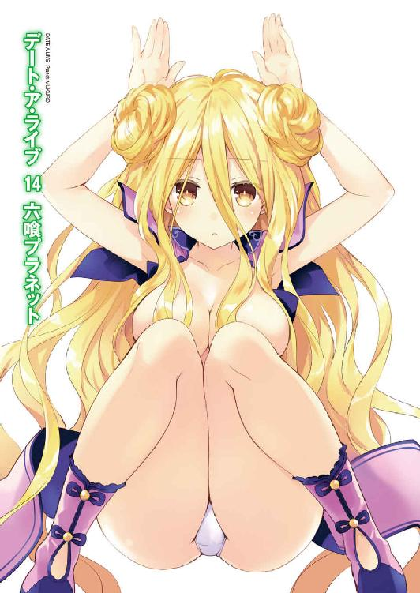
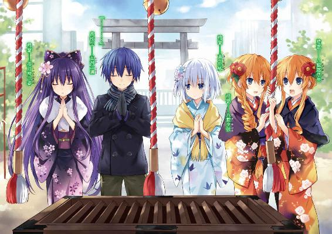
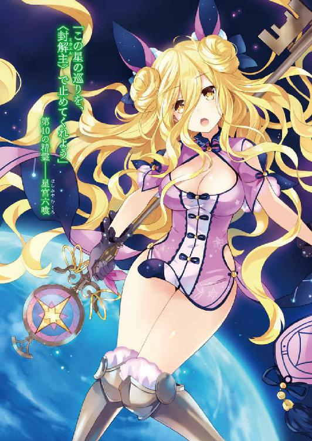
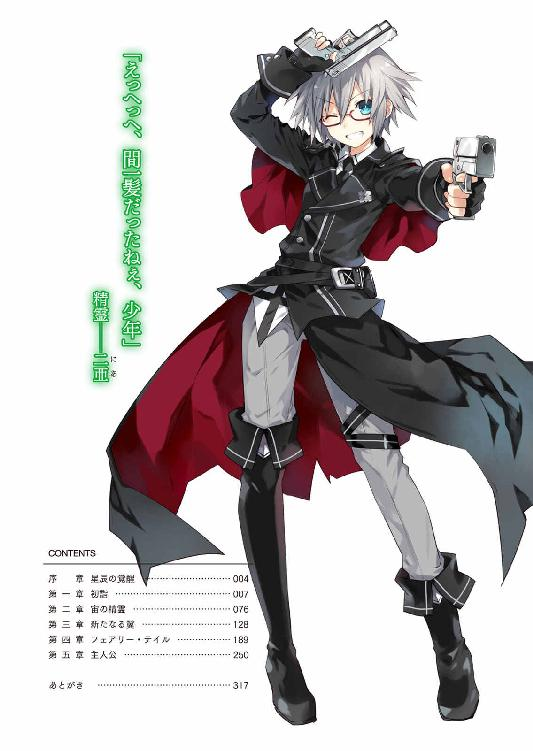
デート・ア・ライブ14
六喰プラネット
橘 公司

富士見ファンタジア文庫
本作品の全部または一部を無断で複製、転載、配信、送信したり、ホームページ上に転載したりすることを禁止します。また、本作品の内容を無断で改変、改ざん等を行うことも禁止します。
本作品購入時にご承諾いただいた規約により、有償・無償にかかわらず本作品を第三者に譲渡することはできません。
本作品を示すサムネイルなどのイメージ画像は、再ダウンロード時に予告なく変更される場合があります。
本作品の内容は、底本発行時の取材・執筆内容に基づきます。
本作品は縦書きでレイアウトされています。
また、ご覧になるリーディングシステムにより、表示の差が認められることがあります。
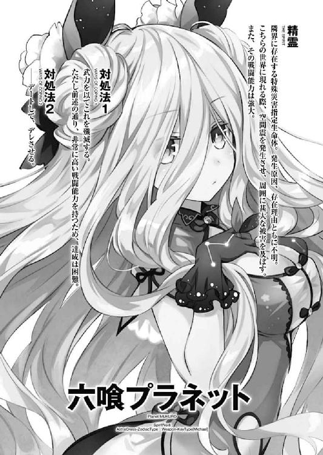
序章 星辰の覚醒
空であって空でない場所。
世界であって世界でない場所。
暗い、暗い空間の中を、少女は一人漂っていた。
石のように。
塵のように。
芥のように。
少女はただただ、『そこ』に『居』た。
もはや、彼女は自然の一部となり、世界の一部となりつつあった。抗わず、逆らわず、干渉せず、干渉されず、無という名の平穏の中をただ、たゆたい続ける。
彼女の姿を見る者はおらず、彼女の声を聞く者もいない。否──それ以前に、彼女の存在を知る者さえも、この世界にはそういないのではあるまいか。
だが、彼女はそれに不満を覚えたことはなかった。
微かな寂寞も。僅かの逡巡も。微塵の焦燥も。
否。それだけではない。
歓喜も。快楽も。──慕情も。
何一つ──彼女の閉じられた心は、抱いたことがなかった。
しかし、それでよかったのだ。彼女が望んだのは静寂であり、平穏であったのだから。
──だが。
その日。彼女のもとに、招かれざる客が現れた。
見るも巨大な鉄の塊。長い手足の歪な人型。
そんな異形共が、彼女の領域を侵したのである。
彼女は何ものにも干渉しない。
しかし何ものかに干渉されたときのみ、それを排除するよう、心の一部を残していた。
一体どれくらいぶりになろうか。
彼女は──その目を開けた。
「................................................ふむん？」
誰にともなく呟き、丸まっていた身体を伸ばす。長らく運動をしていなかった骨と肉が、小さく悲鳴を上げた。
「......ほうほう？ むくを起こすは何者かと思えば、異形の群れであったか」
少女は手を掲げると、小さく『名』を呟き、巨大な『鍵』をその手に取った。
そして、その先端を巨大な影に向ける。
「──目障りじゃ、去ぬるがよい」
その日。
地球にとって最悪の天災が、目を覚ました。
第一章 初詣
聞いた話によると、初詣の際賽銭箱に入れるお金は、多ければよいというものでもないらしい。
『ご縁』とかけて五円玉を投げ入れるというのは有名な話であるけれど、これが六五円となると『ろくなご縁がない』となり、五〇〇円玉は、それ以上の価値を持つ硬貨がないことから、『これ以上効果がない』となってしまうのだという。奮発して通常の一〇〇倍のお賽銭を入れたのに効果がないとはひどい話である。
まあ、神様は金額の多寡によって贔屓をしたりしないというふうにも取れるのだが、これが一万円札となると『円満』となり縁起が良いというから始末が悪い。
とはいえ無論、高校生である士道に一万円などを投げ入れる度胸があるはずもない。士道は神様の慈悲に感謝しながら五円玉を放ると、鈴を鳴らして二礼二拍手一礼をした。
「............」
そして目を閉じながら、頭の中に願い事を思い浮かべる。
本当に神様というのが本殿の奥に座していて、参拝者たちの願いを叶えてくれるだなんて思ってはいない。そもそも日本の神様は八百万。いわば数多の専門家の集まりである。その中の一柱に、集まった参拝客の多種多様な願い全てに対応しろというのは酷な話だろう。
けれど、この行為にまったく意味がないとも、士道は思っていなかった。
願いや望み、目標は誰しも持っているものである。だが、意外と日常生活の中でそれを強く意識することはないのではないだろうか。
もちろん受験生や恋する乙女などは常に願いを思い描いているのかもしれないけれど、そんな彼ら彼女らも、日頃享受している何気ない幸福や、自分の置かれた環境に目を向けることは少ないように思う。
壮健な人が二足で立ち上がれるよう願うことはなく、裕福な人が糊口を凌げるよう願うこともない。
無論それらは極端な例ではあるけれど、人は誰しも、自分では気づかない幸福を持っている。しかし、誰もがそれが続くことを願っているはずなのに、あえて意識しようとはしない。
だから──士道は祈るのだ。
神様に祈り、己に、改めて自覚させるのだ。
今ある幸せが、ずっと続くようにと。
「......ふぅ」
士道は小さく息を吐くと、目を開け顔を上げた。
そして左右に視線を向ける。するとそこに、先ほどまでの士道と同じように手を合わせる少女たちの姿があった。
士道を中心にするように、右に十香、折紙。そして左に耶俱矢、夕弦。
そう。皆士道と同じ来禅高校に通う生徒たちであり──士道が今まで力を封印してきた精霊たちである。
皆それぞれ煌びやかな晴れ着を身に纏い、熱心に祈りを捧げている。士道も比較的長い時間祈っていたと思うのだが......彼女らは一体何を願っているのだろうか。
「むん」
士道がそんなことを考えていると、隣にいた十香が水晶のような双眸を開き、顔を上げた。綺麗に結われた夜色の髪が頰をくすぐり、陽光を浴びてつやつやと輝く。
「おお、待たせたか、シドー」
「いや、大丈夫だよ。何を願ってたんだ？」
「うむ。今年も美味しいものがたくさん食べられるように、だ！」
「はは、なるほど」
なんとも十香らしいお願いである。士道は思わず頰を緩めた。これは今年も腕を振るわねばなるまい。
と、士道が夕飯のメニューは何にすべきかと考えていると、十香が付け足すように言葉を続けた。
「それと、もう一つ」
「ん？」
「シドーや皆と、ずっと一緒にいられるように、だ」
十香が太陽のような笑みでそう言う。士道は一瞬目を見開いたのち──
「ああ、そうだな」
優しく笑って、こくりとうなずいた。
するとそれに合わせるようにして、八舞耶俱矢・夕弦姉妹が参拝を終え、瓜二つの顔を向けてくる。
「お、二人は何をお願いしたんだ？」
士道が問うと、橙色と黒で色分けされた着物を着た耶俱矢がバッと手を顔の前に掲げ、やたらと格好いいポーズを取ってみせた。
「願い？ くく......何を言うかと思えば。我はこの地を治むる神がどの程度のものか覗き見たに過ぎぬ。まあ、我が威容に戦いていたようだったがな」
「密告。うそです。耶俱矢は小声で『今年こそは大人の階段を上れますように』と言っていました」
「マジっぽいトーンで適当なこと言うのやめてくれる!? 私は士道とデートできたらとしか──」
言いかけて、耶俱矢がハッと肩を揺らす。
名指しでそう言われると、さすがに照れる。士道は頰をぽりぽりとかきながら視線を逸らした。
「や、まあ、その......善処します」
「............！」
耶俱矢の顔がかあっと赤くなっていく。それを見てか、夕弦がうぷぷ......と含み笑いを漏らした。
「微笑。よかったですね」
「もー！ もーッ！」
夕弦が言うと、耶俱矢が涙目になりながらポカポカと夕弦を殴った。
「退避。痛い、痛いです耶俱矢」
「おいおい、他の人の迷惑にならないようにな......」
士道は苦笑しながら二人を止めた。
士道たちがいるのは、五河家近くにある神社である。もう一月四日ということもあって、三が日ほどの賑わいは見せていないものの、まだちらほらと遅い初詣にやってくる参拝客が見て取れた。
さすがに耶俱矢もそれを察したのだろう。顔を赤くしながらも呼吸を整え、気を取り直すように頰を張る。
「......おっけ。落ち着いた。闇の加護よ我を護れ」
「そ、そうか。じゃあそろそろ行くか......っと、ん？」
と、皆を連れて本堂の前を離れようとしたところで、士道はまだ一人、手を合わせている少女がいることに気づいた。
白地に折り鶴柄の着物を着た少女──折紙が、何やらぶつぶつと呟きながら一心不乱に祈りを捧げている。
「折紙？」
「随分長いわね......何願ってるのかな」
耶俱矢が興味深そうな顔をして折紙の方に歩み寄り、耳を近づける。
すると、その数秒後。
「............ッ!?」
折紙の小さな呟きを聞いたと思しき耶俱矢が、先ほどよりも強烈に、ボンッ！ と顔を赤くしながら後方に飛び退いた。
「か、耶俱矢？」
「む？ 折紙が何か言ったのか？」
十香が不思議そうにそちらに近づいていく。すると耶俱矢は何やら慌てた様子でブンブンと首を振り、十香を制止した。
「待ッ！ 駄目！ 十香にはまだ早い！」
「む......？」
「い、一体、何を願ってるんだよ、折紙......」
耶俱矢の様子に、士道は思わす汗を滲ませた。と、ちょうどそこで、折紙が願い事を終え、顔を上げてこちらを向いてきた。
「お、終わったか、折紙」
「............」
士道が問うと、折紙は無言でうなずき、お腹をさすってグッと親指を立ててきた。
「準備は万端」
「何の準備!?」
士道は悲鳴じみた声を上げると、額に手を置きながらはあとため息を吐いた。
「と、とにかく。次の人たちが待ってるから、行こう」
士道の言葉に、精霊たちがこくりとうなずく。士道はお騒がせしてすみません、というように後ろに並んでいた参拝客に頭を下げると、賽銭箱の前から移動した。
そして人の少ないエリアで足を止めたのち、きょろきょろと辺りを見回す。
「ええと、琴里たちはどこにいったかな......？」
士道はそう言いながら、妹の琴里の姿を捜した。初詣には琴里や他の精霊たちも来ていたのだが、賽銭箱の大きさから、一度に参拝できる人数が決まっていたため、数グループに分かれてお参りをしていたのである。
「おーい、おにーちゃーん」
と、そこで後方から、聞き慣れた呼び声が聞こえてくる。
士道はその声の方向に振り向き、琴里の姿を確認すると、「お」と目を丸くした。そこには予想通り琴里と他の面々がいたのだが──もう一つ、気になるものが目に入ったのである。
隣にいた十香もそれに気づいたのだろう、不思議そうな顔をして首を傾げる。
「む？ 琴里、何をしているのだ？」
とはいえ、それも無理からぬことなのかもしれなかった。琴里たちがいる場所には会議に使うような長机が設営してあり、精霊たちをはじめとした参拝客たちが、ペンを手にして何かを熱心に書き込んでいたのである。
「ん」
赤い着物に身を包んだ琴里が、白いリボンで括られた髪を揺らすようにしながら、手にしていたものを示してくる。
それは、家のような形をした小さな木の板であった。上部に紐が括り付けてあり、吊り下げられるようになっている。
そう。いわゆる、絵馬というやつである。
「おお、それは何だ？」
「これは絵馬っていうの。これに願い事を書いて下げておくと、願いが叶うんだぞ？」
「なんと！ 本当か!?」
琴里の言葉に、十香は目をキラキラと輝かせた。
「むう、七夕といい先ほどのお参りといい、そんなにもたくさん願いを叶えてくれる行事があるのか。すごいな！」
「あはは......まあ、とはいっても必ず叶うってわけじゃないから、期待しすぎるなよ？」
士道が苦笑しながら言うと、十香が力強く「うむ！」とうなずいてきた。
「わかっている。神様とやらも大変そうだからな！」
そしてそう言って、ソワソワするように身体を揺らしながら、士道の目を見つめてくる。八舞姉妹の方を見やると、彼女らもまた似たような表情をしていることがわかった。
「せっかくだし、書いてみるか？」
『おー！』
士道の言葉に、精霊たちは嬉しそうな声を上げた。
そこまで喜びを露わにされると悪い気はしない。士道は苦笑しながら人数分の絵馬を買うと、十香たちに配っていった。
「さ、じゃあ空いてる場所で書かせてもらおうか」
「うむ！」
十香たちがわいわいと盛り上がりながら、テーブルの上に置いてあったペンを取る。
士道もそれに倣うようにペンを手に取ってから、既に絵馬を書き始めていた精霊たちに目をやった。
「お、上手いじゃないか、四糸乃」
言いながら、士道は手前にいた四糸乃の絵馬を覗き込んだ。絵馬の右半分に、眼帯を付けた可愛らしいウサギの絵が描かれている。
「あ、ありがとうございます......」
四糸乃が少し照れたように頰を染めながら顔を上げてくる。若草色の晴れ着と、綺麗に結い上げられた髪とが、彼女を日頃よりも少しだけ大人っぽく見せていた。
『うふふー、でしょー？ 士道くんたらわかってるぅ』
と、それに同調するように、四糸乃の左手に着けられていたパペットがパクパクと口を動かしてくる。こちらも四糸乃と揃いの着物を着ており、その顔は、四糸乃が絵馬に書き込んだそれと瓜二つだった。
「ああ、大したもんだ。そんなに可愛い絵馬なら、神様も見つけやすいかもな」
士道が言うと、四糸乃は少し恥ずかしそうに笑った。
「あ......でも、それなら七罪さんと二亜さんの絵馬も凄いですよ」
「え？」
四糸乃の視線を追うように顔を上げ──士道はピクッと眉の端を揺らした。
皆と少し離れた場所で、二人の少女が向かい合うようにして絵馬を書いていたのだが......彼女らの周りに渦巻く雰囲気が、周囲のそれとはまったく異なっていたのだ。
濃緑の着物を着た小柄な少女と、ダウンジャケットを羽織った眼鏡の少女が、ペンを何色も使い分けながら、小さなキャンパスに可愛らしい振り袖姿少女のイラストを描いている。
それだけを聞けば別段おかしなことではないのだが......二人の様子は、新年和やかに絵馬を書いているというよりは、締め切り直前の漫画家が原稿に挑んでいるかのようだったのである。
しかも双方、その出来映えがプロレベル（というか、片方は正真正銘のプロ）であったため、否応なく周囲の注目を引き付けていた。
「お、おーい、二人とも？」
声をかけると、七罪と二亜はそこで初めて士道が近くにいることに気づいたように顔を上げてきた。
「......はっ」
「お、少年。遅かったじゃーん」
癖の強い髪を綺麗に結い上げた七罪がビクッと肩を揺らし、特におめかしらしいおめかしもしていない二亜が、眼鏡の位置を直しながら人なつっこい笑みを浮かべてくる。
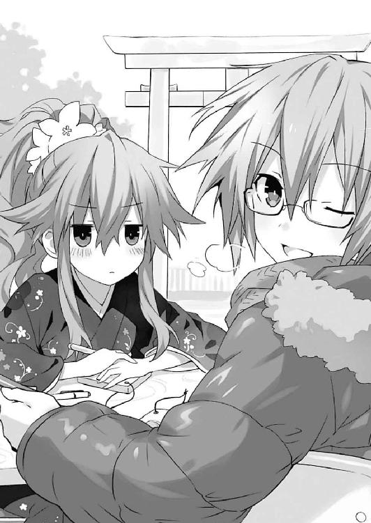
「はは......上手いもんだな。さすがはプロ」
士道が苦笑しながら言うと、二亜がふふんと得意げに胸を反らしてきた。
「まぁねー。仮にも絵描きの端くれとして？ 手は抜けないっていうか？」
言って、二亜が手にしていたペンを器用にくるくると回してみせる。
するとそれとは対照的に、七罪がばつの悪そうな顔をしながら、イラストを描いていた絵馬を手で隠した。
「......私は二亜に乗せられただけで、別に描きたくて描いてたわけじゃないけど......」
「ええー、ここまでやっといてそんなこと言っちゃう？ ついさっきまで二人でまんが道を歩んでいこうって話してたじゃん」
「言ってないし!? 何まんが道って!?」
たまらずといった調子で七罪が叫ぶ。二亜はカラカラと笑うと、士道の方に視線を戻してきた。
「いやー、でも実際、なっつん有望よ。正直ウチのアシスタントに欲しいんだけど、どうよ。給料はそれなりに払えると思うし、もしその気があるなら編集にも紹介してあげられるけど」
「......いや、別に私、そういうのは。ていうかなっつんって何......？」
「え？ あだ名だけど？ ほら、あたしとなっつんくらいの仲になると、自然とそういうのできちゃう感あるじゃん」
「えっ、そんな深い仲になった覚えないんだけど......」
七罪が頰に汗を垂らしながら言うも、二亜は聞いていないようだった。何やら感慨深げに腕組みしながら続けてくる。
「ちなみに『なっつん』っていうのはあれよ。『七罪』って名前と『ナッツ』をかけてあるからね。ほら、殻に籠もってる感じとかそれっぽくない？ ピスタチオみたいにちょっと開いた殻の隙間からこっちを覗いてるイメージ」
「......ぶふっ」
硬い殻の合間からそろそろとこちらの様子を窺っている七罪の姿が容易に想像できてしまい、士道は思わず吹き出してしまった。
「............」
七罪がジトーっとした視線で見つめてくる。士道は誤魔化すように咳払いをして二亜の方に向いた。
「そ、それより二亜は本当によかったのか？ 二亜の分も〈ラタトスク〉が晴れ着を用意してくれてたみたいだけど......」
いつもと代わり映えのしない格好をした二亜を見ながら士道が言うと、二亜はヒラヒラと手を振った。
「あー、うん。昔資料用にと思って一回着たことあるんだけど、どうも動きづらくってねぇ。それにほら、あたしは基本裏方っていうか、フレームの外側にいる人だから。綺麗なみんなを見られれば満足なのよさ」
「そうなのか？ 二亜も似合いそうだけどな」
何とはなしに士道が言うと、二亜が一瞬目を丸くしたのち、ニマニマと口元を歪めてきた。
「えっへっへ、なーにぃ少年、新年早々二亜ちゃん口説こうってぇの？ さすがお盛んねー。英雄色を好むってやつ？」
「へ？ あ、いや、そういうつもりじゃ」
「んーふふふ、でもそっかー。少年たら晴れ着フェチかー。乱れた着物から覗く肌に興奮しちゃうやつかー。よし、じゃあそんな少年にはこれをあげよう」
人聞きの悪いことを言いながら、二亜がポケットの中から絵馬を取り出し、士道に手渡してくる。
「ん？ なんだこれ。もう一枚買ってたのか......って」
その絵馬に視線を落とし、士道は息を詰まらせた。
それはそうだ。そこには、着物をはだけた美少女と、それに覆い被さる少年という、ギリギリ一五禁くらいのきわどいイラストが描かれていたのである。ついでにその横に『こんな感じのラッキースケベに遭遇したいです。二亜』と、なんとも具体的な願い事がしたためられていた。
「に、二亜、なんだよこれ！」
「絵馬だよー。いやー、最初はそれ描いてたんだけど、妹ちゃんに『公序良俗いはーん！』って怒られちゃって。自分で持って帰るのもなんかアレだから、よかったらもらってくんない？」
「お、おまえなあ......」
士道は額に汗を滲ませたが、道行く人々がちらちらと士道の手元を覗いてくることに気づき、気まずげに自分のポケットにそれをしまった。二亜がなんだか妙に嬉しそうに笑う。
「まあ、それはそれとして、なっつんの件はマジよ。あ、それに少年も雇いたいなー」
「俺？ いや、七罪ならまだしも、俺なんて大したことできないぞ？」
「いやいや、アシスタントの仕事って漫画手伝うだけじゃないからね。ご飯作ってくれたり、洗濯してくれたり、掃除してくれたりだけでも超助かるし......って、そりゃアシってより主夫だな。よしいいこと思いついた。結婚しようぜ少年」
「おいおい......」
士道が苦笑すると、二亜があははと笑った。
「いやでも、実際欲しいのよメシスタント。漫画方面でも、たまになっつんと抱き合ってエロい構図取りに協力してくれるだけでもだいぶ助かるし」
「な......っ」
「......ッ!?」
軽い調子で発された二亜の言葉に、士道と七罪は思わず息を詰まらせた。二亜のいつもの冗談だということはわかっているのだが、当事者が目の前にいたためか、互いに意識してしまったのである。
と、次の瞬間。たたたっ、という足音が聞こえてきたかと思うと、ずさー！ と晴れ着姿の少女がテーブルに身を乗り上げてきた。
「だーりん今何の話してましたー!? 七罪さんとエロエロがどうとかって聞こえた気がするんですけどー!?」
そう言って長身の少女が、電池でも入っているのではないかと思えるくらいに目をキラッキラと輝かせる。
「み、美九......!?」
突然の登場に、士道は目を見開いた。
そう。そこに現れたのは、士道が力を封印した精霊であり、今日本でも屈指の人気を誇るアイドル、誘宵美九その人だったのである。
だが、今の彼女の表情は、アイドルという狭いフィールドから抜け出し、新たなる世界へと踏み出しつつあった（精一杯のオブラート）。
「あっ、もしかして二亜さんのアシスタントってやつですかー？ だーりんと七罪さんがやるなら私も！ 私もやりますー！ 三人以上の構図バンバン取りますぅっ！」
美九がテーブルに寝そべったまま、テンション高く手を上げてくる。七罪が嫌そうに眉をひそめた。
「あ、ほんと？ そりゃ助かるわ。んー、でも確か、みっきーアイドルなんでしょ？ ギャラ高そうだなー」
「そんなことありません！ ノーギャラで結構です！ むしろ何なら私が料金お支払いします！」
美九がビッと親指を立てながら言う。すると、その身体がずるずると引っ張られていった。見やると、琴里と十香がテーブルの上に寝そべった美九の足を引っ張っていることがわかる。
「はいはい、仮にもアイドルなんだからあんまり奇行に走らない」
いつの間にかリボンを白から黒に変えた琴里が、半眼を作りながら言う。すると美九が、抵抗するようにジタバタと足を動かした。
「あぁーん！ 琴里さんと十香さんのいーけーずぅー！」
「ちょ──」
「む、美九、あまり暴れるな」
「お、おい、ちょっと、危な──」
テーブルがバランスを崩し、三人を巻き込んでどんがらがっしゃんと倒れてしまう。士道は咄嗟に三人の身体を支えるように手を伸ばしたが......それがいけなかった。士道もまたそれに巻き込まれ、一緒にその場に倒れ込んでしまう。
「ってて......大丈夫か、三人とも......って」
そこで、士道はビクッと肩を揺らした。
それはそうだ。何がどこでどうなったのか知らないが、士道は、着物をはだけた十香の上に覆い被さるような格好になってしまっていたのである。
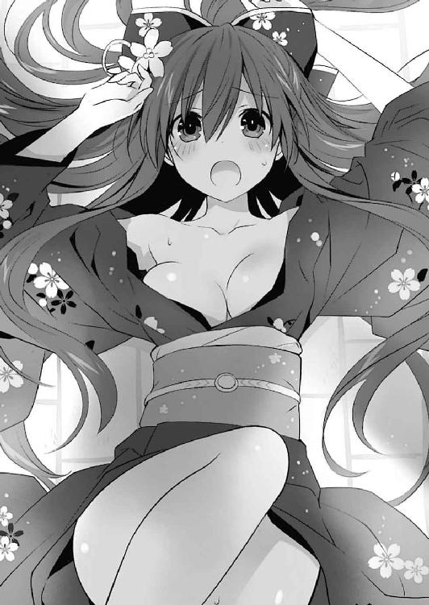
「な、何をする、シドー！」
「わっ、す、すまん......！」
「あーん！ だーりんと十香さんばっかりずるいですー！ どっちでもいいので替わってくださいー！」
と、士道たちが騒いでいると、隣のテーブルにいた二亜が歩み寄ってきて、倒れた拍子に士道のポケットから転げ落ちたと思しき絵馬を手に取った。
そして、そこに描いてあったイラストと士道たちの姿を見比べ、驚いたように目を見開く。
「マジ？ この神社の御利益すっげぇ......」
言われて、気づく。今の士道と十香は、まるで二亜の描いた絵馬のような構図に収まってしまっていたのである。
「言ってる場合か......っ！ っとと......ほら、立てるか、十香」
「う、うむ......」
十香が頰を染めながら裾を直し、士道の手を取って立ち上がる。
士道たちは周りの参拝客にお騒がせしましたと頭を下げたのち、倒れてしまったテーブルを元の位置に立て直した。
「まったく......気をつけてよね」
「すみませんー。今度はちゃんと琴里さんの上に覆い被されるよう努力します」
「............」
美九の言葉に、琴里が渋面を作る。そんな様子を見てか、二亜が心底可笑しそうに笑った。
「あっはは、本当に飽きないね、君たちを見てると」
「笑い事じゃないんだけどなあ......」
士道が疲れたように言うと、二亜がペンを手に取り、描きかけの絵馬に向かった。
「さてさて。どうやらここの絵馬御利益あるっぽいし、神様にお願いっと。『少年があたしの嫁になりますように』」
「冗談にしてもせめて旦那にしておいてくれないかな!?」
二亜がさらさらとペンを走らせ、美麗なイラストの横にそんな願い事を書き込む。士道はたまらず叫びを上げた。
「あっはっは、ご愛敬ご愛敬。さて、これはどこに掛ければいいのかな──っとと......」
ペンを元の位置に戻し、絵馬を片手に二亜が前傾させていた身体を起こす。すると目眩でも起こしたかのように、その身体がぐらりとよろめいた。
「......！ 二亜、大丈夫か？」
慌てて手を差し出し、その背を支える。すると二亜が緊張感のない笑みを浮かべながら、おどけるように口元に手を置いてみせた。
「あらん。少年たら王子様みたい」
冗談めかした調子でそう言って、クスクスと笑う。しかし士道は険しい表情を作ると、二亜の顔をジッと見つめた。
「言ってる場合か。本当に大丈夫なのか？ やっぱりまだ休んでた方がよかったんじゃ......」
「じょーだん。みんなで初詣なんてギャルゲ必須イベントに来るってのに、二亜ちゃんだけ除け者ってそりゃないぜ～」
そう言って二亜が肩をすくめる。すると士道の後方から琴里が進み出てきて、その頭をコツンと小突いた。
「つい昨日まで車椅子だったくせに何言ってるのよ。......一応、裏に車は待たせてるから、調子が悪かったらすぐに言ってちょうだい。少なくとも、万全の体調とは言いがたいんだから」
「やーねー、妹ちゃんたら心配性。大丈夫だってば。今のはわざとよろめいて少年に合法的ハグをしてもらおうと思っただけだから。効果は実証されたし、妹ちゃんも使っていいよ」
「な......っ」
二亜の言葉に、琴里が眉をひそめる。すると二亜はカラカラと笑いながら、絵馬を手にして、絵馬掛所へと歩いていってしまった。
その後ろ姿を見送りながら、琴里がやれやれと腕組みする。
「まったく......深刻な話題になるとすぐはぐらかそうとするんだから」
言って、ふうと息を吐く。
確かに二亜はいつも飄々としており、どこか捉えどころがない。たぶん、深刻な雰囲気が苦手なのだろう。こういった話題になると、すぐに冗談を言うか、どこかへ逃げてしまうことが多かった。
とはいえ、琴里が二亜のことを心配するのも無理からぬことではあった。何しろ二亜はほんの数日前、何の冗談でもなく死にかけていたのだから。
「............」
一二月三一日のことを思い出し、士道はギリと奥歯を嚙みしめた。
あの日、二亜はＤＥＭ社の策謀によって反転し──無理矢理その霊結晶を奪われてしまった。
もしもあの場に士道たちがいなかったなら、もしも少しでも処置が遅れていたなら、二亜がこうして絵馬を描くことはできなかっただろう。
だが、二亜がどうにか一命を取り留めたからといって安心はできない。敵は反転した二亜の魔王〈神蝕篇帙〉を手に入れてしまったのだ。これから精霊たちを狙うＤＥＭの攻撃はさらに激しいものとなるだろう。その懸念も、士道がこの日常が続くよう神に願わねばならない理由の一つであった。
そして──もう一つ。
士道には、気になることが残っていた。
「琴里。例の件って......」
「ええ」
士道が他の皆に聞こえないくらいの声で問うと、琴里が察したように小さくうなずいた。
「一応、こちらでも調査を進めてるわ。でも、今のところ確証がないっていうのが正直なところね」
「──そうか」
士道は目を伏せながらそう返すと、元日の朝に二亜の口から語られた言葉を思い起こした。
◇
「純粋な精霊......？ 精霊って、基本的にみんな、元は人間だったはずでしょ？」
年を跨いで間もない一月一日の未明。
ビルの屋上で初日の出を見ていた精霊たちの中で、車椅子に乗った二亜がそんなことを言い出した。
しばらくの間、沈黙が辺りに満ちる。
純粋に驚愕している者、その言葉の意図を測ろうとしている者、よくわからないが皆が驚いているので驚いた顔をしておこうとしている者......それぞれのリアクションに微妙に差異はあれど、皆、二亜の発言に言葉を失っていた。
しかし、それも無理からぬことである。
──精霊。
隣界に存在する特殊災害指定生命体。
その発生原因及び存在理由はわかっておらず──ただ、こちらの世界に現れる際、空間震と呼ばれる現象が起こることが確認されている。
そして。琴里や美九、折紙などの事例から、人間が霊結晶を埋め込まれることにより、精霊化することもわかった。
そう。士道たちの認識では、精霊は人間とは別の存在であり、琴里たちの精霊化こそがイレギュラーなものだったのだ。
だが二亜の言葉は、その考えを覆すものであった。
とはいえ無論、それがすんなりと受け入れられるものならば、士道たちも言葉を失ったりはしない。十香をはじめとする純粋な精霊たちは、琴里たち元人間の精霊と異なり、こちらの世界のことを知らなかった。七罪や八舞姉妹などはある程度こちらの世界になれていた様子だったが、それも、静粛限界を繰り返して得た範囲の知識であり、自分がもともと人間であっただなんてことは聞いたことがなかった。
しかし、二亜の言葉を適当な噓だと切り捨てられないのもまた、事実であった。
霊結晶を奪われ、力の大部分を失ってしまったとはいえ、二亜の持つ〈囁告篇帙〉は全知の天使である。要は──二亜は、欲した情報を、あらゆるセキュリティを乗り越えて手にすることが可能だったのだ。かつての二亜が士道たちの知らない精霊の情報を知っていても、何もおかしくはなかった。
士道はごくりと息を吞んだ。もしも二亜の言うことが正しいとするならば、士道が純粋な精霊であると思っていた精霊たちは──
「──なんちゃって。あは、びっくりした？」
と。
士道が思考を巡らせていると、沈黙を裂くようにして、二亜がおどけるような調子でそう言った。
「..................、は？」
予想外の発言に、士道は思わず目を点にして、間の抜けた声を発した。
「ど、どういうことだ、二亜」
「んー？ 漫画的には、ここらで一発衝撃の真実！ 的なのがあると盛り上がるかなーと思ったんだけど、なんかみんな思った以上にポカンとしちゃうもんだから」
言って、二亜が「てへ」と舌を出してみせる。
士道は数秒の間呆然と立ち尽くしたのち、大きなため息を吐いた。
「おまえなぁ......」
「えっへっへ、ごめんごめん。でも面白くない？ 精霊全員元人間説。あたしとしてはことあるごとに推していこうと思うんだけど」
悪びれた様子もない二亜に、士道はもう一度ため息を吐いた。琴里をはじめとした精霊たちも、皆似たような表情を作っている。
「さ、じゃあそろそろ戻りましょうか。ここは冷えるしね」
琴里が肩をすくめながらそう言うと、精霊たちはうなずき、建物の中へと戻っていった。士道もそれに続くように、二亜の座った車椅子を押してそちらへと向かう。
と、そのとき。二亜が士道の方を振り向いたかと思うと、小さな声を発してきた。
「──少年、あとで病室に来て」
「え？」
あまり二亜らしくない真剣なトーンの声に、士道は目を丸くした。
が、そのときにはもう二亜は、いつもの調子に戻っていた。
「どったの少年。寒いよ、早く戻ろ。それとも何？ 少年が人肌で温めてくれちゃう系イベント発生？」
二亜がそう言って、自分の肩を抱いてくねくねと身を捩ってみせる。
「............」
士道は、今の言葉が聞き間違いであったのではないかという疑問を抱えながら、車椅子を押して建物内へと入っていった。
──そして、それからおよそ一時間後。
精霊たちをマンションや自宅に帰したのち、士道は一人、〈ラタトスク〉地下施設の廊下を歩き、二亜の病室へとやってきていた。
部屋の番号を確かめてから、コンコン、と扉をノックする。すると扉の奥から、くぐもった声が聞こえてきた。
『うーい、どうぞー』
「二亜、来たぞ。何か......」
扉を開けてそう言いかけ、士道は言葉を止めた。
部屋の中に、二亜以外の人影を見つけたからだ。
「あれ、琴里？ どうしてここに」
そう。ベッドの横に置かれた丸椅子に、チュッパチャプスをくわえた琴里が腰掛けていたのである。
士道の言葉に返すように、二亜が小さくうなずいてくる。
「ああ、妹ちゃんもあたしが呼んだんだ。〈ラタトスク〉の司令だからね。一応ちゃんと話しておいた方がいいと思って」
「話しておいた方が......って、一体何を」
士道が問うと、琴里がチュッパチャプスの棒をピンと立ててきた。
「──さっきの話の続き、でしょ？」
言って、難しげな表情で腕組みする。士道は思わず目を見開いた。
「さっきのって、精霊が元人間だった......ってやつか？ あれは冗談だったんじゃ──」
「んー......言っちゃったあとに、純粋精霊組がいる場所で話すことじゃなかったかなーと思ってね。咄嗟に誤魔化したんだけど信じてもらえたみたいね。これも日頃の行いのおかげっていうのかな？」
二亜がペロリと舌を出す。士道は半眼を作ってそれを見た。
「......俺の知ってる言葉だと『狼少年』って方が近いかな」
「やだ、少年が狼だなんて。少年のえっち！」
「ああうんそういうところ」
士道は冷めた調子で言った。実際、二亜は日頃から冗談めかした調子で話すことが多いため、それが功を奏した形になったのかもしれなかった。
だがそうなると、一つの事実が鎌首をもたげてくる。
「......っていうことは、本当なのか。さっきの話は」
気を取り直すように士道が言うと、身をくねらせていた二亜が動きを止め、視線を返してきた。
「本当だよ。でも、全部が本当ってわけじゃない。いや、それも語弊があるか。一つわかって欲しいのは、全知の〈囁告篇帙〉は、決して全能ではないってこと」
「どういうことだ？」
「ええと、順を追って説明するとね──」
と。二亜が話し始めようとしたところで、ドアノブがカチャリと鳴ったかと思うと、キィと音を立てて扉が開かれた。
医務官の回診にしては時間が遅すぎる。士道はそちらに目をやり──驚きの表情を作った。
「折紙！ 真那！」
そう。二亜の病室にやってきたのは、先ほどまで一緒に屋上にいた折紙と、二亜と同じような病衣に身を包んだ少女だったのである。
「二人とも、一体なんで二亜の病室に。......あ、もしかして折紙も二亜に呼ばれたのか？」
士道が問うと、折紙は静かに首を横に振った。
「呼ばれてはいない。でも、屋上での二亜の態度に不審な点があったから、本当の話を聞きたくて」
そう言って折紙が二亜の方を見る。二亜はコミカルな動作で、両手で心臓の辺りを押さえた。
「えっ何その通じ合ってる感じ。二亜ちゃんドキドキなんですけど」
「............」
折紙が何を返すでもなく無言でいると、その後ろに控えた真那が声を上げてきた。
「私は、トイレに行こうと思ったら兄様の姿を見かけたもので。そういえば聞こうと思って聞きそびれていたことがあったなあと。鳶一一曹とは偶然そこで会っただけです」
と、真那が言うと、二亜がピクリと眉を動かした。
「ちょっと待った。君今何て言った？」
「え？ だから、聞きそびれていたことを──」
「ノンノン！ そこじゃない！ もう一個前！」
「兄様の姿を見かけて？」
「兄様！」
二亜は、天啓を受けた敬虔な神職者のような調子で手を組み合わせ、恍惚とした表情を作った。
「すっげぇ！ 兄様！ 二次元でしか聞いたことのない夢呼称の一つ！ リアルで初めて聞いた！ ね、ねぇねぇ、もっぺん言ってみてもらえる？」
「......な、なんでいやがるんですかこの人は......」
真那が渋面を作りながら後ずさる。士道は苦笑しながら二亜を紹介するように手を向けた。
「本条二亜だ。精霊で──漫画家をやってる。つい昨日霊力を封印したんだが......ちょっといろいろあって、ここに入院してるんだ」
「はろはろー」
二亜がヒラヒラと手を振る。真那はペコリとお辞儀をすると、自己紹介をするように胸元に手を当てた。
「崇宮真那です。兄様の妹で、魔術師です。ちょっと前まで〈ラタトスク〉で戦闘員をやっていたんですが、今は琴里さんの手にかかり虜囚の身となっていやがります」
「ちょっと！ 私を悪者っぽく言うのやめてくれる!? 無理をするあなたが悪いんじゃない！」
真那の言葉に、琴里が不満げに声を上げる。だが二亜はそれよりも気になることがあるといった様子であごに手を当てていた。
「え、少年の妹なの？」
「さっきから兄様って言ってたじゃないか」
「いやごめん『兄様』って響きに感動し過ぎてその意味まで考えが至ってなかった」
「............」
士道は頰に汗を垂らした。こういうところは相変わらずである。
「ん？ でも待てよ。少年の苗字は五河だよね。もしかして複雑な家庭の事情？ それとも──あっ、もしかして妹萌えの少年が『兄様』って呼ばせてる系？」
「なんでそうなるんだよ!?」
二亜の言葉に、たまらず叫びを上げる。二亜は後頭部に手をやりカラカラと笑った。
「やー、ごめんごめん。そうでもしないと『兄様』なんて萌え呼称しないと思って」
「えっ、なんか私馬鹿にされてやがります？」
「まさか。むしろ尊んでる。君はずっとそのままでいて」
二亜がキリッとした顔で言う。真那は胡散臭げに眉根を寄せた。......もし今後真那の士道に対する呼称が変わったとしたら、間違いなく原因は二亜だろうと思う士道だった。
「......まあ、俺たちに関する話はちょっと長くなるから、あとで説明するよ。それよりも──」
士道が気を取り直すように言うと、二亜は「ああ」と思い出したようにうなずいた。
「そうだったね。まあ予定よりはギャラリーが増えちゃったけど、元人間の自覚があるオリリンに妹ちゃん二号なら問題ないか」
「ちょっ、ちょっ」
二亜が話し始めようとしたところで、真那が声を上げる。
「待ってください。なんですかその妹ちゃん二号っていうのは」
「え？ だってほら、妹ちゃんはもういるし」
言いながら、琴里を指さす。すると真那が不満げに息を吐いた。
「琴里さんは義妹で私は実妹。どっちかというと二号は琴里さんです！」
「だ、誰が二号さんよ！」
今度は琴里が叫びを上げる。......まあ、なんだか少々意味が違う気がしないでもなかったが。
「だってほら、髪の結び方一つ見ても、私は一つ結びですし、琴里さんは二つ結びですし。戦い方も技の私、力の琴里さんって感じですし」
「人をパワー馬鹿みたいに言わないでくれる!?」
「お、落ち着けって。──二亜、このままじゃ収拾が付かないから、別のあだ名を考えてくれないか？」
士道が二人の間に入りながら言うと、二亜は考えを巡らせるようにあごをかいてから言葉を続けた。
「んー、じゃあマナティで」
「なんか水棲生物っぽい気がしやがるんですが......」
真那はまだ不満が残っているという様子だったが、それきり押し黙った。きっと、話が進まなくなると判断したのだろう。
それを察してか、二亜がコホンと咳払いをする。
「じゃあ、話すけど......『精霊は元人間』。これは正しくもあるし、そうでもないかもしれない」
「それがよくわからないんだよ。......二亜自身は昔の記憶があるんだし、元人間だったんだよな？」
士道が言うと、二亜は「んー」とあごをさすった。
「なんていうんだろうな。少年の考えでいくと、あたしは『純粋な精霊』のカテゴリーに入っちゃう気がするんだよねえ」
「ど、どういうことだ？ だって、人間の頃の記憶があるんだろう？」
「落ち着いてってば。言ったっしょ。少年の考えでいくと、って」
二亜は指を一本立て、続けた。
「──何しろあたしは、自分が何者かもわからない、こっちの世界のことを何も知らない状態で、空間震を伴って隣界から出てきたんだから」
「え──？」
士道は、思わず目を見開いた。二亜が語ったそれは、まさしく十香たち純粋な精霊に共通することだったのである。
「ちょ、ちょっと待ってくれよ。それじゃあおまえの言う人間だった頃の記憶っていうのは......」
「まあ、聞いてよ。──初めて現界したとき、あたしは何が何だかわからなかった。でも、一つだけはっきりと理解していたことがあるの。これは、精霊全員に共通してるんじゃないかな」
「それは......？」
「──自分が持つ、天使の力」
「あ──」
確かに、その通りである。こちらの世界のことをあまり知らなかった十香や四糸乃も、突然精霊の力を与えられた折紙たちも、自らの持つ天使を自由自在に使いこなしていた。きっと天使には、自らの権能を宿主に理解させる力が備わっているのだろう。
そこで、士道は「あ」と声を発した。
二亜の持つ天使。その力に思い至って。
「突然こっちの世界に飛ばされて、何が何だかわからなかったあたしは、唯一理解できていた天使の力に縋った。──全知の〈囁告篇帙〉の力に」
「まさか、それって」
琴里が真剣な眼差しで二亜を見つめる。二亜は小さく首肯してから口を開いた。
「うん。それで、あたしは知ったの。自分がどんな存在で、どうやってこんな力を得て、どうしてあんなところにいたのかを」
「な──」
士道は眉根を寄せて驚愕を露わにした。
二亜が、補足をするように続ける。
「──あたしは、もともと人間だった。でもとあることがきっかけで、生きることに絶望して......そんなとき、目の前に精霊が現れた」
「......！ 〈ファントム〉......!?」
声を上げたのは琴里だった。
だがそれも当然である。今の二亜の話は、琴里や美九、折紙たちが精霊になったときのそれと酷似していたのである。
人間を精霊にする謎の存在。靄のように存在が捉えられないことから〈ファントム〉の識別名で呼ばれる精霊である。
「〈ファントム〉？」
「......ええ。私たちを精霊にした、ノイズのようなもので姿を覆い隠した精霊よ。それが、二亜の前にも現れたっていうの？」
「なるほどね、そういう名前が付いてたんだ。うーん、あたしの前に現れたのと妹ちゃんたちの前に現れたのが同じ精霊かどうかはわからないけど......一つ確かなのは、正直、あたしもあの精霊の正体は摑めてないってこと」
「正体がわからない？ 〈囁告篇帙〉で調べなかったってこと？」
琴里が問うと、二亜は首を横に振った。
「本来であればそういう黒幕チックなのは調べないでおくのがネタバレ嫌いな二亜ちゃんだけどさぁ。さすがにそのときばっかりは好奇心に負けて調べちゃったのよ。......でも、わからなかった」
「なんですって......？」
琴里が眉根を寄せる。だがそれも当然だ。〈囁告篇帙〉は全知の天使。この世にわからぬことなどないはずである。
「なんていうんだろうな......〈囁告篇帙〉はそれの情報を探し当ててたのかもしれないけど、あたしにはそれが読めなかったのよ。まるで......そう、たとえるなら文字化けでもしてるみたいに」
「どういうこと？ 何が起こったっていうのよ」
「さぁてね。ただ、〈囁告篇帙〉の検索をくぐり抜けた......ってより、そういう力の天使とかで妨害されたって印象なのかなあ。もしくはパワーが強すぎて〈囁告篇帙〉の表示がバグっちゃったって感じ？ ほら、敵の戦闘力が強すぎると、パワーメーターがボン！ て弾けるじゃん」
「うーん......」
琴里が腕組みして渋面を作る。二亜の言っていることを理解しつつも、何かがまだ引っかかっているという様子だった。
「......んまぁとにかく、あたしはその精霊に霊結晶を埋め込まれて、精霊になった。そして人間であった頃の記憶を封印された上で、こちらの世界に出てくるまで、隣界で眠らされ続けてたってわけよ」
「............」
二亜の話を聞いて、士道は押し黙った。
二亜の言うことが正しいとすれば──十香たち純粋な精霊も、人間であった頃の記憶を失わされているだけの可能性があるということである。
士道の思考を察したように、二亜が続ける。
「だから、てっきりみんなも同じ形で精霊になったものだと思ってたんだ。でもよく考えれば、全員が全員あたしみたいに自分の過去を覗けるわけじゃないし、みんなの前で言っちゃったのは失敗だったかなあと思って」
「......なるほど」
重苦しい調子で、声を発する。
確かに二亜のような経験があれば、そう思ってしまうのも無理のない話である。
「それに、あたしが調べたのはあくまであたしのことだから。ごめんね、思わせぶりなこと言っちゃって」
「......いえ」
難しげな顔をして腕組みしたまま、琴里がチュッパチャプスの棒をピコピコと動かした。
「十分有益な情報よ。もしも二亜の仮説が正しいとするなら......今までの考えは覆されることになる。三〇年前まで遡って、失踪した少女たちの中に該当する人物がいないか調査してみるわ」
「うん。ごめんねー。あたしが〈囁告篇帙〉取られなかったら、ちょちょいっと調べられたのに」
言って、本を捲るような仕草をしてみせる。
「気にしないで。命があっただけでもよかったわ」
琴里が肩をすくめながら言うと、折紙がそれに続くように声を発した。
「──でも、僅かでも霊力が残っていなければ、士道に封印はされなかったはず。まだ天使や限定霊装を顕現できる可能性はある」
「え？ そーいうもんなの？」
二亜が驚いたように目を見開く。折紙がこくりとうなずいた。
「士道に封印された力は、精神が不安定になったり、マインドセットを訓練すると逆流させることができる」
「ふーん......精神が不安定に、か......」
二亜はそう呟くと、目を閉じて小さくうなり声を上げ始めた。
「おい、二亜？ まだ本調子じゃないんだし、無理はしない方が......」
「......おりゃっ！」
士道の言葉を遮るように、二亜がカッと目を見開き、叫ぶ。
すると、次の瞬間。二亜の身体が淡く輝いたかと思うと、その光が手元に集まり──一冊の本を形作った。
「おおっ、ホントだ！」
「うおっ!?」
突如として現れた天使に、士道は思わず身を反らした。
「こ、こんなあっさりと......!?」
「えっへっへ。漫画家の妄想力舐めてもらっちゃ困るぜ。こんなの締切前を思い浮かべれば一発よ」
「............」
二亜がビッと親指を立ててくる。世の漫画家は皆、天使を顕現させられるような精神状態で締切を迎えているのだろうか。お疲れ様です無理はなさらずと言いたくなる士道だった。
「んー、どれどれ......っと」
二亜はペロリと唇を舐めると、宙に浮いた本をペラペラと捲っていった。
だが数秒後、難しげに眉をひそめる。
「どう、二亜」
「んー......駄目だねこりゃ。〈囁告篇帙〉自体は情報を検索してるっぽいんだけど、それをあたしに伝える機能が死んでるっていうのかな。何が書いてあるのかぜーんぜんわかんない。なんとなく、あたしを精霊にしたやつのことを調べようとしたときに似てるわ」
琴里の言葉に、ため息を吐きながら二亜が返す。
「そう......まあ、仕方ないわね」
「ごめんねー。......あ、でも全部が全部読めないってわけじゃないっぽい。ええと、少年の部屋のお宝の在処は......」
「何調べてるんだよ!?」
士道はたまらず叫びを上げた。
すると、琴里と折紙が表情一つ変えずに続ける。
「机の引き出しの一番奥でしょ」
「百科事典のケースの中にも数冊」
「あぇッ!?」
思わず、素っ頓狂な声を上げてしまう。真那が頰に汗を垂らしながらジトッとした視線で二人を見つめた。
「なんでお二人はそんなこと知ってやがるんですかねぇ......」
琴里と折紙は答えず、視線を逸らした。琴里の方は一瞬「しまった」という顔をしたが、折紙の方はぴくりとも表情を変えなかった。
と、そこで、〈囁告篇帙〉に残された力の程度を確かめるようにページを捲っていた二亜が、何かを思いついたように「あ」と声を発してくる。
「そうだ。もしかしたら......」
そして右手を掲げると、再びむうんと念じる。するとその手の中に、二亜の霊装についていたペンが現れた。
「お、やったぜ」
そしてくるりとそのペンを回したのち、〈囁告篇帙〉のページにペン先を滑らせていった。
何語かもわからない文字が並んでいた〈囁告篇帙〉のページに、黒い線が無数に記されていく。まるで──そう、本に落書きでもするかのように。
「二亜？ 何をしてるんだ？」
「うん。未来記載の応用」
ニッと唇の端を上げながら、二亜が答えてくる。
「未来記載って、それは──」
その言葉に、士道は目を見開いた。未来記載。かつて二亜が使ってみせた、〈囁告篇帙〉に書き記した未来を本当のものにする、反則に近い能力である。
「まさか、使えるのか!?」
「うんにゃ。あれは〈囁告篇帙〉の能力の極みみたいなもんだからね。こんな不完全な状態じゃ絶対無理。あたしの霊結晶持ってったっていうＤＥＭの偉いさんも、さすがにこれはできないと思う」
「そ、そうか」
その言葉に、微かな安堵を覚える。
反転した霊結晶──反霊結晶を手に入れたＤＥＭのウェストコットは、いとも簡単に魔王〈神蝕篇帙〉を使いこなしていた。もし未来記載まで可能だとしたら、士道たちにとっては絶望的な状況となっていただろう。
「でも、それじゃあなんで」
「ちょっと思いつき。──もともと〈囁告篇帙〉には情報を検索するページと白紙のページがあって、普通未来を描くときには後者を使うんだけど......」
言いながら、二亜が〈囁告篇帙〉のページを士道たちに向けてくる。──子供が落書きをした百科事典のようになった、それを。
「これは......？」
「えっへっへ。──〈囁告篇帙〉と〈神蝕篇帙〉は表裏一体。本来は同時に存在し得ないもの。検索ページがこんなになってたら、〈神蝕篇帙〉を使う人は随分苦労するだろうねぇ」
「あ......！」
そこでようやく、士道は二亜の意図に気づいた。ウェストコットが〈神蝕篇帙〉を使っている光景を見た琴里や折紙も同様に、なるほどとうなずく。
「確かに、森羅万象を『識る』ことのできる魔王を敵に押さえられたのは手痛い失点だものね。これでそれを阻害できるなら......！」
「まあ、あくまでこれは妨害。今までサクサク動いてた検索エンジンがめっっっっっちゃ重くなる、ってくらいに考えておいて」
「それでも、十分に意味はあるわ。さすがの機転よ、二亜」
「えっへっへ、妹ちゃんに褒められちゃったぜい」
二亜が得意げに胸を反らす。
「でも、検索を阻害したところで、相手の力が削げたってわけじゃない。十分注意しておくれ。血を流すのは、あたしだけで十分だ」
「......っ」
士道は一瞬言葉を失った。だが、今すべきはそんな反応ではないと自覚し──首を前に倒した。
「......ああ。もう誰も、傷つけさせない。二亜、もちろん、おまえもだ」
士道が目を見つめながらそう言うと、二亜はキョトンとしたのち、頰を染めながら笑った。
「えっへっへ。何少年。もしかして年上好き？ てっきりロリコンだと思ってたんだけど」
「お、おまえなぁ......」
「でも、嬉しいよ。ありがとさん」
二亜が少し照れくさそうに言う。士道はむず痒いものを感じて「お、おう」と曖昧に返した。
そんなやり取りを見ていた琴里が、ふうと息を吐きながらチュッパチャプスの棒を動かしてくる。
「......でも確かに、二亜の言う通りよ。エレン・メイザースっていう最強戦力に魔王〈神蝕篇帙〉。それだけでも厄介だっていうのに、新しい魔術師まで現れたっていうんだから」
「............」
と。琴里の言葉に、なぜか折紙が眉の端をぴくりと動かした。
その反応で、思い出す。昨日、突然空から現れ、反転した二亜の胸を切り裂いた魔術師。折紙は彼女を見て、名前らしきものを呟いていたのである。
「なあ、折紙。おまえあのとき......」
「............」
士道が問おうとすると、折紙は質問の内容を察したようにうなずいた。
「──そう。私は、あの魔術師を知っている」
「なんですって？」
折紙の言葉に、琴里が眉をひそめる。しかし折紙は表情を変えぬまま続けた。
「彼女の名は、アルテミシア・アシュクロフト。イギリス 対精霊部隊に所属していた魔術師」
「......！ アルテミシア!?」
その名に反応を示したのは、琴里ではなく真那であった。信じられないといった様子で目を見開き、折紙を見つめる。
「知ってるのか、真那」
「はい......魔術師の間では有名ですし、直接会ったこともあります。ＳＳＳ最強の魔術師。ヘレフォードの鷹。Ｍに最も近い女。もし彼女がＤＥＭにいたなら、私のコールサインは一つ数字が下がっていたかもしれねーです」
「そ、そんなに強いのか......？」
士道は額に汗を滲ませながら言った。かくいう真那も、魔術師としての腕前は世界でも五指に入るという話である。その真那がそこまで言うという事実だけで、アルテミシアの力量は推して知れた。
「はい......でも」
真那が言葉を濁して折紙の方をちらと見る。折紙はそれに応ずるようにこくりとうなずいた。
「私たちが知るアルテミシアなら、ＤＥＭに入るようなことはしないはず。何か事情があるのかもしれない」
「......なるほどね。ＤＥＭなら何をしてても不思議はないわ」
苦々しげな顔で呟き、琴里がガリ、とチュッパチャプスに歯を立てる。
「──とはいえ、事情はどうあれ、アルテミシア・アシュクロフトが今、私たちに敵対しているということは事実よ。精霊たちの件と一緒に情報は探ってみるけれど、警戒だけはしておいて」
『............』
琴里の言葉に、士道たちは決意を新たにするように首肯した。
「──よし、じゃあ今日はもう休みましょ。怪我人をあんまり遅くまで起こしているのもよくないだろうし」
「え？ もしかして妹ちゃんあたしの心配してくれてるの？ 大丈夫だよー。締切前は完徹上等だし」
「......だからこんなときくらいはちゃんと寝ときなさいって言ってるのよ」
へらへらとした調子で言う二亜に、琴里が半眼で返す。
二亜としても別にそれに逆らう気はないらしい。ビシッとわざとらしい敬礼をすると、パチンと指を鳴らして空中に浮いた〈囁告篇帙〉を消した。
「さ、じゃあ行きましょうか」
「ああ。──っと、そうだ」
部屋の出入り口に向かおうとしたところで、士道はとあることを思い出し、その足を止めた。
「そういえば、真那。さっき言ってた、聞きそびれてたことって、なんだ？」
そして、問う。二亜の話で有耶無耶になってしまっていたが、確か真那がここを訪れた際、そんなことを言っていた気がしたのである。
「あ──そうでした」
真那が思い出したようにポンと手を打ち、続けてくる。
「ほら、先月、兄様が霊力を暴走させちまったときがあったじゃねーですか」
「ああ......あのときはなんていうか、世話になったな」
士道はそのときのことを思い起こすようにしながらそう言った。......まあ、正直なところ、そのときのことはほとんど覚えていないのだが。
先月。士道は経路の狭窄により、それまで封印してきた精霊たちの霊力が溢れ、暴走状態となってしまった。それを助けてくれたのが他ならぬ精霊たちであり──この真那だったのである。
「いえ。兄様が困っていたら助けるのは当然です」
「いや、でも」
「兄様も、真那が困っていたら助けてくれるでしょう？」
「え？ ああ、そりゃ、もちろん」
「そういうことです」
真那は気負う様子も恩を着せるような様子も一切無く、あっけらかんとそう言った。......我が妹ながら、こういうところは実に気持ちいいというか、男前である。
「でも、一つ気になったことがありまして」
「気になったこと？」
「はい。エレンと戦っていて、兄様の側に落下したとき、兄様は私に言いましたよね。──『よかった、無事だったのか、真那』『ミオはどうした？ あいつが助けてくれたんじゃないのか？』......と」
「ミオ......？」
聞き慣れない名前に、士道は眉をひそめた。琴里も折紙も、無論二亜も、不思議そうな顔をしている。
「はい。それを聞いた瞬間、真那は不思議な目眩を感じたというか、頭の中に朧気な映像が浮かび上がってきたというか......だからもしかしたら、真那と兄様が失っている昔の記憶に関わりがある名前なんじゃねーかと思いまして」
「そうなのか？ でも......」
士道は渋面を作った。ミオという名前には、聞き覚えがなかったのである。というかそれ以前に、自分がそんな言葉を発したこと自体、覚えていない。
「......悪い。何も思い出せ──」
──と。
言葉を発そうとした瞬間。士道は、強い目眩のようなものを覚えた。
「え......？」
天地がぐにゃりと歪み、立っていられなくなるような感覚。思わずよろめき、地面に倒れそうになってしまう。
「兄様!?」
すんでのところで真那に支えられるが、それでも目眩は収まらなかった。
靄がかかったかのように視界がぼやけ──代わりにどこからか、小さな小さな声が響いてくる。
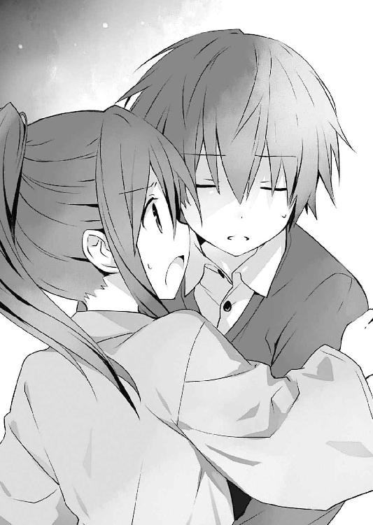
【──ミオ。それが......わたしのなまえ......？】
【ううん......うれしい。とっても......うれしい】
【大好きだよ。ずっと、一緒にいようね──】
「こ、れは──」
混濁する意識の中、ぼんやりと、髪の長い少女の姿が見えた気がしたが──
次の瞬間、士道は意識を失ってしまっていた。
◇
「──あのときは驚いたわよ。いきなり倒れるんだから」
神社の境内で。晴れ着を着た琴里が腕組みしながら言ってくる。士道はぽりぽりと頰をかいた。
「悪い......心配かけたな」
「別に。慣れてるわ」
琴里は素っ気なくそう言ったが、あのあと真那から、琴里が一番狼狽え、士道の心配をしていたと聞かされていた。
「......何よ」
「いや、何でもない」
顔に出ていただろうか。士道は自分の頰を撫でるように手を触れさせながら、誤魔化すように続けた。
「でも、せっかくの初詣なんだから、真那も来ればよかったのにな」
「ま......ね。人混みがあんまり好きじゃないって言ってたけど、体調も安定してたし、引っ張ってくればよかったかしら」
首に縄を掛けるようなジェスチャーをしながら琴里が言う。その物騒な、しかしコミカルな仕草に、士道は思わず苦笑してしまった。
琴里はそんな士道の反応に少し恥ずかしそうに頰を染めると、小さく息を吐いてから言葉を続けてきた。
「......それで、何か思い出したの？ その......ミオっての人こと」
「いや、それが......全然」
士道はため息を吐きながらそう返した。
そう。確かにあのとき、士道は『ミオ』という名前を聞いて目眩を起こしてしまったのだが、それ以来、幻聴を聞くことも幻覚を見ることも、一切なくなっていたのである。
「......そっか」
琴里はそう言うと、着物の袖からチュッパチャプスを取り出し、包装を解いて口に放り込んだ。
そしてその棒をピコピコと上下させながら、ゆっくりと顔を上げ、空を仰ぐ。
「......もし、さ」
「え？」
「もし、昔のことを......それこそ、ミオって人のことも全部思い出したら、士道は......どうするの？」
「琴里......」
士道は琴里の横顔を見ながら呟くように言うと、ふっと頰を緩めた。
「......安心しろ。俺は琴里のにーちゃんだからな。どこにも行ったりしないよ」
そう言ってわしわしと頭を撫でると、琴里はカァッと頰を赤くした。
「な......そ、そんなこと誰も言ってないんですけど!?」
「はは、そっか。そりゃ悪かった。──それより、ほら。絵馬、書こうぜ」
士道がペンを差し出すと、琴里はフンと鼻を鳴らしながらそれを受け取った。
◇
『この世に本当に忌むべき悪があるとするなら、それは戦争でも麻薬でもなく──エレベーターの故障である。
エレン・Ｍ・メイザース』
頭の中でそんな格言じみた台詞をリフレインしながら、エレンはＤＥＭインダストリー日本支社の階段を上っていた。
「はぁ......っ、はぁ......っ」
肺が引き絞られたかのように悲鳴を上げ、膝はガクガクと震えている。全身の毛穴から汗が噴き出し、色素の薄い金髪は頰にうなじに張り付いていた。
「なぜ......このようなタイミングで......故障、などと......」
「......大丈夫、エレン？」
先を歩いていた少女が、振り向いてそう言ってくる。エレンよりも少し色の濃い金髪に、碧眼。エレンと揃いのスーツを着て、しかしエレンとは対照的に汗一つかいていなかった。──アルテミシア・Ｂ・アシュクロフト。つい先日ＤＥＭインダストリー所属となった、エレンの部下である。
「......大丈夫です」
「でも、凄い汗だよ。手を貸そうか？」
「必要ありません」
「でも、まだ四階なのに」
「先ほどまでプールで泳いでいたからです！」
エレンはたまらず叫びを上げた。
そう。エレンは呼び出しがかかる直前、社屋改修時に新設された社内フィットネス施設で運動をしていたのである。
エレンは大きく息を吐きながら思い返した。広いプール施設に颯爽と現れるエレン。競泳水着に包まれた美しい肢体。そしてその手に握られた、聖母の盾の名を冠する愛機〈プリドゥエン〉。その姿に、そこにいた魔術師たちがハッと息を吞み道を開ける。
（あ、あれは......メイザース執行部長!?）
（手に持っているのは......ビート板？ え、執行部長、もしかして泳げな......）
（馬鹿！ 滅多なことを言うな、殺されるぞ！）
運動をしていた魔術師たちが何やら噂話を始める。距離があるためよく聞こえなかったが、恐らくエレンの勇壮な姿に戦いているのだろう。エレンはフッと笑いながら髪をかき上げた。別に凡夫にどれだけ畏敬を抱かれようと知ったことではないが、自然と抱いてしまうのは仕方のないことである。
（さて......泳ぎますか）
エレンは軽く準備運動をすると、肩で息をしながらプールへ向かった。
無論飛び込みなどというマナー違反はしない。ゆっくりと足先から水へつけていき、とぷん、と入水する。そしてエレンは〈プリドゥエン〉に摑まりながら、足をバタバタと動かし始めた。
と、どれくらい進んだ頃だろうか、ちらと数レーン先に目をやると、同僚のアルテミシアが泳いでいることがわかった。
（......ふむ）
魔術師の能力は顕現装置の扱いによって決まるとはいえ、基礎体力があるに越したことはない。別に彼女がここにいるのもなんら不思議はなかった。エレンは視線を前に戻すと、顔を水につけないようにしながらバタ足を続けていった。
（はぁ......っ、はぁ......っ）
そして、プールの半分ほどの位置に差し掛かり、体力的に限界が近づいてきたところで、エレンはふと、数レーン先のアルテミシアに視線をやった。するとアルテミシアが、エレンよりも後方を泳いでいることがわかる。エレンはフッと頰を緩めた。如何にアルテミシアとはいえ、やはりエレンには及ばないようである。
（うわ、はっや......向こうのレーン、何周目だ？）
（確かもう八周目くらいじゃない？）
（執行部長は？）
（命が惜しかったらその質問はしないことだ）
プールサイドにいた魔術師たちが、エレンやアルテミシアの方を見ながら何やらひそひそと噂話をしている。話の内容はよく聞こえなかったが、やはり執行部長殿は戦闘以外でも最強だ......とでも話しているのだろう。別に凡人たちにどれだけ褒めそやされようとどうでもよいことであったが、まあ彼らが噂したくなるのもわからないではない。あえてそれを止めるような野暮をするつもりもなかった。
そして、それからバタ足を続けることしばらく。エレンがゴールに辿り着いたと同時、スピーカーからアナウンスが流れたのである。
（──第二執行部部長、及び副部長は、至急三〇階執務室へお越しください）
（......？ 何か......あったの......でしょう......か）
エレンが呼吸を整えながら顔を上げると、数レーン向こうからぱしゃんという水音が聞こえてきた。
どうやら、エレンに遅れること数十秒、アルテミシアがようやくゴールしたらしい。アルテミシアは呼吸を乱した様子もなく水から上がると、エレンの前までやってきて、手を差し出してきた。
（エレン。呼び出しだよ。行こう）
（わかっています）
エレンはアルテミシアの手を無視してプールサイドへと上がろうとしたが、先ほどの激しい運動で手足が言うことを聞かなかったため......もとい、部下の厚意を無視するのもよくないと判断したため、その手を取った。
......そして、現在に至る。
エレンは憤然と息を吐きながらアルテミシアに続けた。
「平時であればこの程度の階段、なんてことはありません。今日は偶然、自分を限界まで追い込むトレーニングをしていたからであって」
「私もプールで泳いでたんだけど......」
「あなたのようにスローペースで泳いでいたのとはわけが違います！」
エレンがぷいと顔を背けると、アルテミシアが小さく首を傾げたあと「あ、そっか」と何かに気づいたようにうなずいてから、静かに続けてきた。
「でもどちらにしろ、このままだと、ウェストコットＭＤを待たせちゃうよ」
「ぐ......、それは......そうですが」
アルテミシアの言葉に、エレンは思わず口ごもった。そう。社屋の三〇階にある執務室は、ＤＥＭの長であるウェストコットの部屋なのである。
「よし」
エレンがむうと唸っていると、アルテミシアが何かを決めたようにうなずいたのち、エレンの後方に歩いていき、その身体をひょいと持ち上げた。肩と足を抱えた──いわゆる、お姫様抱っこのような格好で。
「な、何をするのですか、離しなさい！」
「三〇階に着いたらね」
アルテミシアはそう言うと、人一人を抱えているとは思えないくらいのスピードで、素早く階段を駆け上がっていった。
「うひあっ!? お、下ろしなさいっ！」
「もうちょっとだから待っててってば」
「ぐ......で、ではせめて抱き方を変えなさい！ こ、この格好は......嫌なことを思い出しそうです......！」
エレンは、頭の中にちらつく影を振り払うように手足をジタバタと動かした。アルテミシアが駄々っ子を相手にするように「もう」と息を吐いた。
「暴れないの。もう着くか......らっ、と」
トン、トン、とリズミカルにステップを踏むようにして、アルテミシアは立ち止まった。
どうやら、目的地である執務室の前に着いたらしい。エレンを床に下ろし、スーツの裾を直すように腰の辺りをはたいてくる。
「やめなさい、あなたは私の母親ですか！」
「いいから。──ほら、ノックしなくていいの？」
「言われなくてもわかっています！」
エレンは憤然とした調子で言うと、そのまま荒っぽく扉をノックした。
『──入りたまえ』
「失礼します」
「お待たせしました」
部屋の主の返事を聞いてから、扉を開け、部屋に入る。
執務室をぐるりと一望すると、奥の椅子に一人の男が腰掛けていることがわかった。
くすんだアッシュブロンドに、鋭い双眸。そして──彼の手元に浮遊した漆黒の本。
彼こそはこのＤＥＭインダストリーを統べる者。アイザック・Ｒ・Ｐ・ウェストコットその人であった。
「やあ、待っていたよ、エレン、アルテミシア。......随分と汗をかいているようだが、どうかしたかな？」
「......いえ。それより、何かご用でしょうか」
エレンが回答を濁しながら聞き返すと、ウェストコットは小さくうなずきながら、手元に浮遊していた本を示してきた。──魔王〈神蝕篇帙〉。先の一二月三一日に彼が手に入れた、『形を持った絶望』である。
「──数日前から、〈神蝕篇帙〉の情報検索が妨害されている、というのは話したね」
「ええ......何でも、〈シスター〉側からの干渉があったとか」
「ああ。それによって『全知』の能力に重い枷がつけられてしまった。ひどい誤算だよ。──ちょうどそのとき調べていた情報の解読にさえ、これだけの時間を要してしまったのだから」
ウェストコットの言葉に、エレンは目を見開いた。
「と、いうことは」
「ああ」
ウェストコットは大仰に首肯したのち、ニッと唇を歪めた。
「ようやく判明したよ。──新たな精霊の居場所がね」
「......！」
エレンはすうっと息を吸うと、グッと拳を握りしめた。
「まさか、既に現界しているというのですか？ 一体どこに──」
「──ふふ」
ウェストコットは小さく笑うと、指を一本立て──
そのままそれを、天に掲げてみせた。
第二章 宙の精霊
一月九日、月曜日。
昨日まで閑散としていた都立来禅高校には今、何人もの生徒たちが登校してきていた。白い息を吐きながら校門をくぐり、各々の教室へと向かい、級友と挨拶を交わし合う。会話の内容は様々ではあったけれど、それらの多くには「あけましておめでとう」と「久しぶり」という言葉が添えられていた。
年を跨ぐ休みが明けた、始業式。
今日から、来禅高校は三学期を迎えるのである。
「んー......」
十香とともに登校した士道は、制服を身体に馴染ませるように軽く肩を回した。着ていなかった期間はたかだが二週間程度であるというのに、随分と久しぶりに袖を通したような気がする。
とはいえそれも仕方あるまい。もともとイベントの多い年末年始であるのに加えて、今回の冬休みは、あまりにいろいろなことが起こりすぎていたのである。
と、士道がそんなことを考えながら伸びをしていると、右方から少年の声が聞こえてきた。
「お、久しぶりだな五河」
見やると、そこに髪をワックスで逆立てた少年が立っていることがわかる。クラスメートの殿町宏人である。なんというか、彼と会うのも随分と久々な気がした。妙な感慨を覚えながら、小さく手を上げる。
「ああ、殿町。あけましておめでとう」
「おう、あけおめ。......で、おまえは一体何をやらかしたんだ？」
「え？」
唐突な質問に、士道は眉根を寄せた。すると殿町が親指を立て、クイクイ、と後方を示す。
殿町の陰からそちらを覗き込むように目をやると、三人の少女たちが、何やら士道の方をちらちら見ながらひそひそ話をしているのが見て取れた。
制服を着崩した長身の少女に、無個性なのが個性と言わんばかりの中背の少女、眼鏡を掛けた小柄な少女という取り合わせである。右から順に亜衣、麻衣、美衣。二年四組が誇るかしまし三人娘だ。
そんな三人が露骨なまでに士道の噂をする様子を見せているのだ。確かに気にもかかろうというものだった。
「あー......」
士道は頰に汗を垂らしながら言葉を濁した。なんというか......思い当たる節がないではなかったのである。
聞くところによると、先月霊力を暴走させてしまった際、酩酊したような状態に陥った士道は、あの三人をやたらと情熱的に口説いてしまったらしいのである。
無論、士道はそのときのことを一切覚えていないのだが......あちら側からすればそんなことは関係ないだろう。
「......いや、わからん」
とはいえ、自分から悪い噂を拡散する必要もない。士道は適当に誤魔化すようにそう言った。
「ふーん......まあいいか。それよりよ、さっき職員室の前でタマちゃん見たんだが──」
と、殿町が言いかけたところで、その言葉を遮るように、教室にチャイムが鳴り響いた。
「......っと、もうそんな時間か」
言って殿町が、自分の席に戻っていこうとする。
「おいおい、タマちゃん先生がどうしたって？」
「ん、すぐ来るだろうし、直接見てみな」
「............」
ヒラヒラと手を振って去っていく殿町の背を見送りながら、士道は微かに眉根を寄せた。
......嫌な予感が肺腑を満たす。これも士道自身は覚えていないのだが、先の霊力暴走の際、どうやらタマちゃん先生に熱烈な求婚をしてしまっていたらしいのである。
とはいえ一応その件に関しては、〈ラタトスク〉解析官兼クラスの副担任である村雨令音が対応してくれたはずだが......
と、士道が不安を巡らせていると、教室の扉が開き、士道たちの担任、岡峰珠恵教諭──通称タマちゃんが現れた。
──その小さな体軀に、どんよりとした負のオーラを纏わせながら。
「うお......っ」
その様に、思わず声を漏らしてしまう。が、どうやら士道以外のクラスメートたちも似たような感想を持ったらしい。見慣れぬ担任の姿に、皆がざわめき出す。
「むう......シドー、タマちゃん先生はどうしたのだ？ 何となく暗いように見えるのだが......」
「あ、ああ......どうしたんだろうな」
隣の席に座っていた十香が、心配そうに小さな声を発してくる。士道は額に汗を滲ませながら返した。
しかしタマちゃんは皆の声など聞こえていない様子で、ゆらりと歩みを進めると、手にしていた出席簿を無造作に教卓に放った。
「......皆さん、あけましておめでとぉございます。冬休みはどうでしたか？ クリスマスに大晦日にお正月......きっと楽しいことがあったんでしょうねぇ......」
そして、定型通りの挨拶をする。別におかしなことは何も言っていないのだが、クラスメートたちは一斉にごくりと息を吞んだ。
タマちゃんが、唇の端を歪めながら虚ろな表情で続ける。
「......皆さんは今年何歳になりますか？ 二年生から三年生に上がるわけですから、一八歳ですね。早生まれの人は一七歳かもしれませんね。先生は誕生日三月なんですけどね。何歳になると思います？」
来禅の名物教師タマちゃんといえば、崖っぷち乙女二九歳。そのことはクラス全員が知っている。だが──それを口に出す者はいなかった。
するとタマちゃんが教室をぐるりと見回したのち、疲れ果てたような笑顔を作りながら口を開いた。
「私......今年ついにアラサーを卒業してサーになるんですよ。うふ......ふふふ......凄いでしょう？」
「た、タマちゃん......」
さすがに痛ましくて放っておけなくなったのだろう、亜衣が小さく声を上げる。するとタマちゃんがそちらに顔を向けた。蛍光灯の光が反射し、彼女が掛けていた眼鏡のレンズがキラリと光る。
「シャットアップ。これから私に話しかけるときは、言葉の前と後ろにサーをつけてください」
「さ......サー・イエス・サー」
亜衣が気圧されたように敬礼しながら従う。
「サー・タマちゃん、何かあったの......？ サー」
そして改めて亜衣が問うと、タマちゃんは底冷えのするような笑みを作った。
「別に、何もありませんよ？ 大丈夫です。ただ、喜ばしいニュースはあります。小学校からの同級生で親友のエリちゃんが、来月結婚するそうです。うふふ、嬉しいなあ。エリちゃんはとってもいい子ですから、きっといいお嫁さんになりますよ。誕生日やクリスマスは毎年一緒に遊んでくれてましたし、バレンタインなんかは互いにチョコを交換し合ったりしてました。お酒が入ると泣き上戸になって、『うがー、もし結婚できないまま三〇になったら、私をもらってくれタマー！』と叫びながら抱きついてきたりしましたっけ。お相手は二つ年下のお医者さんだそうです。一昨年の暮れに男なんてナンボのもんじゃい女子会をしたとき、エリちゃんが飲み過ぎて転んで足を怪我しちゃったことがあるんですけどね、そのとき治療してくれた人がエリちゃんに一目惚れして猛アタックをかけてきたらしいんですよ。私もその場にいたんですけどね、私も飲んでいたもので、待合室でちょっとだけウトウトしちゃってたんですよ。まさかその間に隣の部屋で長年連れ添った親友がフォーリンラヴしてるとか思わないじゃないですか。ホント人生って何が起こるかわからないですよね。いや本当によかったです。エリちゃんみたいないい子を放っておくなんて、世の男たちはなんて見る目がないんだろうって常々思ってましたから。エリちゃんは本当にいい子なんです。顔立ちも綺麗で、背もすらっと高くて、まるでモデルさんみたいなんです。エリちゃんみたいな子ですらまだ結婚できてないんだからまだまだ大丈夫、なんて思ってたんです。でもそのエリちゃんは裏でちゃんと相手を捕まえてたんですね。そういえば去年は随分女子会の頻度が減ったなあとは思ってたんです。でもエリちゃんも人が悪いです。まさかいきなり結婚報告だなんて。なんだか言うのが恥ずかしかった......って、まあそういうところも男心をくすぐるんですかね。私も学ばないといけませんね」
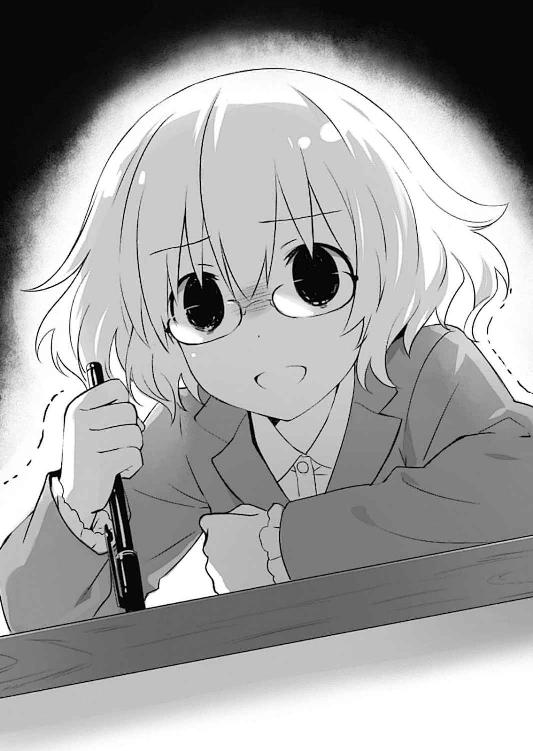
タマちゃんは抑揚のない声で捲し立てるように言うと、そのまま倒れ込むように教卓に上体を預けた。
「ふ......ふふふ、また、また一人同級生が結婚しちまった......くそっ、くそっ、結婚しちまうのは良い奴ばかりだ」
そして、まるで何かが乗り移ったかのような調子で、ブツブツと呟き始める。
「みんな、みんな俺を置いていっちまった......、教えてくれ......俺は一体、あと何回おまえらの結婚式に出ればいい......!?」
「さ、サー・あの・サー......」
「待っててくれよみんな。俺もすぐそっちに......、......は、はは、また売れ残っちまったな。どうやら俺は縁結びの神様に嫌われてるらしい」
言って、糸が切れたようにタマちゃんが笑う。クラスの面々は困惑した様子で顔を見合わせていた。
タマちゃんはしばらく笑ったのち、不意に静かになると、出席簿を開いた。
「......はい、では出席を取りまぁす」
『いやいやいやいや！』
何事もなかったかのように出席を取り始めようとするタマちゃんに、亜衣麻衣美衣がブンブンと首を横に振った。
「サー・全然大丈夫じゃないじゃん・サー！」
「サー・ちょっと休んだ方がいいよ・サー！」
「何言ってるんですか。大丈夫ですよぉ」
タマちゃんが朗らかな笑顔で言う。
「──ただ、もし今目の前に悪魔が現れて私の命と引き替えに一つだけ願いを叶えてくれると言ったら、来月あたり日本に巨大隕石でも落としてくださいって言うかもしれないくらいです」
「サー・だからそういうとこ！ サー！」
「サー・完全に休み明け前の小学生みたいな思考になってるじゃん・サー！」
「うふふ、だから冗談ですったらぁ。──ちちんぷいぷい、隕石よ落ちろー」
タマちゃんはチョークを一本手に取ると、それを魔法少女のステッキよろしくくるくると回すと、窓の外に向かってえいっと掲げた。
──すると、次の瞬間。
校庭の方から爆音が鳴り響いたかと思うと、教室を凄まじい衝撃波が襲った。校舎が揺れ、窓ガラスが割れ、カーテンが引きちぎれんばかりにはためく。教室にいた生徒たちが一斉に悲鳴を上げ、その場から飛び退いたり、机の下に潜り込んだりした。
「おわっ！」
「きゃぁぁっ！」
「な、なんだ......!?」
きぃんと鳴る耳を押さえながら、士道は顔を上げた。服に散ったガラスの破片をはたき落としながら、椅子から立ち上がる。
「──士道、あれを」
いち早く状況を確認していた折紙が、窓の外を指さす。士道はシャリシャリとガラス片を踏みながら窓際に近づき、恐る恐る外を覗き込んだ。
すると、巨大な平地であった校庭のトラックが、すり鉢のように抉り取られていることがわかる。否──校庭だけではない。その脇を通った道路、その向かいの空き地までもが、掘削されたように陥没していた。まるで、空間震が起きたかのような様相である。
しかし、空間震の発生を報せる警報は鳴っていなかった。士道は眉根を寄せながら辺りに目をやり──
「......ん？」
その中心に黒い塊のようなものを見つけ、小さく声を発した。
ここからでは、その詳細は見とれない。それは壊れた機械の一部のようにも、大きな岩のようにも見えた。が──先の衝撃波は、そしてこのクレーターは、『それ』の衝突によって引き起こされたということだけは容易に理解できた。
そして、衝突ということは、その塊はどこからかやってきたということだ。
士道たちに続いて校庭を覗き込み始めた生徒たちも同じ感想を持ったのだろう。殿町が、呆然と空を仰ぎながら口を動かす。
「......い、隕石......？」
その言葉を聞いた瞬間。
「............はうっ」
タマちゃんが、青い顔をしてその場に倒れ込んだ。
「う、うわぁぁぁぁぁっ！ タマちゃんが隕石を呼んだぁぁぁぁッ!?」
「知らず知らずのうちに悪魔と契約をッ!?」
「タマちゃぁぁぁん！ 死んじゃいやぁぁぁぁぁっ！」
生徒たちが悲鳴を上げながら、白目を剝いたタマちゃんに駆け寄る。
と、ちょうどそれに合わせるようにして、士道のポケットの携帯電話が震えた。──着信画面に記された名前は『五河琴里』。ホームルーム中に電話を取るのは褒められたことではないが、今は非常事態である。士道は一応教室の端に移動しながら通話ボタンを押した。
『──士道！ 無事!?』
電話を取るなり、慌てたような琴里の声が響いてくる。
「あ......ああ、聞いてくれ琴里。タマちゃんが悪魔と契約して隕石を......」
『はぁ？ 何言ってるのよ！ そんなことより、今すぐ十香たちを連れて臨時司令室にきてちょうだい！』
「え......？ ってことは──」
士道がハッと目を見開くと、琴里が続けてきた。
『ええ。──精霊よ』
◇
学校の近くに回された車に揺られることおよそ一〇分。士道と十香、折紙、副担任の令音、そして隣のクラスの八舞姉妹は、〈ラタトスク〉の地下施設へとやってきた。
本来〈ラタトスク〉は空中艦〈フラクシナス〉を司令部としていたが、彼の艦は先の戦いによって改修中であるため、一時的に士道たちの住まいにほど近いこの地下施設を拠点としていたのである。
──厳重なセキュリティを抜けたところで十香たちと別れ、司令室へと向かう。
別室待機を言い渡された十香たちは少々不満そうではあったが、精霊が現れたとなれば士道はそれを攻略せざるを得ない。その光景を見られるのは、あまり望ましいことではなかった。
司令室に入ると、すぐに緊迫した空気が伝わってきた。幾つものモニタが並んだ部屋には既に〈フラクシナス〉のクルーたちが勢揃いしており、皆各々のコンソールに向き合って慌ただしく作業をしている。
「──来たわね」
司令室の中央に設えられた艦長席（正確には艦ではないので語弊はあるが）に腰掛けた琴里が、こちらを向きながら言ってくる。髪を括るリボンは当然の如く黒。今はその身に軍服を纏い、真紅のジャケットを肩掛けにしていた。
「......すまない、待たせたね」
士道たちと一緒に学校からやってきた令音が、羽織っていた白衣を脱ぎ、空いていた席に腰掛ける。琴里は「いえ、助かるわ」と短く返すと、士道に視線を戻してきた。
「それで、状況だけど」
「ああ......一体何がどうなってるんだ？ あの隕石が精霊の仕業って......空間震警報は鳴ってなかったよな？ 静粛現界をしたってことか？ それに、いきなり高校を狙ってくるなんて......まさか、俺や十香たちが狙われたってことなのか？」
「んー......」
士道が問うと、琴里は難しげな顔であごをさすった。
「どうなのかしらね。正直、まだなんとも言えないわ」
「ど、どういうことだ......？」
「ん。画像、出せる？」
琴里が言うと、それに合わせてクルーがコンソールを操作した。
すると前面の大きなモニタに、世界地図が表示される。大陸や島、海に何ヶ所も赤いマーキングが記された、地図が。
「これは......？」
「ええ。高校の校庭に謎の物体が現れたでしょう？ これらのマーキングは、あれとほぼ同時刻に、同様の現象が起こった場所を示しているわ」
「な......!?」
士道は思わず眉をひそめ、世界地図を凝視した。
「この全部に、同時に......!?」
「ええ。にわかには信じがたいけれど、全世界で四二ヶ所もの場所に、『弾丸』が投擲されたの。──その中には、ＤＥＭの施設や、各国の対精霊部隊基地も幾つか含まれているわ。だからもしかしたら、微弱な霊波や魔力反応を察知して、それを狙ったという可能性も捨てきれない」
「ちょ、ちょっと待ってくれよ。南米にも落ちてるじゃないか！ 地球の真裏だぞ!? それを同時になんて......まさか八舞姉妹みたいに、複数の精霊なのか!?」
「......いいえ、違うわ。精霊は間違いなく一人よ。それに、そもそもあれは、正確に言えば隕石ですらないの」
琴里がゆっくりと首を横に振りながら返してくる。士道は表情を困惑の色に染めた。
琴里も、自分の説明が十分でないことはわかっているのだろう。口にくわえていたチュッパチャプスの棒をピンと立て、クルーに指示を飛ばす。
「百聞は一見に如かずよ。映像を出してちょうだい」
「はっ！」
クルーの一人、〈社長〉幹本が声を発し、コンソールを操作する。
すると世界地図が表示されていたモニタに、とある映像が映し出された。
「────」
その幻想的な光景に、一瞬息を吞む。
画面一面に広がる漆黒の闇。そこに光る無数の星々。
一瞬、士道はそれを夜空かと思った。だが、すぐにそれが勘違いであることに気づく。
画面の下方に描かれた緩やかな円。目映いまでの白と青が渦を巻いたそれは──間違いなく、士道たちの棲む母なる星、地球の姿であった。
「宇宙......」
そう。それはまさしく文字通り、天と地とが綺麗に分かれた光景であった。
そして、その直中に。
その少女は、悠然と浮遊していた。
まず目についたのは、暗い宇宙空間の中にあってなお、燐光のような輝きを放つ美しい髪だった。見るも鮮やかな黄金色の髪は、まるでおとぎ話の髪長姫を思わせるほどに長く、無重力の世界をたゆたうように広がっている。
身に纏うは星座のような文様が描かれた煌めく霊装。そしてその手には、巨大な錫杖のようなものが握られていた。
「この子......が？」
「ええ。──私たちも、初めて確認する精霊よ。正式な識別名は付けられていないけれど、便宜的に〈ゾディアック〉と呼んでいるわ」
「初めて？」
「そう。もちろん私たちが観測できていないだけっていう可能性は捨てきれないけど、少なくとも〈ラタトスク〉のデータベースに、彼女のような精霊は存在しないわ。だから、天使、霊装、能力、性格など、わからないことが非常に多いの」
「なるほど......じゃあ、どうやってこの子が地球を攻撃したのかもまだわかってないのか？」
士道が問うと、琴里は肩をすくめながら息を吐いた。
「実は、私たちが〈ゾディアック〉の位置を特定できたのには理由があるのよ」
「理由？」
「ええ。──映像、三時間前まで巻き戻して」
「はっ」
クルーが答えると同時、モニタに映し出されていた映像が別のものに変わる。
宇宙空間には変わりないのだが──〈ゾディアック〉が眠るように身体を丸めながら、浮遊しているだけだったのである。
「これは......」
士道は言いかけて、言葉を止めた。
画面の中に、新たな影が現れたからだ。
「な......空中艦......!?」
士道は目を見開き、驚愕を露わにした。
そう。地球から、巨大な空飛ぶ艦が三隻、現れたのである。しかも、それだけではない。それらの艦の周りには羽虫のような影が幾つも纏わり付いているように見えたのだが──目をこらすと、それら一つ一つが、歪な人型をした機械の人形であることがわかったのである。
間違いない。ＤＥＭインダストリーの無人兵器〈バンダースナッチ〉である。
「まさか、ＤＥＭが!?」
士道の言葉に、琴里は忌々しげな調子でうなずいた。
「ええ。〈ゾディアック〉の場所を発見したのはＤＥＭよ。私たちは、ＤＥＭの空中艦が不審な動きをしていたから、その周辺を自律カメラで探っていただけ」
「な、なんでＤＥＭは精霊の居場所が......」
そこまで言って、士道は「あ」と言葉を切った。琴里も士道と同じ考えに至ったのだろう。小さく首肯してから続けてくる。
「恐らく、〈神蝕篇帙〉でしょうね。二亜に検索を妨害してもらったとはいえ、完全にその力を無力化できたわけじゃあないから」
と、琴里が不愉快そうにフンと息を吐くと、画面の中に変化が現れた。
ＤＥＭの艦が、宇宙空間に漂う〈ゾディアック〉に狙いを定め、攻撃準備を開始したのである。
艦が随意領域を展開し、無数の砲門を開いて凄まじい量の魔力を充塡し始める。それに合わせるようにして、精霊を囲うように広がった〈バンダースナッチ〉たちが、思い思いのＣＲ-ユニットを構える。
「お、おい......ヤバいんじゃないのか、これ」
「いいから、見てて」
琴里が言うと同時、画面中央に浮遊していた〈ゾディアック〉が、ようやく周囲の状況を察したようにゆっくりと顔を上げる。
〈ゾディアック〉は別段驚いたような様子も見せず、淡々とした調子で身体を伸ばすと、右手を掲げてみせた。
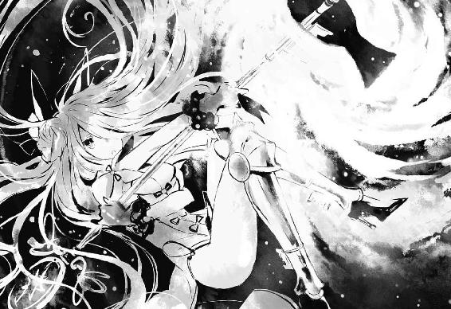
『──〈封解主〉』
映像の中の少女が、小さく呟く。
すると次の瞬間、虚空から光り輝く錫杖が現れた。
間違いない。先ほどの映像で〈ゾディアック〉が握っていたものである。豪奢な装飾が施された上部に、歪な歯がまばらに並んだ柄。
それはまるで、巨大な鍵を思わせた。
「天使......？」
「でしょうね」
琴里の相槌と同時、〈バンダースナッチ〉たちが一斉に行動を開始する。〈ゾディアック〉を囲うように展開していた数機が、レイザーブレイドを構えて〈ゾディアック〉に飛びかかったのである。
が、〈ゾディアック〉は驚いた様子も見せずに、前方から迫っていた〈バンダースナッチ〉に鍵の天使の先端を差し込むと、
『──【閉】』
と短く言いながら、それを右に回した。
そう──まるで、鍵穴に差し込んだ鍵を回すかのように。
すると次の瞬間、〈バンダースナッチ〉の手足からガクンと力が抜け、その周囲に張られていた随意領域が霧散する。
〈バンダースナッチ〉には傷一つ付いていない。だが、一瞬前まで明確な敵意を持って〈ゾディアック〉に襲いかかっていた機体は、電源が切られたようにぐったりと動かなくなってしまった。
「これは......」
「......〈封解主〉。映像と解析数値からの推測になるが、対象に鍵を差し込み、『閉じる』ことにより、そのものが持つ機能を封じてしまう力を持っているようだ」
士道の狼狽に、令音が静かな調子で答える。その間も〈ゾディアック〉は、襲いかかる〈バンダースナッチ〉を次々と機能停止させていった。
だが、ＤＥＭ側としてもそれで〈ゾディアック〉を仕留められるとは思っていなかったようだ。〈ゾディアック〉が〈バンダースナッチ〉に対応している間に、三隻のＤＥＭ艦は魔力充塡を完了させていた。
ＤＥＭ艦が一斉に攻撃を開始する。三方向から濃密な魔力光が放たれ、暗い宇宙空間が一瞬目映く光り輝いた。
「うわ......っ！」
だが、〈ゾディアック〉はそんな窮地にあっても微塵も怯えた様子を見せず、ただ静かに杖を構えると、その下端をぐっと前方に押し出した。
すると杖の下端が、空間に吞み込まれたかのように不意に見えなくなる。〈ゾディアック〉はそのまま、その杖を両手で左に回した。
『──【開】』
すると、次の瞬間。
〈ゾディアック〉の周囲にブラックホールのような穴が広がったかと思うと、〈ゾディアック〉に向けられていた砲撃が、全てそこに吸い込まれた。
「な......!?」
士道は驚愕に目を見開いた。
が、それで終わりではなかった。ＤＥＭ側の攻撃が全て無効化されたかと思った次の瞬間、ＤＥＭの艦や〈バンダースナッチ〉たちの後方に、〈ゾディアック〉の周囲に生じたような穴が開くと、そこから凄まじい砲撃が放たれたのである。
──漆黒の世界に、再び光の花が咲く。
自らが放った最大威力の魔力砲を受けて、三隻の艦と無数の人形たちは、脆くも爆散した。
「ＤＥＭの砲撃が......!?」
「......ああ。〈封解主〉、もう一つの力だ」
士道の狼狽に、令音が静かな調子で答えてくる。
「......空間に鍵を差し込み、『開く』ことによって、そこに『扉』を作り出す......といったもののようだ。そしてその『扉』の出口は、彼女の任意の場所に生じるらしい」
「『扉』を開く鍵の天使......って、まさか！」
士道はハッと顔を上げ、琴里の方を見た。琴里が「ご名答」というように、指をパチンと鳴らす。
「察しがいいじゃない。──このあと、〈ゾディアック〉は地球に向けて攻撃を行ったわ。さっきみたいに空間に『扉』を作って、手近にあったＤＥＭの艦の残骸を手当たり次第放り込んだの」
「『扉』の出口を......地球上に何ヶ所も作って、か」
「そういうこと。いい気持ちで眠っていたところをＤＥＭに起こされて、よっぽど頭に来たんでしょうね。普通なら大気圏で燃え尽きるような残骸も、直接空中に転送されたなら、質量そのままで地上にドーン、って寸法よ。......ま、逆にそのおかげで、衝突の威力自体は随分抑えられたみたいだけど」
「そ、そうなのか？ かなりの衝撃波だった気がするんだが......」
窓ガラスの割れた校舎を思い出し、眉根を寄せる。すると琴里がやれやれと肩をすくめた。
「あんな大きさの隕石が本当に衝突したら、その程度じゃ済まないわよ。半径数十キロは更地になっててもおかしくないわ。そして実際──自由に『扉』を開けることのできる彼女には、それが可能ってこと。......いえ、さっきの攻撃くらいの威力であっても、当てる場所によっては深刻な被害をもたらすことができるでしょうね」
「............」
士道は頰に汗を垂らした。──なるほど、恐ろしい能力である。使いようによっては地球そのものが破壊されてしまうやもしれなかった。
が、恐れてばかりもいられない。士道は心拍を落ち着けるように深呼吸をすると、改めて琴里の目を見つめた。
「......で、俺は一体どうすればいいんだ？」
精霊が現れたのだから、デレさせて──その力を封印する。それは士道も重々承知していた。
だが、相手がいるのは宇宙空間なのである。今までのようにおいそれと会いに行けるような場所ではない。それどころか、コンタクトを取ることすら難しいだろう。
「そうね......いくつか手はあるけど、あまり時間をかけてまた地上を攻撃されても困るわ。まずは一番手っ取り早い手段で、彼女と会話をしてみましょう」
「会話って......一体どうするんだ？ 電話やメールってわけにもいかないだろう」
士道が首を捻ると、琴里は呆れたように息を吐いた。
「何言ってるのよ。この映像、どうやって撮ってるのか忘れたの？」
「映像......って、あ──そうか！」
言われて、士道はポンと手を打った。当たり前のように精霊の様子がモニタリングされているため、あまり意識していなかったが──この映像は、〈ラタトスク〉の自律カメラによって撮影されているはずだ。
「──もちろん、地上で普通に使用しているものとは少し違うわ。機能的には、〈フラクシナス〉の〈世界樹の葉〉に近いかしら。小型の顕現装置を積んでいるから、周囲に随意領域を展開することも可能よ」
「なるほど、随意領域内であれば......」
「ええ。通常は会話が不可能な真空空間であっても、相手に直接声を届けることが可能なはずよ。それと──例のもの、持ってきて」
言って、琴里が指をパチンと鳴らす。
すると、琴里の側に控えていた副司令の神無月恭平が「はっ」と短く応えて、何やら大仰な機械を運んできた。そしてその上部に置かれていたものを手に取り、士道に差し出してくる。
「さ、士道くん。これをつけてそこに立ってみてください」
「え？ 何ですかこれ」
神無月に手渡されたものに視線を落とす。
それは、ゴーグル付きのヘッドセットのような装置だった。困惑しながらも、言われた通りにそれを装着する。
すると神無月は、カメラのレンズのようなものを士道に向けると、何やらコンソールを操作し始めた。
「──司令、準備オーケーです」
「よろしい。じゃあ実験してみましょ。──お願い」
「はっ！」
琴里の声に〈保護観察処分〉箕輪が応え、コンソールを操作する。
すると、士道の前に置かれた機械がキィィィン......という小さな駆動音を上げ始めた。
「なんだ......？」
士道が訝しげにそれを眺めていると、次の瞬間。
──士道の前に、士道が現れた。
「わっ!?」
予想外の事態に驚き、思わず尻餅をついてしまう。すると目の前に現れたもう一人の士道も、同じように後方に倒れ込んだ。
「いってて......って、これ、もしかして」
自分と寸分違わぬ動きをするもう一人の自分を見つめながら士道が言うと、琴里が「そう」とうなずいた。
「その機械で読み取った士道の姿を、立体映像として投影しているの。もちろん、顕現装置を搭載した自律カメラからも、映像の出力が可能よ」
「へえ......すごいなこりゃ。本物にしか見えない」
言いながら、士道は怪訝そうな顔でこちらを見てくるもう一人の自分に手を伸ばした。が、もちろん相手は立体映像である。士道の指は、もう一人の士道の指を突き抜けて、腕の方に抜けていった。
「今は機能を切ってあるけど、本番ではそのゴーグルに自律カメラからの映像が映し出されるわ」
「な、なるほど。精霊と対面しているような状態で話ができるってわけか」
「そういうこと。──じゃあ、さっそく始めましょ。目覚めた彼女がいつ攻撃を再開するかわからない以上、あまり時間はかけたくないわ」
「あ──ああ。わかった」
士道は心拍を整えるように胸に手を置いてから、力強くうなずいた。
正直言えば、もう少しこの装置に慣れておきたいところであったし、心の準備をしておきたくもあった。
だが、今は琴里の言うとおり時間がない。それに、いくら心の準備をしたからといって上手くいくわけではないのが精霊攻略である。士道は覚悟を決めるように拳を握ると、細く息を吐いた。
そして緊張で硬くなった頰に手をやり、ニッと笑顔の形にしてみせる。そう。精霊に臨む士道が振るわねばならないのは武器ではなく愛の言葉。そして胸に抱かねばならないのは、精霊に対する恐怖心ではなく──精霊を絶対に救ってみせるという確固たる信念だったのである。
「──いつでもいいぞ、琴里」
「いい笑顔よ」
琴里はニッと唇の端を上げると、艦長席に腰を落ち着け直し、くわえていたチュッパチャプスの棒を指で挟み込んで、ビッとモニタに向けてみせた。
「──それではこれより、作戦名『遠距離恋愛』を開始する！」
『了解！』
クルーたちが一斉にそれに応え、作業を開始する。
「自律カメラ一号機を対象に接近させます」
「随意領域展開。映像投影準備開始」
「並行して、対象の精神状態モニタリングも開始」
「──投影準備完了。士道くん、いきますよ！」
「はいっ！」
そう応えた次の瞬間。
視界が、司令室の中から一瞬にして、宇宙空間へと変貌した。
「......！」
自律カメラからの映像がゴーグルに映し出されると説明を受けてはいたが、思わず息を吞んでしまう。
果てしなく広がる漆黒。地上からとは比べものにならないくらいに目映い輝きを放つ星々。そして──眼下に広がる巨大な蒼い惑星。その雄大な光景に、一瞬目を奪われる。
だが、今はそんなものに見とれている場合ではない。士道は気を取り直すと、ゆっくりと顔を上げた。
──長い、長い金髪をたゆたわせた少女の後ろ姿。その様は、まさに精霊というに相応しい神秘性と威容を備えていた。
「──それじゃあ、始めましょうか。地球と宇宙の遠距離恋愛を」
琴里が、冗談めかした言葉を、しかし真剣な口調で言ってくる。士道はそれに応ずるようにこくりとうなずくと、少女の背に声を掛けた。
「やあ、こんにちは」
『............』
と。
士道の声に反応して少女が振り向いたかと思うと、次の瞬間錫杖を掲げ、士道の頭目がけて光線を放ってきた。
「うおッ!?」
咄嗟に身を反らすが──遅い。黄金色の輝きを放つ霊力で編まれた光線は、士道の頭部を軽く撃ち抜き、暗い宙へと抜けていった。
「いってぇ!?」
士道は思わずその場に倒れ込み、身を捩った。頭部を両手で押さえながら、ジタバタと足を動かす。
「こ、琴里！ 大変だ！ 首が！ 俺の首が！」
「落ち着きなさい。ちゃんとついてるでしょ」
「......！ あ......」
言われて、冷静さを取り戻す。あまりに鮮明な映像のため錯覚してしまったが、あくまで攻撃されたのは士道の姿を投影した立体映像なのである。確かに痛いことは痛いが、それは頭を貫かれた痛みではなく、転げた拍子に後頭部を打ってしまったときのものだった。
士道は頭をさすりながら、再びその場に立ち上がった。
「でもいきなりヘッドショットって......随分と荒っぽい精霊だな。立体映像じゃなかったら死んでたぞ......」
「ＤＥＭに攻撃されて気が立ってたんでしょ。そんな状況でいきなり声をかけたら、敵と判断されても仕方ないわ。まずはこっちに敵意がないことをアピールしていきましょ」
「そ、そうだな」
士道は気を取り直すように深呼吸をした。するとそれに合わせるように、少女に砕かれた立体映像の頭部が再生し、士道のゴーグルに再び少女の姿が映し出された。
「落ち着いてくれ。俺は君の敵じゃない。君を攻撃する意志はないんだ」
『......ふむん？』
少女は、急に蘇生した士道に、表情を変えぬまま首を傾げてきた。
すると次の瞬間、少女がくい、と指を動かしたかと思うと、辺りに漂っていた機械の破片が高速で飛来し、士道の胸を貫いた。
「ぐわふッ!?」
突然の攻撃に、思わず身体をビクンと震わせる。だが、先ほどのように倒れはしない。胸元を押さえながらもどうにか持ちこたえ、言葉を続ける。
「待ってくれ。俺は──」
士道がいいかけたところで、少女は今度は錫杖の上部で頭を思い切り叩き潰してきた。
「げふっ!? い、いや、だからちょっと......」
『............』
辺りを漂っていた機械の残骸が飛来し、士道の手足が貫かれる。
「は、話を......」
『............』
無数の光線が放たれ、士道の身体が蜂の巣になる。
「うがぁぁぁぁっ！」
士道は全身をボロボロにされ、悲鳴じみた声を上げた。
「滅茶苦茶好戦的じゃねえか!? 俺この数分で五回は死んでるぞ!?」
士道の言葉に、令音がふうむとあごに手を当てる。
「......ふむ、まさかこんなにも攻撃的とはね。立体映像での接触にしたのは正解だったようだ」
「！ 待ってください。精霊が！」
〈藁人形〉椎崎が叫ぶ。その声に弾かれるように顔を上げると、少女が、幾度目かの再生を遂げた士道を興味深げに覗き込んでいることがわかったのである。
どこかぼうっとした表情に一切変化はない。だが、その身体の動作は、今までにないものであった。
そして少女が初めて、その小さな唇を開く。
『──不思議じゃの。うぬはなにゆえ死なぬのじゃ？』
あまり抑揚のない、静かな声。とはいえ、彼女から得られた初めての攻撃以外の反応であることに変わりはない。士道は大仰にうなずいた。
「あ、ああ！ 初めて話してくれたな。君と話がしたくて、立体映像を飛ばしてもらってるんだ。だから......あ、痛い。痛い痛い痛い。やめて。話してる最中に杖でお腹抉るのやめて」
士道は脇腹を押さえながら苦悶の表情を浮かべた。少女が杖の先端を士道の腹に突き刺し、スープをかき混ぜるようにぐりぐりと動かしてきたのである。正確に言うと痛みはないのだが、やはりいい気分はしなかった。
『立体映像とな。ふむん......不可思議じゃ』
「お、おう......」
士道は脂汗を垂らしながら苦笑すると、言葉を続けた。
「そ、それより......よかったら君の名前を教えてもらえないか？」
士道が問うと、少女は士道のお腹をかき混ぜるのをやめ、顔を上げてきた。
『むくの名か。よかろ。──六喰。星宮六喰じゃ』
「星宮六喰......それが君の名前？」
『左様』
言いながら、少女──六喰がうなずく。
『それで、うぬは何というのじゃ。人に名を尋ねておのれは名乗らぬとは、無礼ではないかの』
「ああ、すまん。俺は──」
と、士道が答えようとすると、不意に目の前にウィンドウが表示された。
「わっ!? な、なんだ？」
『うん？ どうしたのじゃ』
「い、いや......これは......」
「落ち着いて。──選択肢よ」
前方から琴里の声が響いてくる。するとそれに合わせるようにして、ウィンドウに文章が表示されていった。
どうやら、司令室のモニタに表示されたものが、士道のゴーグルにも連動して映し出されているらしい。士道の視点から見ると、現実の空間にぽつんとウィンドウが浮遊しているように見えて、なんだか妙な気分だった。
①「俺は五河士道。俺と、友だちになろう」
②「俺は五河士道。俺の、恋人になってくれ」
③「俺は五河士道。おまえのご主人様になる男だ。俺の肉奴隷になれ。俺なしじゃ生きられない身体にしてやるよ」
「総員、選択！」
琴里の声とともに、辺りからボタンを押すような音が連続して聞こえてくる。
そして数秒後、選択の結果が円グラフとなって表示された。もっとも多いのは──③。
「なるほど、③ね」
「ええ。一見すると①か②が妥当ですが、ここは攻めましょう」
「そうですね。今のところ、良くも悪くも精神状態に何も乱れが見られません。彼女の反応のパターンが欲しいです」
「それもそうね。外しても死なない立体映像の利点を活かしましょう。──士道、③よ」
「ちょっと待てぇぇぇっ！」
慣れた調子で交わされた会話と、それから導き出された結論に、士道は思わず声を上げた。
「何よ士道。いきなり大声なんか出して」
「何よじゃねえっ！ その選択肢でなんで③なんだよ!? ①でいいだろ①でっ！」
「興奮しないでちょうだい。言ったでしょ。今士道はどんなに攻撃されても死ぬことはない。だから、あえて強めの言葉で相手の反応を見てみたいのよ。ほら、早く。六喰が待ってるわよ」
「うぐ......」
確かに、これ以上六喰を放置するわけにもいかない。士道は腑に落ちないものを感じながらも、躊躇いがちに口を動かした。
「俺は五河士道。......おまえの、ご主人様になる男だ！ お、俺の肉奴隷になれ。俺なしじゃ生きられない身体にしてやるよ......！」
『ふむん。五河、士道か』
士道の言葉を聞いた六喰は、そう言ってあごに手を当てた。
それ以外は、特に何も反応を起こさなかった。
『スルー!?』
士道と琴里、クルーたちの声が重なる。士道とてこの選択肢に好反応を示してくれるだなんて思ってはいなかったが、完全な無反応はさすがに予想外だった。
「精神状態と好感度の推移は!?」
「ど、どちらもまったく変わっていません！」
「平坦すぎて不安になるくらいです！」
「......どういうこと？ まさか聞こえてなかったとでもいうの？ でも士道の名前は認識してるみたいだし......」
琴里が訝しげに言ってくる。
するとそれに合わせるように、六喰が言葉を継いできた。
『質問を戻すが、うぬの目的はなんじゃ。何をしにここへやってきたのじゃ』
「え？ あ、ああ......」
士道が答えようとすると、六喰は手にしていた錫杖を地球に向けた。
『立体映像......ということは、うぬの本体は星のどこかにいるのであろ。むくは偽りを好かぬ。これよりむくに空言を吐く度、星に礫を落とす』
「な......!?」
士道は息を詰まらせた。礫......とは、恐らく校庭に落ちたあの隕石のことだろう。
『よいな？』
六喰が、返事を求めるように言ってくる。それを聞いてか、琴里が小さく息を吐いた。
「......本気ね。いいわ、士道。正直に話してあげましょう。こういう手合いは、煙に巻こうとすると痛い目を見るわ」
「ああ......わかった」
士道は六喰と琴里、二人に返事をするように、うなずいた。
「俺は──君みたいな精霊を助けるために活動をしてるんだ」
そして、士道は話し出した。自分の目的。〈ラタトスク〉と、それに敵対するＤＥＭという組織のこと。そして──自分に備わった能力のことを。
『......ふむん』
全てを聞き終えた六喰は、小さくそう呟くと、表情を変えぬまま士道のほうに顔を向けてきた。
長い髪の合間からちらと覗いた金色の目に見つめられ、思わず息を吞む。
『空言ではなさそうじゃの。ほうほう。しばらく見ぬうちに星は斯様なことになっていおったか』
「ああ......だから、六喰。地上に降りてきて、おまえの霊力を、俺に封印させてくれないか？」
士道は、微かな緊張を覚えながら、六喰に問うた。
だが──
『断る』
六喰は、少しの逡巡を見せることもなく、そう返してきた。
とはいえ、予想していなかったことではない。今までもこういうことはあった。微かに眉根を寄せながらも、言葉を続ける。
「ぐ......た、確かに、急に現れてこんなことを言う俺をすぐに信じろって方が無理なのかもしれない。でも、本当なんだ。俺はおまえを──」
『別に、疑ってなどおらぬ』
「え......？」
意外な返答に、士道は思わず目を見開いた。
『うぬの言うことは、きっと本当なのだろうよ。うぬの言葉には、純粋な善意が窺える』
「じ、じゃあ、なんで」
士道が問うと、六喰は変わらぬ調子で返してきた。
『うぬの考えは理解した。だが、むくにはその施しを受ける必要がない、と言っておるのじゃ。むくはここで漂っていられればそれでよい』
「で、でも、それじゃあまたＤＥＭが攻撃してくるかもしれないんだぞ!?」
『でー、いー、えむ』
六喰は拙い発音で士道の言葉を復唱すると、『ああ』とうなずいた。
『先ほど屠った鉄屑か。あのようなもの、いくら来ようとむくの敵ではない』
「違うんだ、ＤＥＭには、さっき現れたような奴らとは比べものにならない力を持った魔術師だっている。このままじゃ六喰が危ないんだ！」
しかし。士道が必死に訴えかけるも、六喰は表情一つ変えなかった。
『同じことよ。むくの天使に勝てるものなど存在せぬ。──もし仮にいたとして、〈封解主〉で「孔」を開けて逃げれば済む話じゃ。別に彼の星に未練があるわけでもなし。〈封解主〉の気の向くまま、銀河を泳ぐのも楽しいじゃろうて。それとも、うぬの言う、でー、いー、えむには、光年の先までむくを追ってくる怪物がいると申すか？』
「それは......」
言われて、士道は言葉を詰まらせた。本当に六喰にそんなことが可能ならば、それを捕らえることは困難なのではないかと思ってしまったのである。
しかし、だからといって引き下がるわけにはいかない。ＤＥＭにはエレンやアルテミシア、それに〈神蝕篇帙〉を得たウェストコットがいるのである。何をしてくるかわからなかった。
それに──士道が六喰を地上に呼びたい理由はそれだけではない。小さく首を振ってから、続ける。
「でも、地上には楽しいことがたくさんあるんだ。おまえと同じ精霊たちだってたくさんいる。こんなところに一人でいたら、寂しいだろう......？」
『寂しい。......ふむん』
士道が言うと、六喰は小さく首を傾げた。
『心配痛み入るが、問題はない。むくは寂しさというものを感じぬのじゃ』
「そんな、強がらなくても、みんなと一緒にいた方が──」
『違う。そういった意味ではない。もっと正確に言うのなら、孤独のみではなく、痛痒も、悲哀も、憤激も、あるいは興奮も、歓喜も、享楽も──愛も、感じぬのじゃ。心に、「鍵」を掛けておるでな』
「え......？」
六喰の言葉に、士道は眉をひそめた。
「か、鍵？」
『左様。むくの〈封解主〉でな』
言いながら、手にした鍵のような錫杖を示してみせる。
〈封解主〉。その力の一つは──ものに『鍵』を掛け、そのものの力を封じること。
確かに士道はそれを一度目にしていた。六喰に『鍵』を掛けられた〈バンダースナッチ〉は、その機能を奪われ、動かぬ鉄屑と成り果てた。
もしもその天使の力が、目に見えぬものにさえ及ぶとしたならば。
──六喰の言うように、感情を生み出すという心の機能に『鍵』を掛けてしまうということも、可能なのかもしれなかった。
「な、なんで......そんなことを。寂しさや悲しさだけじゃなく、楽しさまでなんて！」
『さて......なぜだったかのう。必要がなかった......いや、違うな。それを持つことこそが不幸であると、かつてのむくが思ったからではないかの。今のむくには、もうよくわからぬがな』
「でも、六喰はこうやって俺と話して......」
『言葉を交わす機能くらいは残しておるよ。物言わぬ屍と成り果てることを望んだわけではない。あくまでも、むくは己が身に何も起こらぬことを望んだだけなのじゃ。だからこそ、誰の手も届かぬ宙にいた。そして、怒り狂い、恋い焦がれ......などといった、今のこの状況を崩してしまう感情を、封じただけなのじゃ。──星に礫を降らせたことも、別に憎しみからのことではない。ただ、この領域を侵す者に、警告をしただけじゃ』
表情を変えぬまま、六喰が言う。
まるで世捨て人──否、仙人か何かのようなその無味な貌に、士道はぐっと拳を握りしめた。
「そんな......そんなの、悲しすぎるじゃないか。頼む、地球に降りてきてくれ。俺は、おまえに、幸せになって欲しいんだ......！」
『............』
士道が叫ぶと、六喰はしばしの間無言で士道の顔を見てきた。
そしてそれから、ゆっくりと唇を開く。
『──のう、士道。うぬは何か、勘違いをしておるのではないかの』
「勘......違い？」
『左様。──むくの幸福を、うぬが勝手に決めるでない』
「............っ！」
士道は思わず息を詰まらせた。
しかし六喰はそのまま、声を荒らげるでもなく、激情を煽るでもなく、ただただ静かに続けてくる。
『確かにうぬに救われた精霊もいるのじゃろうよ。むくはそれを否定しようとは思わぬ。じゃが、むくはむくじゃ。なぜ今の状況に満足しているむくに、余計な手を差し伸べようとするのじゃ？』
「え......？」
予想外の言葉に、士道は目を見開いた。
六喰は構わず、それに、と言葉を継いでくる。
『大人しく聞いておれば、救うだの幸せだのと......お節介も甚だしいわ。それはうぬのエゴを押しつけているだけではないか？ うぬの達成感のために、むくを利用するでない』
「そ、そんな、ことは......」
震える声で、否定しようとする。
だが......すぐには言葉が継げなかった。
すると六喰が、何かに気づいたように士道の顔を覗き込んでくる。
『いや......そもそも本当にそれはうぬの意志なのか？ なぜそうまでして、精霊の力を束ねようとするのじゃ。何かはわからぬが......どうもくさいのう。一体うぬは......いや、うぬの後ろにいる者は、何を考えておるのじゃ』
「それは......どういう──」
後ろにいる者。その言葉に、士道は眉根を寄せた。
それは、士道をバックアップしてくれている〈ラタトスク〉ということなのだろうか。それとも──
士道がそんな考えを巡らせていると、六喰が『それに』と続けてきた。
『でー、いー、えむ、とやらも星におるのじゃろう。仮にむくの力を封印したとして、むくは本当に、ここにいるよりも安全に暮らせるのか？ 今までうぬが救ったという精霊たちは、敵に一度も襲われなかったのか？』
「......！ そ、れは......」
六喰の言葉に、士道は声を掠れさせた。
今までのＤＥＭとの戦いが、脳裏を過ぎる。
......嗚呼、そうだ。士道は確かに、精霊たちの能力を封印してきた。
それが精霊たちのためになると信じていたし、実際、精霊たちもそれを喜んでくれた。
だが──それによって彼女たちにもたらされた危機も、少なからず存在していたのである。
士道のそんな葛藤を見透かしたように、六喰が静かに言葉を発する。
『簡単に言ってやろう、士道。──うぬの偽善に巻き込まれるのは迷惑じゃ。二度とむくの前に現れるでない』
「............ッ！」
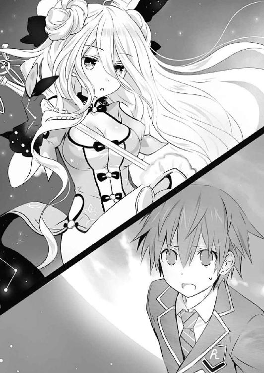
──頭を、鉄槌で殴られたかのような衝撃。
否......本当に殴られただけならばどんなによかっただろうか。
六喰の言葉は、震動のように素早く、毒のように全身を冒していった。
「......士道、顔を上げなさい。あなたのしてきたことは決して間違いなんかじゃないわ」
耳に琴里の──初めて士道が力を封印した精霊の声が聞こえてくる。
だが、士道はそれに返すことができなかった。
頭では、琴里の言うことが理解できている。しかし──
『──話は終いじゃ』
士道の思考を遮るようにして、六喰が言葉を発してくる。
『むくが望むのは平穏のみじゃ。今のこの現状が続くことのみじゃ。もし性懲りなく誰かがむくの前に現れたならば──そうさな』
そう言うと六喰は、手にした錫杖を地球に向けてみせた。
そして、抑揚のない声で、続ける。
『この星の巡りを、〈封解主〉で止めてくれよう』
──その、あまりに致命的な言葉を。
「な......!?」
「まさか、そんなことが......！」
琴里やクルーたちの狼狽が、鼓膜を震わせる。
『でー、いー、えむとやらにもそう伝えよ。──では然らばじゃ、士道。もう会うこともないじゃろう』
六喰が錫杖を掲げ、その先端を、士道の映像を投影していた自律カメラに突き刺す。
『──【閉】』
そしてそう言って六喰が鍵を回した瞬間。
ザザッというノイズが走り──士道の視界は、完全に閉ざされた。
第三章 新たなる翼
「！ 映像、どうしたの!?」
琴里の声が艦橋に響き渡る。しかし先ほどまでメインモニタと士道のゴーグルに映し出されていた六喰の姿は、完全にノイズの海に吞まれてしまっていた。
「駄目です、自律カメラからの反応がありません！」
「く......〈封解主〉で『閉じられた』ってこと？」
映像と音声が途絶える寸前で聞こえた六喰の言葉を思い出すように言って、琴里が小さく舌打ちをした。
「............」
士道はそんな琴里たちの声を聞きながら、頭に着けていたヘッドセットを外した。
「俺、は......」
拳を握りしめ、喉から絞り出すように声をこぼす。
──六喰の言葉に返すことが、できなかった。
精霊を救う。無論それははじめ、〈ラタトスク〉から要請されたことではあった。
しかし、精霊たちと触れ合う中で、士道自身も、彼女たちのことを助けたいと願うようになっていったのである。
だが......もしかしたら。
士道が干渉することによって失われてしまった彼女たちの未来もまた、あったのではないか。──そんな考えが、ふっと頭を過ぎってしまったのである。
するとその頭に、ストン、と手刀が落とされた。
「あたっ!?」
思わず素っ頓狂な声を発し、頭を押さえながら後方を向く。
するとそこに、やれやれといった顔をした琴里が立っていた。
「な、何すんだよ、琴里」
「ちょっと言い負かされたくらいで、何いっちょ前に思い悩んでるのよ」
琴里はフンと鼻を鳴らすと、席に腰掛け直した。......どうやら、士道の頭をチョップするためだけに歩いてきたらしい。
「もちろん、彼女の言うこともわからないではないわ。でも、だからと言ってはいそうですかと従うわけにはいかないわ。──確かに精霊は救うべきもの。でも忘れないで。精霊は、巨大な一個の『災害』でもあるの。地球の真上にあんな危険な力を持った存在を放置しておけるわけないじゃない」
確かに、その通りである。しかし士道は眉根を寄せた。
「でも、俺たちが干渉しなければ何もしてこないって......逆に、もしまたちょっかいをかけたら攻撃するって言ってたじゃないか」
士道が言うと、琴里は口にくわえたチュッパチャプスの棒をピンと立てながら返してきた。
「もし仮にそれが本当だったとして、よ。六喰は言ってたわよね。『ＤＥＭにも伝えろ』って。......彼女にとって人間は十把一絡げなのよ。もし私たちが彼女に手を出さなかったとしても、ＤＥＭはどうかしら？」
「うぐ......」
士道は渋面を作った。──仮に士道たちが、あの精霊は危険だから接触するのは止めろと言ったところで、聞く耳を持つような連中ではないだろう。それどころか、〈ラタトスク〉が介入しないのを幸いと攻撃を仕掛けるに違いなかった。
士道の思考を察したように、琴里がチュッパチャプスの棒を向けてくる。
「──ＤＥＭが六喰の存在を知っている限り、必ずまた刺客を送り込むわ。そしてそれが成功すれば六喰は討たれて、その霊結晶はウェストコットのものになり──もし失敗すれば、六喰の報復によって地球の機能が『閉じ』られる。......それが具体的にどんな事態を引き起こすのかはわからないけれど、今の人類が体験したことのない規模の災害になることは間違いないでしょうね」
「......っ、それは......」
「結局、私たちができることは一つ。──ＤＥＭが六喰を再度攻撃する前に、六喰を封印する。それだけよ」
「............」
琴里にジッと目を見つめられながら言われ、士道は頭をくしゃくしゃとかいた。
そして細く息を吐きだしたのち、唇を動かす。
「......ああ、そうだな。その通りだ。悪い。少し、参ってた」
「いいわよ。士道の気持ちも、わからなくはないから」
言いながら、琴里が、ふっと士道から視線を切る。
なぜだろうか。言葉にされたわけではないのだけれど、士道は何となく察してしまった。──琴里もまた、士道と似たような葛藤を抱えているのだと。
琴里が語った理由は、全てもっともなことである。確かにＤＥＭがいる以上、六喰を放置しておくわけにはいかない。
しかしその理由は──六喰の発した言葉に返せるものではなかったのである。
もしも、ＤＥＭインダストリーという会社が存在しなかったなら。
もしも、六喰の身に危険が迫る可能性が低いとしたなら。
一体琴里は、どのような結論を出したのだろうか。
そんな士道の思案を察したように、視線を寄越さぬまま、琴里が続けてくる。
「......覚えておいて。あなたの手によって救われた精霊は、少なくともここにちゃんといるんだって」
その、言葉に。
「............ああ、ありがとう。琴里」
士道は、葛藤を飲み込むようにそう答えた。
そう。今は──立ち止まっている場合ではない。
士道たちが動かねば、世界に甚大なる被害がもたらされるやもしれなかったのである。
「そうだな。やるしか......ないよな」
「ええ。......そうよ」
するとそこで、令音が難しげにふうむとうなってきた。
「......その決意やよし。だが、そう簡単にいかせてはくれないようだ」
「令音......？」
琴里がそれに反応するように、令音に視線を送る。
「どういうこと？」
「......これを見てくれ」
言って、令音がモニタに表のようなものを表示させる。どうやらそれは六喰の好感度や精神状態の推移を表したもののようだったのだが──一瞬、士道はそれに気づくことができなかった。
理由は単純。そこに記された数値がまったく変化しておらず、並行な線が描かれているのみだったのである。
「......シンが六喰と会話をしている間、ずっとモニタリングを続けていたのだが、感情値、及び好感度には一切変化が見られなかった。──『心を閉じた』というのは冗談でも、慣用句的表現でもないようだ」
「な......」
琴里が、愕然と目を見開く。
しかし、それも当然ではあった。
精霊の力を封印するためには、士道がその精霊とキスをする必要があるのだが──その際、対象の精霊が士道に対して心を開いていなければ、霊力を封じることができないのである。
あれだけ士道と会話を交わしていながら、六喰の士道に対する好感度は、見ての通りゼロのままである。今まで、精霊に嫌われることはあっても、直接の対話で微塵も心が揺れない精霊は初めてだった。
無論このままでは、六喰の霊力を封印することなどできはしない。
「......六喰の持つ鍵の天使〈封解主〉。その力は、君も先ほど見ただろう。鍵を閉めた対象の力を封印してしまう。それを自らの心に使ったとしたなら──彼女の心は、外部からかけられるどんな言葉にも、さざ波一つ立てないということになってしまう」
「そんな......一体、どうすれば──」
と。
士道が表情を困惑に染めながら言いかけたところで、司令室の扉の方から、何やらみしみしという音が聞こえてきた。
「......？ 何の音──」
琴里が不審そうに言って、扉の方を向く。すると次の瞬間扉が開き、ずざざざざっ、と、別室で待機していたはずの精霊たちが司令室になだれ込んできた。
「うがっ！」
「きゃ......っ」
「圧迫。重いです、耶俱矢。ダイエットをした方がよいのでは」
「なんで全部私の重量扱いなの!?」
どうやら皆で聞き耳を立てていたらしい。折り重なるように倒れ込んだ皆がよろよろと身を起こす。その姿を見て、士道は思わず声を上げた。
「！ お、おまえら......何やってるんだ、そんなところで！」
「むう......すまぬ。盗み聞きをするつもりではなかったのだが」
十香が申し訳なさそうに肩をすぼめる。と、その肩をガッと美九が支えた。
「十香さんは悪くありませんよー！ だいたい、こんな状況でだーりんの心配をするなって方が間違ってます！」
美九の言葉に、精霊たちが同意するようにうなずく。琴里が大きなため息を吐いた。
「あなたたちねえ......」
困ったような顔を作りながら、琴里が頭をぽりぽりとかく。するとその目を真っ直ぐ見据えながら、折紙が唇を動かした。
「途中からだけれど、話は聞かせてもらった。──私たちにも出来ることはあるはず」
「それは......」
琴里がむうと口ごもる。多分彼女としては、できる限り精霊たちを危険に晒したくないのだろう。だが、その力の有用性を説かれては反論もしづらいに違いない。
そんな琴里の心中を察してか、精霊たちが次々と声を上げる。
「このままじゃ地球ヤバいんでしょ？ だったら渋ってる場合じゃないんじゃない？ あたしも楽しみにしてる漫画の続き読めなくなるのは勘弁だし」
「六喰さんも、この世界のいいところを知れば、壊そうなんて思わないはずです......！ お願いします、私たちにも、手伝わせてください......！」
「みんな......」
琴里は皆の意気に圧されるように軽く身を反らしながら、令音の方をちらと見た。
「............」
するとその視線に気づいた令音が、仕方ない、というように小さくうなずく。
琴里が、諦めたようにはあと息を吐いた。
「......はぁ。わかったわ。あなたたちもここにいてちょうだい」
琴里の言葉に、精霊たちがパアッと顔を明るくする。
が、琴里が忠告をするように強い調子で続けた。
「でも、今回の精霊は力押しで何とかなるような相手じゃないわ。好感度を上げないと霊力が封印できないのに、そもそもそれ自体が封じられているようなものだもの」
「質問。六喰の閉じられた心を、再度開ける方法というのは、存在するのでしょうか」
夕弦が令音の方を向きながら問う。皆の視線が、それに倣うように令音に向けられた。
「......断言はできないが、方法があるとすれば、一つだろう」
「！ 方法があるのか!?」
十香が目を丸くしながら言う。他の精霊たちも、それに合わせるように前のめりになった。
令音が、「......期待をさせて悪いが」と前置きをしてから言葉を続ける。
「......天使によって閉じられた心は、天使によって開くしかない。鍵の天使〈封解主〉を、もう一度六喰に使うしかないだろう」
「それは......」
士道は喉を鳴らすようにしてうなりを上げた。
確かに令音の言うとおりである。天使とは『形を持った奇跡』。それが起こした現象を覆すには、天使の力を用いるしかない。
しかし、当然であるが、文字通り鍵となる〈封解主〉は、六喰本人の手に握られているのである。そして──六喰の心は閉ざされており、こちらの声は届かないときたものだ。
たとえるならば、鍵を中に置いたまま、宝箱の錠を閉めてしまったようなものである。
すると耶俱矢が、ふふんと得意げに胸を反らしてみせた。
「ふん、天使ならばここにいくらでも揃っているだろう。我が無理矢理にでもこじ開けてくれようぞ」
言って、槍を捩じ込むような動作をしてみせる。しかし、それに対するように夕弦が難しげな顔を作った。
「疑問。仮にそれが可能だとして、そもそも六喰は宇宙にいるという話です。どうやってそこまでいくのでしょうか」
「うぐ。それは......」
「......確かにな」
耶俱矢が口ごもるのに合わせて、士道は額に手を置いた。
夕弦の言うとおり、その問題もある。そもそも士道はまだ、映像越しでしか六喰と話をしていないのである。これで心を開く開けないを話し合うのは滑稽というものだ。まずは彼女のもとにいく手段を見つけなければならないだろう。
──が、その横で。
「宇宙......宇宙、ね」
琴里は、口にくわえたチュッパチャプスの棒を小刻みに上下させると、ニッと唇の端を歪めた。
「──グッドタイミングよ。何とかなるかもしれないわ」
「え......？」
自信ありげな琴里の言葉に、士道は首を傾げた。
◇
「──全滅？」
ＤＥＭインダストリー日本支社の通信室で。数時間前衛星軌道上へと飛び立った艦の末路の報告を受けたエレンは、訝しげな声を返した。
薄暗い空間の中に幾つものモニタの明かりが灯り、辺りをぼんやりと照らしている。エレンはその一角に腰掛け、音声のみが響いてくる黒い画面を睨み付けていた。
『は......空中艦三隻、〈バンダースナッチ〉九〇機、悉く......対して精霊は、傷一つ負っていません。加え、報復とばかりに地上に攻撃を......』
通信機を通して、微かに震えた部下の声が聞こえてくる。
するとそれに応ずるように、
「──素晴らしい」
後方から、ウェストコットのそんな声が響いてきた。
「無論、先遣隊で倒せるなどとは思っていなかったが、まさかここまでの力を持つ精霊だったとはね。ふふ......実に素晴らしい」
ウェストコットが楽しげに続ける。エレンはそちらを一瞥してからふむと考えを巡らせた。
確かに衛星軌道上へ向かった第一陣には、主戦力たるアデプタス・ナンバーを投入しなかった。彼らの任務は精霊を倒すことではなく、宙で吞気に眠っている精霊のその力を調査すること、そしてそのまま、脅し追い立てて地上へと逃亡させることであったからだ。
だが──その作戦は失敗に終わってしまった。否、それどころか、破壊したＤＥＭ艦の残骸を、まるで隕石の如く地球の各所に投擲してくるというおまけ付きだ。
エレンは不愉快そうにフンと鼻から息を吐いた。こんなことならば勿体ぶらずに、最初からエレンが出るべきであったかもしれない。
「──精霊はまだ当該地点にいるのですか？」
『は、はい。対象は未だ衛星軌道上にとどまったまま......恐らく、地上への攻撃準備をしているものと思われます』
「ふむ......」
エレンはもう一度唸るように言うと、顔を上げ、ウェストコットの方を見た。
「──アイク」
すると、エレンの意図を察したらしいウェストコットが、大仰にうなずいてくる。
「ああ。これ以上ＤＥＭの施設に穴を開けられるのも困りものだ。君とアルテミシアで対応してくれ。──戦果を期待しているよ」
「は。必ず」
エレンは短く答えると、敬礼をして通信室を出ていった。
──エレンが通信室から去ったのち。
「......あの、ウェストコットＭＤ」
そこにいた魔術師の一人が、おずおずとウェストコットに声をかけてきた。
「ん、何かな」
「よろしかったのですか、メイザース執行部長を宇宙に上げてしまって......」
「ふむ、私の判断が間違っていたと？」
ウェストコットが首を傾げながら問うと、魔術師は顔面を蒼白にして首をブンブンと横に振ってきた。
「い、いえ！ 決してそのようなことは！ ただ......メイザース執行部長があのことをご存じであれば、もう一つの作戦を志望したのではないかと......」
魔術師が先ほどまでよりも弱々しい声で言ってくる。ウェストコットはふっと息を吐きながら肩をすくめた。
「ああ──そうだろうね。でも、だからこそ、それでいいんだ」
ウェストコットは右手を掲げると、そこに黒い本〈神蝕篇帙〉を出現させた。
そしてそこに記された文字──新たな精霊の居場所と並列で探っていたとある情報に視線を落とす。
「エレンを連れて行きたいのは山々だが、久方ぶりの再会が血なまぐさくなってしまうのは避けたいだろう？」
ウェストコットは、薄い唇を笑みの形にしながら、そう言った。
◇
──低い駆動音と断続的な震動が、士道の鼓膜を、身体を震わせる。
今士道がいるのは天宮市の地下に設営された臨時司令室ではなく、巨大な輸送ヘリの中だった。
否、士道だけではない。向かい合わせになった長い座席には、あの場にいた精霊たちや〈フラクシナス〉のクルーたちが、全員座らされていたのである。
「......なあ、琴里。結局俺たち、どこに向かってるんだ？」
士道は、隣に腰掛けた総責任者に声をかけた。半ば問答無用でこの輸送ヘリに乗せられてから数時間。士道たちには未だ満足な説明がされていなかったのである。正直、どこへ連れて行かれるのだろうという不安がないと言えば噓になった。
......まあ、精霊たちの中には、十香や耶俱矢など、初めて乗る大きなヘリを楽しんでいる者もいるようだったけれど。
琴里はそんな士道の懸念を察しているようだったが、小さく息を吐いてチュッパチャプスの棒を小刻みに上下させるのみだった。
「悪いけれど、詳しい場所は言えないの。別にあなたたちを疑ってるわけじゃないんだけど、今から向かう場所は、まさに〈ラタトスク〉の技術の中枢とも言える場所だから」
「......、そこに行けば、六喰のいる場所まで行く手段があるんだよな？」
「ええ。もうそろそろ着く頃だと思うけど──」
と、琴里が言いかけたところで、機内のスピーカーから音声が流れてきた。
『──司令、目的地に到着します。準備をしておいてください』
「あら。私の体内時計も捨てたものじゃないわね」
琴里は冗談めかした調子で言うと、クルーたちに指示を発していった。
そして数分後、ズン......という軽い衝撃ののち、機体から発されていた震動と駆動音が消えていく。次いでガコッという音が響いたかと思うと、機体後部のハッチが開かれた。
「お疲れ様です。──こちらへどうぞ」
作業員と思しき男が、皆を外へと促してくる。士道たちは一瞬目を見合わせたあと、先んじて歩き出した琴里のあとを追ってヘリの外へと出た。
「ここは......」
辺りを見回し、微かに眉をひそめる。ヘリの周囲に広がっていた景色が、士道の予想と違うものだったのである。
無論、ここがどこか知らされていない以上、士道に明確なイメージがあったわけではない。だが漠然と、どこかのヘリポートだろうという予想くらいはしていたのである。
しかし、今士道の周囲にあったのは、高い壁に四方を覆われた広い空間だった。上方に目を向けると、空さえも見えないことがわかる。壁際には機体の整備に使うであろう様々な器具が置かれ、作業服姿の機関員たちが、各々の仕事に従事していた。
「格納庫......？」
「ま、そんなところ。──こっちよ。ついてきて」
琴里はそう言うと、カツカツと靴音を辺りに響かせながら歩いていった。そのあとを、〈フラクシナス〉クルーたちが順についていく。......なんとなく、昔テレビドラマで見た、病院院長の総回診シーンを思い出す士道だった。
「シドー、私たちも行こう」
「ああ......そうだな」
十香に言われ、士道も琴里に続いて歩き始めた。精霊たちとともに、辺りをキョロキョロと見回しながら格納庫の中を進んでいく。
そして格納庫を出たあと、長い廊下を歩き、厳重そうなセキュリティの施された扉を数枚くぐったのち、またも格納庫の入り口を思わせる大きな扉の前に辿り着いた。
「ここよ」
琴里は皆の方を一瞥しながらそう言うと、扉の横に設えられた装置に手のひらを当てた。
何やら小さな電子音がしたあと、その巨大な扉が左右に開いていき──その中にあったものが士道たちの目に飛びこんできた。
「......！ これは......！」
それを見て、思わず目を見開く。
士道の後ろにいた精霊たちも、同様に驚愕の声を上げた。
「おお......！」
「かか、なるほどな。確かにこれであれば、どこへなりと赴けるだろうて」
「ほぁー、すっご。何これ。ねえ妹ちゃん。資料用に写真撮っていい？ 写真」
「駄目に決まってるでしょ。最高機密よ」
興奮した調子の二亜に、琴里が半眼で返す。
とはいえ彼女の反応もわからないではなかった。士道も、『これ』を目にするのが初めてであれば、似たような行動を取っていたかもしれない。
士道はごくりと息を吞むと、改めて目の前のそれを見上げた。
扉の中に広がっていたのは、予想通り広大な格納庫だったのだが──その中に格納されていたのは、先ほどのような輸送ヘリではなく、あまりに巨大な一隻の『艦』だった。
艦。その表現に幾つもの矛盾が含まれることは、士道ならずとも感じ取ることだろう。
白と瑠璃色で構成された先鋭的な艦体。その直中に抱かれた砲門。そして、まるで大樹の枝のように広がった艦体後部と、そこに輝く幾つもの金属製の『葉』。
いわゆる『戦艦』とは、根本的に設計思想が異なるフォルム。
しかしそれも当然であった。この艦が行くのは波荒れ狂う大海ではなく──全てを睥睨する天空であったのだから。
「〈フラクシナス〉......！」
士道は、微かに震える声でその艦の名を呼んだ。
そう。〈ラタトスク〉が誇る空中艦〈フラクシナス〉。
ふた月ほど前、反転した折紙との戦闘によって損傷して以来、改修が続いていたその艦が、完璧な姿でそこに鎮座していたのである。
否──士道は頭の中で、そんな自分の考えを否定した。
目の前にあるのは確かに〈フラクシナス〉である。が、士道の記憶の中にある〈フラクシナス〉と、少し形状が異なっているように思えたのだ。
「形が......少し、違う？」
独白のような士道の言葉に、前方にいた琴里がふふんと鼻を鳴らしてくる。
「よく気づいたわね。──そう。これは今までの〈フラクシナス〉じゃないわ。〈ラタトスク〉最新鋭の顕現装置を搭載し、あらゆる性能をグレードアップした改良型──その名も、〈フラクシナスＥＸ〉！」
琴里が高らかに叫ぶと、それに合わせるようにして、琴里の背後で神無月が両手足を広げ、アルファベットの『Ｘ』のようなポーズを取った。ついでに他のクルーたちがその両脇で、左右対称にポーズを取る。一人残った令音が、ポケットから取り出した紙吹雪を無表情で舞い散らせていた。
「え、エクス・ケルシオル......？」
「ええ。〈フラクシナス〉が損傷した直接の原因は折紙との戦闘だけど──『前の世界』で、エレン・メイザースの〈ゲーティア〉に手ひどくやられたのも事実だからね。ただ元通りに修理するだけじゃ足りないって思ったの。お陰で、かなり時間がかかっちゃったけどね」
琴里が自嘲気味に肩をすくめながら言ってくる。
士道はかつて、時の精霊・狂三の力を借りて過去の世界へと飛び──歴史を改変した。その、改変する前の世界で、〈フラクシナス〉はＤＥＭの艦に大敗を喫していたらしいのである。
「なるほど......、これなら六喰のいる場所に」
「ええ。ひとっ飛びよ」
琴里が、紙飛行機を投げるようなジェスチャーをしながら言ってくる。
「まだ調整が終わってないから発艦には少し時間はかかるけど、もう艦橋には入れるはずよ。──付いてきて。会わせたい子がいるわ」
言って、琴里が士道を呼ぶようにクイ、と指を曲げてくる。士道は不思議そうに首を捻った。
「会わせたい子？」
「ええ。まあ、ある意味しょっちゅう会ってはいたけど、こういう形では初めてなんじゃないかしら」
「......？ どういうことだ？」
「来ればわかるわ。ほら」
琴里はそう言うと、〈フラクシナス〉艦体の真下へと歩いていった。
「む？ 誰かシドーの知り合いがいるのか？」
「いや......わからん」
士道は困惑した顔を作りながらも、クルーや精霊たちとともに琴里のあとを追った。
皆が艦体の真下に来たことを確かめてから、琴里が顔を上げて声を発する。
「──いいわ。お願い」
するとそれに応ずるように、士道たちの身体が淡い光と、不思議な浮遊感に包まれた。
次の瞬間、それまで視界にあった格納庫内部の景色が、艦内のそれに変貌する。
「うおっ」
顕現装置を用いた、〈フラクシナス〉の転送装置である。士道も何度も経験しているはずの感覚なのだが......やはり、久々にやられると驚いてしまうのだった。
心拍を落ち着けるように息を吐いてから辺りを見回す。──上下二段に分かれた艦橋である。中心に艦長席が、そして下部にクルーたちの座席があり、それらの前にコンソール類とパーソナルモニタが設えられていた。
以前の〈フラクシナス〉よりも少し広く、モニタの数も増えている。それに何より、士道には気になる点があった。
「転送、直接艦橋にできるようになったんだな」
士道は足下を見ながら言った。士道たちがいたのは艦橋の入り口付近だったのだが、その床に、転送装置の端末らしきものが設置されていたのである。
確か以前は、転送装置は艦体下部に設えられており、艦外に出るにはそこへ行かねばならなかったはずだ。
「ええ。艦内に幾つかターミナルを作って、どこへ転送するか選べるようになったの。ターミナル間の移動も可能だから、居住エリアから艦橋へも一瞬よ」
「なるほど......それで、琴里、会わせたい子って？」
士道は尋ねると、艦橋をキョロキョロ見回した。てっきり、先ほど転送装置を起動させた人がここにいるのだと思っていたのだが、見たところ、そこには誰の姿も見受けられない。
すると琴里はニッと笑い、軽く顔を上げて声を発した。
「ハロー。久しぶりね、〈フラクシナス〉」
そして、自分のいる艦に話しかけるようにそう言う。
すると。
『──ええ、お久しぶりです、琴里』
モニタがぼんやりと光ったかと思うと、艦橋に設えられていたスピーカーから、少女のような声が聞こえてきた。
「わっ!?」
突然のことに、思わず身を反らす。周囲にいた精霊たちも同じように驚いたような顔を作った。
「な、何ですかー？」
「びっくり......です」
『失礼な反応ですよ、士道。相手が精霊ならそれだけで減点です』
声が、説教をするように言ってくる。艦そのものが喋っているかのような感覚に、士道は目を白黒させながら辺りを見回した。
「こ、これは......」
「何を驚いてるのよ、士道。彼女にはいつもお世話になってるじゃない。──〈フラクシナス〉のＡＩよ。今回の改修にあたり、対話式のコミュニケーションが可能になったの」
琴里の声に合わせるように、声が続けてくる。
『こんにちは。お久しぶりです......というのもおかしいですね。いつもお世話をしています。コールサインは「マリア」です。これからまた、よろしくお願いします、士道』
士道は、その声に妙な感慨を覚えながらも、笑顔を返してみせた。
「────、ああ......よろしく、マリア」
すると、士道の後方からなだれ込むように、精霊たちがモニタの前へと押しかけた。別にそこがマリアの顔というわけではないだろうが、モニタに『ＭＡＲＩＡ』の文字が表示されていたため、まるでそこに人格が宿っているように見えたのだろう。
「おお！ 凄いなこれは！ どうなっているのだ？」
「ほえー、こんなのもあるんだ。すっごいねぇ」
「......この声があの選択肢出してるの？ マジで？」
小さなマリアを囲みながら、精霊たちがわいわいと騒ぎ始める。それを見てか、琴里がやれやれといった調子でパンパンと手を叩いた。
「ほらほら、あんまりマリアを困らせないの。まだ仕事が残ってるんだから」
言って、皆を落ち着けてから、マリアに声をかける。
「──それで、発艦までどれくらいかかりそう？」
『機体調整にあと九〇分は欲しいところです』
「時間がないわ、一時間で終わらせて」
『相変わらず容赦がないですね。将来の旦那さんが気の毒でなりません』
「......機体性能は上がっても、冗談のセンスは今ひとつのようね。今回の作戦が終わったら再調整してもらおうかしら」
琴里が半眼で言うも、マリアは気にした様子もなく、今度はクルーたちに言葉を投げた。
『──パーソナルコンソールのカスタマイズは前と同じ設定にしてありますが、一応念のため、各々確認しておいてください。この作業はこちらの調整と並行できますので』
その言葉に、クルーたちがこくりとうなずく。すると付け足すようにマリアが続けた。
『それと、艦橋への私物の持ち込みは最低限にしてください。居住エリアはプライベートな空間なのでそこまでうるさいことを言うつもりはありませんが、艦橋に藁人形や美少女フィギュアが必要とは思えません』
その言葉に、〈藁人形〉椎崎と〈次元を越える者〉中津川が愕然とした顔を作る。
「そ、そんな!?」
「今までは何も言わなかったではありませぬかっ！」
『伝える手段がなかっただけです。もしどうしても必要と仰るなら、理由を一二〇〇文字以内に纏めて提出してください』
「こ、これは、敵の襲撃があったとき、相手に呪いをかけられるように......」
「私は嫁たちが近くにいないとパフォーマンスをフルに発揮できないのでござりますよっ！」
『却下です』
にべもなくマリアが言う。椎崎と中津川が『ノォォォォ！』と叫びを上げた。
それを見てか、他のクルーたち──〈社長〉幹本と〈早すぎた倦怠期〉川越、そして〈保護観察処分〉箕輪がわははと笑う。
「仕方ありませんな。確かに任務には必要のないものです」
「ああ、前々から我々も思っていたんだ」
「ま、そこは公私分けなきゃね」
『あ。もちろん、別れた奥様やお店の女の子への私用電話はこれから一切取り次ぎませんのであしからず。自律カメラを昔の恋人のところへ飛ばしてくれないかなどというのは論外です』
『......えッ!?』
マリアの言葉に、三人が一斉に目を見開く。その反応に、琴里はピクピクと額に血管を浮かばせた。
「あなたたち......〈フラクシナス〉の設備をそんなことに使ってたの？」
「あっ、いえ、その」
「ご、誤解です！ 私たちは常に真剣に任務に向き合って......」
クルーたちがしどろもどろになって弁解する。琴里はしばらくそんな様子を見たのち、はあと息を吐いた。
「とにかく、今は時間がないわ。マリアと一緒に調整を済ませておいてちょうだい」
琴里の声に、クルーたちが『はっ！』と敬礼をする。
「──さて、じゃあ私たちは......」
と、琴里が言いかけたところで、マリアがそれを遮るように声を発した。
『そういえば基地内に、琴里たちとの面会を希望している方がいらっしゃるのですが、いかがいたしますか』
「面会希望？ 一体誰よ」
『はい。──エリオット・ウッドマン議長です』
「......は？」
マリアの答えに、琴里がポカンと口を開けた。
◇
〈フラクシナス〉から出た士道たちは、格納庫を抜け、再び長い廊下を歩いていた。
クルーたちは皆、〈フラクシナス〉の艦橋で調整を進めているため、今ここにいるのは士道と精霊たちのみである。琴里を先頭にして、カツカツと足音を響かせていく。
「......シドー、シドー」
と、後方を歩いていた十香が声を掛けてくる。士道はちらとそちらを向いた。
「ん、どうした、十香」
「いや、そのウッドマンというのは何者なのだ？ 琴里が随分と畏まっているようだが......」
言われて、士道は琴里の方に目をやった。確かに、マリアにその名を聞いてから、琴里は慌てたように肩掛けにしていたジャケットに袖を通し、きっちりとボタンを閉めていた。
そんな疑問に答えるように、琴里が前を向いたまま声を発してくる。
「──ウッドマン卿は、〈ラタトスク〉の意思決定機関である円卓会議の議長よ。......実質的な〈ラタトスク〉のトップにして、創設者。彼なくして〈ラタトスク〉は生まれなかったといっていいわ」
「......！」
〈ラタトスク〉の実質的なトップ。その言葉に、士道は微かに眉の端を揺らした。
（──一体うぬは......いや、うぬの後ろにいる者は、何を考えておるのじゃ）
一瞬、六喰に言われた言葉が、頭の中に蘇ってきたのである。
別に、〈ラタトスク〉に疑念を抱いたとか、そういった話ではない。だが──何だろうか。立ち上がることを決めてなお、未だに六喰の言葉に返す言葉を持てていないことを、気にしてしまっているのかもしれなかった。
と、士道はそこで、隣を歩いていた二亜の表情が、随分と難しげなものになっていることに気づいた。
「......二亜？ どうかしたのか？ 随分怖い顔してるけど」
「......！」
士道が名を呼ぶと、二亜は驚いたように顔を上げた。
「んー？ あはは、別にどうもしないけど？ それとも何、少年たらそんな小さな変化に気づいちゃうくらい二亜ちゃんのこと見てたのん？」
「おいおい......」
士道が苦笑しながら返すと、二亜はふっと表情を真剣なものにして、小さな声で呟くように言った。
「......ちょーっとね、ウッドマンって名前に聞き覚えがあって」
「え？」
と、士道が聞き返したところで、前方を歩いていた琴里が、扉の前で足を止めた。
扉の横に付いていたインターホンのような装置のボタンを押し、来訪を報せてから、扉を開ける。
「さ、入って」
「し、失礼します」
琴里に促され士道たちは部屋に入っていった。
扉の中は、書斎のような空間になっていた。壁際に無数の本が収められた本棚が並び、先ほどまでの、どこか機械的な建物の雰囲気を一変させている。
そしてその最奥──大きな執務机の奥に、二人の人物の姿が確認できた。
一人は、車椅子に座った初老の男。縁の細い眼鏡をかけ、長い髪を一つに結わえた、柔和な印象のある男である。そしてその脇に、これまた眼鏡をかけたスーツ姿の女性が、背筋に鉄芯を通したかのように綺麗な姿勢で控えている。
「え......？」
「む？」
その姿を見て。士道と、その隣にいた十香は思わず眉根を寄せた。
理由は単純。士道たちは以前、その人物に会ったことがあったのである。
そう。確かあれは、七罪と出会う前のことだった。街を歩いていた士道と十香は、車椅子に乗った外国人男性に話しかけられたのである。
「ぼ、ボールドウィンさん......？」
士道は男の名を呼んだ。すると、彼は年齢に似合わぬ悪戯者の少年のような表情で微笑んだ。
「やあ、久しいね。そちらのお嬢さんも、元気そうで何よりだ。──改めて自己紹介をさせてもらおう。エリオット・ボールドウィン・ウッドマンだ」
言って、士道と十香の方を見てくる。士道と十香は目を丸くして顔を見合わせた。
「......！ ウッドマン卿、二人と会ったことが？」
琴里が、驚いたような調子でウッドマンと士道たちを交互に見る。するとウッドマンはおどけるようにパチリとウィンクをしてみせた。
「前に天宮市に行ったとき、少しね」
「お戯れを......！ 何かあったらどうするつもりですか！」
「はは、悪かったね。以後気を付けるよ」
琴里の言葉に、ウッドマンが言葉ほど悪びれた様子もなく言う。琴里が額に手を当てながらため息を吐いた。
琴里の説明から少し構えていた士道だったが、思ったよりも気さくな人のようである。
と、士道がそんなことを思っていると、ウッドマンがふっと表情を真剣なものにし、士道の方に向き直ってきた。
「さて、今日は突然すまなかったね。本来ならこちらから出向かねばならなかったのだが......」
「いえ、そんな」
士道が言うと、ウッドマンはふっと目を伏せ、言葉を続けてきた。
「──まずは、感謝を。精霊たちを救ってくれて、本当にありがとう」
「え、あ、いや」
言われて、士道は頰をかいた。何というか......こうして改めてお礼を言われると、少し戸惑ってしまうのだった。
「お礼を言いたいのはこっちも同じですよ。〈ラタトスク〉がなかったら、俺はこの精霊って存在がいることすら知らなかったかもしれないんです。何も知らないまま......みんながＤＥＭやＡＳＴに攻撃され続けてたかもしれないなんて、考えただけでも、辛くて仕方ない」
それに、と言ってから、あとを続ける。
「五年前、〈ファントム〉の手で精霊にされた琴里を助けてくれたことも、感謝してます。ありがとうございます」
言って士道は、ペコリと頭を下げた。
するとウッドマンは、それを素直に受け取るようにうなずいてから、士道の目をジッと見つめてきた。
「──では次は、謝罪を。こんなことに巻き込んでしまって、本当にすまない。そして、先の〈ダインスレイフ〉の件についても、謝らせてくれ。今後ああいったことは絶対に起こさないよう、厳命を下した」
「あ......」
〈ダインスレイフ〉。その名前に、琴里がピクリと眉の端を揺らすのがわかる。──士道自身はよく覚えていないが、確か〈ラタトスク〉が万一のために備えて用意していた、士道専用の殲滅兵器の名である。
騒動のあとに琴里に聞いた話によると、円卓会議の幹部の一人が暴走し、勝手にそれを発動させてしまったとのことだった。
「......いえ。確かに少し複雑ではありますけど、暴走の可能性がある以上、それに備えることは必要だと思います。それに──もし事前にそれを説明されてたとしても、多分俺は、精霊たちを助けたいって言ってたと思うから......」
「シドー......」
十香が嬉しそうな、しかしどこか士道の危うさを心配するかのような声を発してくる。士道は小さく笑うと、その頭をぐりぐりと撫でた。
士道は十香を、精霊たちを救うことができた。今手のひらに感じる感触だけで、士道は自分がしてきたことが間違いではなかったと確信することができた。
けれど──なぜだろうか。
「............」
そんな士道の心に一つ、引っかかっていることがあったのである。
そう。先刻士道に投げられた、六喰の言葉だ。
それが頭を過ぎると同時、士道は半ば無意識のうちに、口を開いていた。
「あの......一つ、いいですか」
「なんだね？」
「〈ラタトスク〉には、凄く感謝してます。......でも、どうして〈ラタトスク〉は、精霊を助けようとするんですか？」
「......ふむ」
士道が言うと、ウッドマンは小さく首を傾げた。
「何か......迷うようなことがあったのかな？」
「！ いえ......ただ、ちょっと、気になって」
士道は心を見透かされたような気分になって、あたふたと手を動かした。
するとそこで折紙が、士道の言葉に同調するように声を発する。
「それは、私も気になっていた。──〈ラタトスク〉が精霊を救う。それはいい。その点については私も感謝している。でも、一体その先に、何があるの。莫大な予算を使ってまで精霊を集める理由は、何」
ウッドマンはその疑問ももっともであるというようにうなずくと、唇を動かした。
「それを気にするのは当然だ。確かに〈ラタトスク〉という組織は、君たち精霊にとって『都合が良すぎる』。不審に思うのも無理のないことだ」
言いながら、ウッドマンが苦笑する。
「だが......困ったな。君たちがすんなりと納得してくれるような理由を、私は用意できないかもしれない」
「......、どういうこと？」
「『精霊を救うこと』。......それが、私の最大目的なんだ」
「............」
ウッドマンの言葉に、折紙が微かに眉根を寄せる。
すると、それに同調するように、部屋の反対側にいた二亜が声を上げた。
「さっすがに......聖人君子過ぎるんじゃない？ 水清ければなんとやら。そこまでいくとちょっと胡散臭いよ？」
普段の気のいいお姉さんといった調子ではなく、少し険の感じられる声音で二亜が言う。その様子に、士道は思わず目を丸くした。
「二亜......？」
しかし二亜は答えず、ウッドマンの目を見据えたまま言葉を続けた。
「ウッドマン。エリオット・ボールドウィン・ウッドマン。それがあんたの名前。......間違いないよね？」
「ああ。間違いない」
「じゃあ改めて聞くけど......ＤＥＭインダストリー発足メンバーの一人で、三〇年前初めてこの世界に精霊を出現させたあんたが、どの面下げてそんなキラキラした綺麗事言ってくれてんの？」
「な......!?」
二亜の言葉に。
士道と精霊たちは、皆息を詰まらせた。
「ど、どういうことだ、二亜。ウッドマンさんがＤＥＭの......？ っていうか、精霊を出現させたって......」
士道が困惑気味に問うと、二亜は頭をぽりぽりとかきながら返してきた。
「んー、先月──まだあたしが完全な状態の〈囁告篇帙〉を保有してた頃、ちょっと調べる機会があったんだよね。この世界に、原初の精霊が現れたときの状況を」
「......!? な、何だって？」
「うんでそのとき、わかったの。アイザック・ウェストコット。エレン・メイザース。そして......エリオット・ウッドマン。ＤＥＭインダストリー社の創設メンバー三人が、原初の精霊の出現に関わっていたことが」
二亜が挑発するような調子で言うと、ウッドマンは細く息を吐いたのち、口を開いた。
「そうか。君の天使は全知の〈囁告篇帙〉だったね。別に隠すつもりもなかったが、それならば話が早い。......そう。私はかつてアイク──ウェストコットやエレンとともに、この世界に原初の精霊を出現させた」
「......っ」
士道は息を詰まらせた。ウッドマンがあのウェストコットやエレンたちの元同志であったというだけでも驚きであるというのに──そこに精霊の出現まで関わってきたというのである。
「ああ、そういえば紹介が遅れたね。ここにいるカレンも、私と一緒にＤＥＭを出奔した元社員だ」
と、ウッドマンがそこで、思い出したように言う。すると彼の後方に控えていた秘書官のような女性が、小さく頭を下げてきた。
「──カレン・ノーラ・メイザースです。以後お見知りおきを」
「ああ、どうも......って、ん？」
つられるように挨拶を返し──士道は首を捻った。彼女の名に、聞き覚えがあるような気がしたのである。
「メイザース......？」
「はい。エレン・メイザースは私の実姉に当たります」
『ええぇぇぇッ!?』
突然告げられた衝撃の真実に、士道と精霊たちは驚愕の声を上げた。
「あ、あのエレンの妹だと......っ!?」
「狼狽。でも、言われてみればどこか面影があります」
「こ、これは......姉妹丼が捗るということでよろしいでしょうか......!?」
「......美九、ストップ。深呼吸」
混乱した様子の美九に、七罪が冷静な声を掛ける。
「は、はいっ、そうですねー、落ち着きますー」
美九はそれに応じるように素直にうなずいたが、その後七罪を両腕で捕まえ、モフモフの髪に自分の顔を押しつけながら、すぅぅぅぅ、はぁぁぁっ、と深呼吸をした。七罪はジタバタと手足を動かしていたが、美九の細腕からは考えられない情熱的ベアハッグに、やがて諦めたようにぐったりと身体から力を抜いた。
士道は動悸を落ち着けるように胸に手を置くと、改めてカレンの容貌を見回した。......確かに、眼鏡を外して髪を伸ばせば、あの魔術師によく似ている気がする。ただ、エレンがせいぜい一〇代後半くらいの見た目であるのに対し、妹であるはずのカレンが二〇代半ばくらいに見えるのが、少々気になりはしたが。
とはいえ、今はそれよりも先にはっきりさせねばならないことばかりである。士道は気を取り直すように首を横に振ると、ウッドマンの方に向き直った。
「な、なんで......精霊を？ それに、どうやって......」
士道が問うと、ウッドマンは士道を落ち着けるように手を開いてきた。
「順に話そう。まずは......五河士道、鳶一折紙、君たちの質問に答えねばね」
ウッドマンが折紙の方を一瞥してから、言葉を続ける。
「本条二亜の言うとおり、私はＤＥＭの発足メンバーだ。最初は、ウェストコットたちと同様に、精霊の力を利用することを考えていた」
「............」
その言葉に、ごくりと息を吞む。それはそうだ。精霊を救うために奔走してきた組織の長が、そんなことを言い始めたのである。緊張もしようというものだった。
そんな士道の様子を察したのか、ウッドマンは苦笑しながらあとを続けた。
「だが──実際、原初の精霊を目の当たりにしたとき、私は......変わってしまった。それまでの目的を捨て、ＤＥＭを出奔し、〈ラタトスク〉という組織を作って、精霊の保護に自分の人生を使うことを決意した。──かつての同志に背を向けてでもね」
「......、一体、何があったっていうんですか？」
緊張に震える声で、問いかける。
するとウッドマンは、ふっと頰を緩め、肩をすくめた。
「──恋をね、してしまったんだ」
「............え？」
予想外の回答に、士道は目を見開いた。
「こ、恋......？」
「ああ。初めて原初の精霊と見えた瞬間、私は彼女に心を奪われてしまった。どうしようもないくらいに、彼女に焦がれてしまった。──彼女の力を奪い取ろうとしていた自分が、許せなくなってしまった」
熱っぽく──それこそ、恋する少年のような調子で、ウッドマンが続ける。
「だから、彼女と同じ存在である精霊が、辛い思いをしているのが耐えられない。──馬鹿げた理由と笑われるかもしれないがね、私が精霊を救おうとする理由は、それが全てなんだ」
「............」
士道はしばしの間呆気に取られ、言葉を失っていた。
声や表情から心が読めるだなんていうつもりはない。
それでも......なぜだろうか。ウッドマンの言葉に、偽りはないように思えたのである。
士道は、ぐっと奥歯を嚙みしめると、首を横に振った。
「馬鹿げてなんて......いません」
そして足を一歩踏み出しながら、続ける。
「むしろ、何ていうか......俺は、あなたが、〈ラタトスク〉を作った人が、そういう人でよかったと思ってます」
士道がそう言うと、ウッドマンは少し驚いたような顔をしてから、ふっと頰を緩めた。
「......ありがとう。君は優しいね。私も......霊力を封じる力を持っていたのが、君のような少年であったことを嬉しく思うよ」
「いえ、そんな......」
士道がそう言いながら頭を振ると、神妙な顔で話を聞いていた折紙が小さく息を吐き出し、カレンの方に視線を向けた。
「──では、あなたは一体、なぜそんな彼についてＤＥＭを離れたの？」
「............」
するとカレンは、眉一つ動かさずそれに返した。
「私はエリオットに惚れていますので」
「......ぶっ!?」
またも発された予想外の言葉に、士道は思わず咳き込んだ。
「そ、そうなんですか......？ でも、ウッドマンさんはその原初の精霊に......」
「相手に想い人がいるからといって諦めねばならない道理はありません。もしも彼が心変わりをしたとき、側にいなければ選ばれようがないではありませんか」
「そ、それは......そうかもしれませんけど」
「もっとも、欲を言えば、生殖行為が可能なうちに胤をいただきたいところですが。エリオットの気持ちは最大限尊重するつもりですが、彼の血を後世に残さないのは世界の損失です」
「......っ!? は、はあ......」
あまりに露骨かつ、衒いのない発言に、士道は目を白黒させた。なんだかここまで堂々とされると、逆に驚きを覚える士道の方がおかしいのではないかと思えてくるのだった。
ウッドマンが、困ったように苦笑する。
「はは......これは参ったな」
「あなたが参る必要はありません、エリオット。私が勝手にしていることです」
と、カレンの話を真剣な様子で聞いていた折紙は、すたすたと彼女のもとに歩み寄ると、すっと右手を差し出した。
「──深く理解した。あなたの気高い決意に、賞賛と喝采を」
「こちらこそ、感謝を。私の考えに賛同を示してくれたのはあなたが三人目です」
言って、カレンが折紙の手を取り、握手を交わす。
「............」
どうやら、士道の窺い知れない領域で通じ合ったらしい。......なんというか、そこはかとなく身の危険を感じる士道ではあったけれど、せっかく仲良くなったのだ、いらぬことを言う必要もないだろう。
と、そこで、ウッドマンがかけていた眼鏡の位置を直しながら軽く机に身を乗り出すようにしてきた。
「すまないが、五河士道。──顔を、よく見せてはくれないかな。最近、視力の衰えが激しくてね」
「え？ あ......はい」
士道は言われるままに、ウッドマンの方に近づいていった。
するとウッドマンがまじまじと士道の顔を覗き込み、ふうむとうなる。
「......なるほど、やはり、似ているな。──あのときの少年に」
「え？」
独白めいたウッドマンの言葉に、士道は眉根を寄せた。
「あのときのって、一体──」
──と。
士道が問い返そうとした、次の瞬間。
激しい震動が、部屋を襲った。
「うわ......っ!?」
「おおっ!?」
「きゃ──！」
まるで、近くで爆弾でも爆発したかのような衝撃が、壁を、床を、天井を震わせる。本棚に並んでいた本が一斉に床に散らばった。
「だ、大丈夫か、みんな！」
「うむ......問題ない。しかし、一体何が起こったのだ!?」
十香が士道の声に応えながら辺りを見回す。するとそこで、四糸乃が怯えたように喉を震わせた。
「まさか......六喰さん......ですか？」
『ええッ、ここに隕石落とされちゃったってことー？』
四糸乃の左手のパペット『よしのん』が、オーバーリアクション気味に自分の頰を手で挟み込みながら言う。
だが、琴里は険しい顔をしながら、首を横に振った。
「いえ、今のは......」
と、それに合わせるようにして、部屋に設えられていたスピーカーから、慌てたような声が響いてくる。
『ウッドマン卿！ 緊急事態です！』
「落ち着きたまえ。一体何があったのだね」
『し──襲撃です！ 基地上空に空中艦の反応を確認！ これは......ＤＥＭです！』
「な......！」
ノイズ混じりの音声によって伝えられた言葉に、士道は表情を戦慄の色に染めた。
「ＤＥＭ......ですって!? 噓でしょ、この基地が見つかるなんて──」
琴里が愕然とした調子で叫びを上げ──しかし、途中で息を詰まらせる。思い出したのだろう。今のＤＥＭインダストリーに、隠し事など無駄であるということに。
「〈神蝕篇帙〉......！」
そう。全知の魔王〈神蝕篇帙〉。その名に、二亜が苦々しげな調子でこくりとうなずいた。
「......多分ね。めいっぱい検索の邪魔はしといたけど、それはあくまで時間稼ぎだし。ジャミングかける前に調べられてたことに関してはどうにもならないしね」
「く......やってくれるじゃないの。わざわざこの場所を調べて襲撃してきたってことは、敵の目的は改修を終えた〈フラクシナス〉か──」
言いながら、琴里はウッドマンの方に視線をやった。
「あなたか、です。ウッドマン卿」
「......ふむ」
ウッドマンはあごに手を当てながら小さくうなると、数秒の間考えを巡らせるような仕草を見せたのち、顔を上げた。
「──とにかく、行動に移ろう。この場所が相手に知られた以上、ただ座しているのは死を待つようなものだ」
言って、ウッドマンがバッと手を掲げる。
「五河司令。君は精霊たちを連れて〈フラクシナス〉へ急いでくれ。そして一刻も早く〈ゾディアック〉のところへ。──きっと、彼女を救ってあげてくれ」
「了解しました。必ず。......しかし、ウッドマン卿は」
琴里が不安そうに眉根を寄せながら問うと、ウッドマンはふっと頰を緩めた。
「私とカレンは別ルートから脱出させてもらうよ。この施設をそのままウェストコットに押さえられるとなると少々厄介だ。後始末をしていかねばならないものがあるし──何よりこの足では、君たちの邪魔になってしまうだろう」
ウッドマンが自分の足を軽く叩いてみせる。琴里が拳を握りながら悲痛な声を上げた。
「ですが！」
「大丈夫。脱出ルートは確保してあるから心配はいらないさ。この首、そう易々とくれてやるつもりもない。死ぬときは、愛する女の腕に抱かれながらと決めているんだ」
おどけるように言って、ウッドマンがパチリとウィンクをする。
「ウッドマンさん......」
士道が呟くように言うと、カレンが眼鏡をキラリと光らせた。
「私の腕ならばいつでも空いていますが」
「おっと。これは一層死ねなくなったな。君ほど優秀な人間を、死出の旅の供にするわけにはいかない」
ウッドマンが肩をすくめる。カレンはまったく表情を変えなかったけれど、褒められて嬉しそうな様子と、ともに死ぬことを拒否された寂しさが滲み出ているように見えた。
ウッドマンが琴里の方に向き直り、力強く首肯してみせる。
「行ってくれ、五河司令。──武運を祈る」
その言葉に、琴里は数秒の逡巡ののち、綺麗な敬礼を返した。
「......、了解しました。どうかご無事で、卿」
ウッドマンがそれに返すようにもう一度うなずく。すると琴里はくるりと身体の向きを変えると、士道たちに向かって声を上げてきた。
「──さあ、行くわよみんな。〈フラクシナス〉が敵の手に落ちたりしたら洒落にならないわ」
振り向いた琴里の顔には、決意と使命感が満ちていた。
ただ、握りしめられた拳だけが、微かに震えている。──当然だ。不安も、困惑もあるだろう。だが、琴里は〈ラタトスク〉の司令官として、精霊たちにその顔を見せるわけにはいかなかったのである。
士道は小さく息を吐くと、力強くうなずいた。
「ああ......そうだな、行こう」
「うむ、急ごう！」
「は、はい......！」
精霊たちも、それに応ずるように言ってくる。士道は一瞬琴里と視線を交じわらせ、軽くうなずき合うと、ウッドマンに頭を下げてから、皆を連れて部屋を出ていった。
もと来た道を辿るように、長い廊下を走っていく。辺りから爆音や銃撃音、そして──随意領域による破壊音などが響いてきた。
「く......一体どれだけの敵が入り込んでるんだ!?」
「わからないわ！ でも、空中艦が確認された以上──」
と、どれくらい廊下を進んだ頃だろうか、琴里の言葉の途中で、前方の壁が爆音とともに弾け飛んだ。
「うわっ!?」
「な......！」
壁の破片が辺りに散らばり、白煙が湧き起こる。そしてそれを裂くようにして──歪な人形が士道たちの前に現れた。
金属の肌に長い腕。そして、丸い頭部の中央に穿たれた単眼。巨大な爪の並んだ手を蠢かせながら、獲物を探すかのようにゆっくりと進み出てくる。
「......〈バンダースナッチ〉！」
士道は顔をしかめながらその異形の名を叫んだ。──そう。ＤＥＭインダストリーの擁する無人兵器、〈バンダースナッチ〉である。
それに合わせるようにして、〈バンタースナッチ〉頭部のカメラが士道たちの方を向く。
「ぐ......っ！」
「──避けて、士道」
瞬間、折紙の声が響いたかと思うと、後方から士道の髪を掠めて光線が放たれた。
「うお......っ!?」
濃密な霊力で編まれた光の奔流が〈バンダースナッチ〉の頭部を貫通し、完全に沈黙させる。後方を見やると、いつの間にかそこに、巨大な『羽』のようなものが浮遊していることがわかった。──折紙の天使〈絶滅天使〉である。
「あ、ありがとう、折紙」
士道が言うと、折紙が少し得意げにうなずいた。
とはいえ、あまり悠長なことはしていられない。未だ周囲からは戦闘音が響いてきているし、ここにまで〈バンダースナッチ〉が侵攻してきているということは、〈フラクシナス〉がある格納庫も安全とは言い難いだろう。
「とにかく、急ごう。時間が──」
が。
そこで、士道は言葉を止めた。
否、止めさせられた。
予想外の声が、前方から響いてきたのである。
「──おや、これはこれは。まさか君たちまでいるとはね」
「な......!?」
緊迫した場に似合わぬ涼しげな声音に、士道は眉根を寄せた。
すると未だ晴れぬ白煙の中から、ダークカラーのスーツを纏った男が、ＣＲ-ユニットを装備した魔術師を二人伴い、悠然と歩み出てくる。
忘れもしない。それは、
「ウェストコット!?」
そう。ＤＥＭインダストリーの長であり、士道たちの因縁の相手。アイザック・ウェストコットその人であった。
「............！」
「何だと!?」
ウェストコットの姿に、精霊たちが表情を警戒の色に染める。しかしそれも当然だろう。仮に敵の本拠地が判明したとして、そこへの襲撃に組織の長が足を運ぶなど、普通は考えられないことである。事実ウェストコットはこれまで、こういった荒事は全てエレンに任せていた。
だが、だからといって油断できるような相手ではなかった。今目の前にいる男は、先月までのウェストコットとはまったく別の存在といっていい。何しろ──
「──〈絶滅天使〉！」
士道の思考を裂くように、折紙の声が響いたかと思うと、先ほどと同様に〈絶滅天使〉の光線が一直線にウェストコットへと伸びていった。
が、それがウェストコットを灼こうとした瞬間、彼の身体の前に古びた本のページのようなものが現れ、〈絶滅天使〉の一撃を包み込むようにして空気に溶け消えていった。
「ウェストコット様！」
「お怪我は......！」
ウェストコットの隣に控えていた魔術師たちが狼狽の声を上げる。しかし当のウェストコットは狼狽えた様子一つ見せずに、優雅にさえ思える仕草でうなずいてみせた。
「素晴らしい。迷いのない、そして正確な一撃だ」
「......ち」
折紙が忌々しげに舌打ちをする。するとウェストコットは不敵に微笑み、右手を前方に掲げてみせた。
「だが、残念だな。今の私には、限定された天使の力程度では傷をつけられない」
するとその動作に合わせて空間がぐわん、と撓み、そこから、禍々しい気を放つ一冊の本が姿を現す。
「──〈神蝕篇帙〉」
「......っ！」
士道は思わず息を詰まらせた。──〈神蝕篇帙〉。ウェストコットが二亜から奪った、全知の魔王。
そしてそれを顕現させるという行動が示すことは一つ。臨戦態勢である。
精霊たちもその空気を感じ取ったのだろう。それに対するように意識を集中させ、各々限定霊装や天使を顕現させ始める。
「はぁッ！」
淡い光のベールで構成された限定霊装と、巨大な剣型の天使〈鏖殺公〉を顕現させた十香が、地面を蹴ってウェストコットに斬りかかる。
するとその隣に控えていた魔術師がレイザーブレイドを掲げながらウェストコットの前に躍り出、その一撃を受けた。
「ぐ......！」
「邪魔を──するなぁっ！」
裂帛の気合いとともに十香が剣を薙ぐように振る。魔術師は反射的に随意領域の強度を高めたようだったが、抵抗空しくそのまま壁に叩き付けられた。
「がふ......っ！」
「......！」
魔術師の苦悶も聞かぬまま、十香がウェストコットの方を向く。
するとウェストコットは、間合いの中に敵がいるという状況でなお、笑みを浮かべて見せた。
「勇猛なり。素晴らしきかな〈プリンセス〉。──しかし、残念だ。本当ならば相手をしてあげたいところだが、今日の目的は君たちではないんだ」
「ふざけるな、逃がすと思うか！」
「はは、そんなつもりは毛頭ないよ。君たちを放置していたら、何かと厄介そうだしね」
ウェストコットは妖しく笑いながらそう言うと、宙に浮いた本のページを指でなぞるような仕草をしてみせた。
「そうだな。ちょうどいい。君の力を見せてくれ」
そして本に語りかけるように、その言葉を唱える。
「〈神蝕篇帙〉──【幻書館】」
「......ッ、十香！」
その声を鼓膜が捉えると同時、士道は思わず声を上げていた。何かはわからない。だが、まるで冷たい手で背筋をなぞられるかのような感覚があったのである。
すると次の瞬間、ウェストコットに斬りかかろうとしていた十香の足下の空間が歪んだかと思うと、そこに大きな口を開けるかの如く開かれた、巨大な本が姿を現した。
「な──」
咄嗟のことに、十香が息を詰まらせ、後方へ飛び退こうとする。
が──遅い。巨大な本は、十香を丸吞みにするように、勢いよくその身を閉じた。まるで押し花にでもされるかのように、十香の姿が本に吸い込まれる。
「十香！」
士道は声を張り上げると、十香を救い出そうと床を蹴った。しかし士道の手が触れる寸前で、本の姿が虚空に搔き消えてしまう。
しかも、それだけでは終わらなかった。
「きゃ......！」
「な、何よこれは！」
精霊たちの方からそんな悲鳴が響いてくる。士道は慌てて後方を振り向いた。
そして、その声の理由を知る。精霊たちの足下や背後に、先ほど十香を吞み込んだのと同じ巨大な本が現れていたのである。
「く......！」
「ち──〈囁告篇帙〉......！」
「みんな！ 逃げ──」
士道は叫びを上げようとした。
だが、その行為に意味はなかった。廊下に現れた巨大な本が次々と閉じ、精霊たちを吞み込んでいく。
「わ、こ、この......っ！」
「し、士道、さ──」
精霊たちの声を残し、本が虚空へと消えていく。その光景を見ていることしかできなかった士道は、愕然と目を見開き、ウェストコットの方を向いた。
「くそ......ッ！ てめぇ、みんなをどこへやった！」
「はは。そう鼻息を荒くしなくても大丈夫だよ。──すぐに、会える」
そう言って、ウェストコットがニッと唇の端を上げた瞬間。
士道の足下にも、皆を吞み込んだ本が出現した。
「!? う、うわぁっ!?」
「君たちは、エリオットのあとに相手をしてあげよう。それまでは、惑っているといい。──幻想の、世界の中で」
ウェストコットが言うと同時、本は士道をページの間に挟み込むようにして──その表紙を閉じた。
「ふむ......まあ、初めてにしては上々かな」
ウェストコットは、〈神蝕篇帙〉の表紙を撫でるようにしながらそのページを繰った。
するとその中に、先ほどまでは書かれていなかった文章が記されていることがわかる。
「ウェストコット様......！」
と、先ほど〈プリンセス〉──十香に吹き飛ばされた護衛の魔術師が身を起こし、ウェストコットのもとに戻ってくる。
「申し訳ありません、不覚を......！」
「いいさ。お陰でいい〈神蝕篇帙〉の試運転になった」
ウェストコットが薄く笑うと、魔術師が不思議そうに辺りを見回した。
「それで......精霊たちは一体どこに？」
「ああ──」
ウェストコットは、〈神蝕篇帙〉の文面に視線を落としながら、唇の端を歪めた。
「今は、物語の中さ。人々の幻想が渦巻いた、ね」
「物語......？」
魔術師が不思議そうに首を捻る。まあ、すぐに理解できるはずもないだろうし、ウェストコット以外の人間が魔王の力を理解する必要もなかった。話題を変えるように〈神蝕篇帙〉を閉じ、顔を上げる。
「──それよりも、今は目標を優先しようじゃあないか。私も旧い友人に会えるのを楽しみにしていたんだ」
ウェストコットが言うと、魔術師たちは「はっ！」と敬礼を返してきた。
第四章 フェアリー・テイル
「......ん、う......」
小さなうめき声を上げながら、士道はうっすらと目を開けた。
霞む視界をはっきりさせるために、ゴシゴシと目元を擦る。すると段々と、ぼやけていた風景が実像を帯びてきた。
「............？」
だが、辺りの様子がはっきりと見てとれるようになるのと引き替えに、途方もない違和感が襲ってくる。
どうやら士道はベッドのようなものに横になっているらしかったのだが......周囲の空間が、明らかに見覚えのない場所だったのである。
「なんだ、ここ......」
眉をひそめながら身を起こす。するとその際、カサカサという音が鳴った。
どうやら、士道が横になっていたベッドは藁のようなものでできていたらしい。否──よく見てみると、士道のいる部屋の壁や天井に至るまでが、似たような素材で造られていることがわかった。
「これは......って」
そこで、士道はハッと肩を震わせた。そう、士道はつい先ほどまで〈ラタトスク〉の施設におり──ウェストコットによって本に吞み込まれてしまっていたのである。
「じゃあここは......本の中？」
士道は困惑に顔を歪めながらベッドから下りた。が......そこで、何だか身体が動かしづらいことに気づく。
不審に思って自分の身体を見やると、なぜか肉厚な着ぐるみを纏っていることがわかった。
「なんだこの格好......動きづらいな」
士道は眉根を寄せると、身を捩るようにして、その着ぐるみを脱いでいった。頭を覆っていたマスクをきゅぽんと外し、首元をぐいと引っ張って身体を抜く。
そして脱いだ着ぐるみの頭部を見下ろし、士道は首を捻った。
「......豚？」
そう。肌色の皮に折れた耳、そして特徴的な大きな鼻。士道が纏っていたのは、コミカルにディフォルメされた豚の着ぐるみだったのである。
そこで。士道はとあることに気づき、ピタリと身体の動きを止めた。
「......豚に、藁の家って。もしかして......」
と、士道が言いかけた瞬間。
ゴウッ！ という音がしたかと思うと、凄まじい突風が吹き荒れ、藁でできた家がバラバラになって吹き飛んだ。
「う、うわっ!?」
風圧に煽られ、士道もまたその場にごろんと転げてしまう。
「いてて......なんだ？」
士道は頭をさすりながら身を起こすと、ビクッと肩を震わせた。
理由は単純。士道を覆い隠すように、巨大な影がぬっと地面に現れたのである。
「............」
恐る恐る顔を上げる。するとそこに、見るも恐ろしい巨大な獣の姿があることがわかった。
鋭い牙の並んだ大きな口。爛々と光る目。茶色の毛で覆われた体軀。身の丈は士道の倍以上あり、なぜかカートゥーンのキャラクターのように二足歩行をしていた。
そう、おとぎ話の代表的悪役──オオカミである。
『──ぐぅえっへっへ、いやがったなぁ、美味しそうな子豚ちゃんよォ。オレが一口で食ってやらァ！』
オオカミが、大仰な仕草で舌なめずりをする。涎がぽたぽたと、地面や士道の頭に垂れてきた。
「え、ええと......」
士道は顔中にだらだらと脂汗を垂らしながら、震える声を発した。
「ちょっと待った。落ち着こう。俺は......」
『がぁぁぁぁぁぁッ！』
しかし、オオカミは士道の話など聞かず、その巨大な口を開けて、士道に迫ってきた。
「う、うわぁぁぁぁっ!?」
シルエットや振る舞いはコミカルなモンスターのそれであるというのに、その野生の迫力や辺りに漂う獣臭は、士道の脳に容易く『死』の一文字を想起させた。喉が潰れんばかりに悲鳴を上げて、転がるような格好でその場から逃げ出す。
『はッはァ！ 逃がさねェよォッ！』
空気をビリビリと震わせるような大声で叫び、オオカミが士道のあとを追ってくる。士道は必死の形相で地面を蹴りながら、混乱する思考をどうにか整理した。
士道が纏っていた豚の着ぐるみ。吹き飛ばされた藁の家。そして、追ってくるオオカミ。
これはまるで──
「──三匹の子豚かよっ!?」
脳裏に浮かんだタイトルを叫びながら、士道は広がる野原を走り続けた。
そう。『三匹の子豚』。あまりに有名なおとぎ話である。
子豚の三兄弟がそれぞれ家を建てるが、藁で家を建てた長兄と、木で家を建てた次兄は、悪いオオカミに家を壊され食べられてしまい、時間をかけてレンガで家を建てた末弟のみが助かった......といったあらすじだったはずだ。
士道はそのストーリーに今の自分の状況をなぞらえてみた。士道が眠っていたのは、まごうことなき藁の家。つまりそれが示すこととは。
「俺、真っ先に食べられるお兄さん豚じゃねぇかっ！」
『待ちやがれ、子豚ちゃぁぁぁぁんッ！』
士道が泣きそうな声を上げると、オオカミがそれを飲み込むかのようにさらに大きな声を上げてきた。
こういうのも不幸中の幸いというのだろうか、コミカルな二足歩行姿になったオオカミは、四足獣のようなスピードを出せておらず、どうにか士道の足でも追いかけっこができていたのだが、そろそろ士道も体力の限界である。全身の筋肉が痛み、心肺が悲鳴を上げ始める。
「ひ......っ、ひ......っ！」
しかし、足を止めれば次の瞬間にはオオカミの胃袋の中である。士道はどうにか速度を保ちながら、オオカミを振り切る方法を探した。
「......！」
と、どれくらい追いかけっこを続けた頃だったろうか。士道は前方に、一軒の小さな家を発見した。しかも、豚の次兄が建てたような簡素な木の家ではない。あの造りならば、そう簡単に壊すことはできないだろう。
天の助けである。士道は無礼と知りながらも、その家に駆け込むと、扉を閉めて鍵を掛けた。
「はぁ......っ、はぁ......っ、はぁ......っ」
士道が扉に背を預けていると、次の瞬間、ドンドンドン！ と扉を叩く音が響いてきた。ビクッと肩を震わせながらも、扉が蹴破られないようぐっと身体に力を入れて扉を押さえつける。
オオカミはそれからしばらくの間扉を叩いたり壁をひっかいたりしていたが......やがてそれらの音はしなくなった。どうやら、家が壊せぬとわかって諦めたらしい。
「た、助かった......」
士道はヘナヘナとその場にへたり込むと、呼吸を整えたのち、ハッと顔を上げた。
頭の中に、三匹の子豚のラストシーンが思い浮かんだのである。
確かオオカミは、末弟の造ったレンガの家が壊せないと知るや、その家の煙突から進入を試みるのだ。
「この家は......他の子豚が造ったって感じではないよな。誰が住んでるんだろう......？」
この家の住人が、煙突から侵入してきたオオカミに襲われでもしたら大変である。士道は危険を報せるため、声を上げた。
「すみません！ 誰かいませんか!?」
するとそれに反応するかのように、奥の部屋から小さな声が聞こえてきた。
「は、はい......どちらさまですか？」
やはり、誰かが住んでいたようだ。士道はオオカミがこの家に入ってくるかもしれないことを伝えようとし──
「......ん？」
不意に、首を捻った。
理由は単純。今聞こえてきた声に、聞き覚えがある気がしたのだ。
「今のって......」
眉根を寄せながら、声のした方向に歩いていき、奥の部屋を覗き込む。
するとそこには予想通り、士道のよく知る少女の姿があった。──ウェーブのかかった髪に小柄な体軀、そして左手にウサギのパペットを着けた、少女の姿が。
「......！ し、士道さん......!?」
『おー！ 士道くん！ やっと顔見知りに会えたよー！』
先ほど、士道と同じく本に吞み込まれた四糸乃と『よしのん』が、士道の姿を見て驚いたように目を見開いてくる。士道は安堵に息を吐きながら部屋に足を踏み入れた。
「四糸乃、よしのん！ よかった、無事だったか!?」
「は、はい......士道さんも、よかったです」
『んー、でもでも士道くん、ここって一体何なの？』
言って『よしのん』が、首を傾げてくる。
「いや......俺にもよくわからん。俺も目が覚めたら着ぐるみを着てて、三匹の子豚みたいな状況に......って」
そこで。士道は言葉を止めた。
再会の感動があまりに大きかったためあまり気にしていなかったのだが......四糸乃と『よしのん』の装いもまた、先ほどまでのそれとは異なっていたのだ。
これまた、おとぎ話に出てきそうな可愛らしい格好である。白いブラウスに、フリルの付いたスカート。そして......赤いフード付きのケープ。
その姿は......まるで、赤いずきんを被っているかのようだった。
「よ、四糸乃......その格好は？」
「わかりません......気づいたらこの姿になっていて......それで、お婆さんの家にお使いに行ってくるように言われて......」
『そうそう。意味わかんないよねー。なんだか霊力も天使も使えないし、他に何していいかわかんないから一応来たけどさー』
「............」
それを聞いて、士道は額に汗を滲ませた。
それはそうだ。その話にまったく聞き覚えがない日本人など、そうはいないだろう。
『赤ずきん』。『三匹の子豚』と同じく......否、それよりもさらに有名な童話である。
確かあらすじでは、赤ずきんがお婆さんの家に着いたとき、お婆さんは既に──
と、士道がそんなことを考えていると、部屋の奥に置かれていた大きなベッドが、もぞもぞと動いた。
『......あらまぁ赤ずきんや、お客さんかい？』
そして、お婆さんというには些か迫力のありすぎる声を響かせてくる。
「は、はい。あの......お婆さん。私そろそろ行かないと。パンと葡萄酒はここに置いておきますね」
四糸乃が言うと、布団に隠れた『お婆さん』はくつくつと笑うように身体を揺らした。
『ああ......赤ずきんはいい子だねぇ。本当に、いい子だねぇ。──自分自身だけでなく、こぉんなに美味しそうな子豚ちゃんを連れてきてくれるなんてェ！』
次の瞬間、布団の中から、巨大なオオカミが姿を現した。一応、帽子と寝間着と眼鏡でお婆さんに変装はしているものの、その身体はどう見ても、先ほど士道を追いかけていたオオカミそのものだった。
「き、きゃぁぁぁっ!?」
『うひあー！ お婆さんがビースト・モードに!?』
四糸乃と『よしのん』は悲鳴を上げる。するとオオカミが着ていた変装を剝ぎ取りながら哄笑を上げた。
『よォォォ！ 久しぶりだな子豚ちゃぁぁぁン。上手く逃げられたつもりだったかぁぁぁい？』
「......って、さっきのオオカミ!? そんな馬鹿な！」
士道は裏返った声を上げた。明らかにおかしい。先ほど士道を追いかけているときから、このオオカミはベッドに潜っていたはずだ。常識で考えれば、同一の個体であるはずがなかった。
『はッはァ、「この世界」で、何眠たいこと言ってやがんだァ？ まァいい。とにかく二人纏めて丸吞みにしてやるぜェェェェェェッ！』
「......！ に、逃げるぞ、四糸乃、よしのん！」
「は、はい......！」
士道は四糸乃の手を取ると、扉を蹴破るようにして、一目散に家から逃げ出した。
そのまま先ほどと同じように野を駆け回り、オオカミから逃亡する。
しかし、それも長くは続かなかった。四糸乃を連れての走行、しかも既に士道の身体は限界に達していたのである。不意にガクンと足から力が抜けたかと思うと、その場に派手に転んでしまう。
「ぐ......っ！」
咄嗟に繫いでいた手を離したため四糸乃は巻き込まずに済んだが──一度運動を止めてしまった足はすぐには動いてくれそうになかった。
「士道さん！」
四糸乃が心配そうに叫び、士道を助け起こそうとしてくる。
しかし、遅い。地に伏した士道とそれに寄り添った四糸乃の上に、ぬっと巨大な影が現れた。
『どォやらここまでみたいだなァ』
オオカミが、大きな目を爛々と輝かせながら、二人の顔を覗き込んでくる。士道はくっと息を詰まらせると、四糸乃の背を押した。
「四糸乃！ 逃げるんだ、早く！」
「そんな......！ 士道さんを置いてなんて、行けません......！」
四糸乃が叫ぶと、オオカミが心底楽しそうに哄笑を上げた。
『ぎゃははははははは！ いいねェ、麗しいねェ。──そんじゃまァ遠慮なく、二人纏めて......いただきまァァァァァすッ！』
オオカミがガバッと口を開け、士道と四糸乃を丸吞みにしようとしてくる。士道は四糸乃を守るようにその身体を抱くと、来る痛みに耐えるように奥歯を嚙みしめた。
が──予想されたような痛みは、いつまで経っても生じなかった。
その代わりに、刀を抜くような金属音と数発の銃声、そして、オオカミの苦悶が聞こえてくる。
『ぐ......、てめェら、何モンだ!?』
「え......？」
怪訝そうなオオカミの声に、顔を上げる。
するとそこに、二人の少女が、士道たちを守るように立ちはだかっていることがわかった。
「──無事か、シドー！ 四糸乃！」
「えっへっへ、間一髪だったねぇ、少年」
「！ 十香！ それに──二亜!?」
その二人の顔を見て、士道は目を見開いた。
そう、間一髪そこに現れたのは、煌びやかな陣羽織と切り袴、脚絆を身につけ、刀を握った十香と、黒のロングコートを纏い両手に白銀の銃を構えた二亜だったのである。
双方、士道たちと同様なかなかに個性的な格好をしていたが、士道や四糸乃と異なり戦闘に適したキャラクターを模していることがわかる。
士道たちを守るためにオオカミを攻撃したのだろう。オオカミの毛皮に、刀傷と銃創が刻まれていた。
しかしオオカミは怯んだ様子も見せず、さらに凄絶な笑みを濃くすると、両手を地に突き、ぐるるるる......と喉を鳴らし始めた。
『へッ、何だか知らねェが、面白ェ。全員纏めてオレの腹にご招待してやるぜェッ！』
「......っち、さすがにタフだねぇ。パワー勝負じゃ分が悪いわ」
二亜が二挺拳銃を構えながら面倒そうに呟く。そしてちらと十香の方に視線をやると、続けて言葉を発した。
「とーかちゃん。ちょいとその、お腰に付けたきびだんご、一つあいつにやってみてくんない？」
「む？ これか？」
十香が首を捻りながら、二亜に言われた通り、腰から下げていた袋の中から団子を一つ取り出し、オオカミの方に放った。
「とうっ」
『があああああぁぁぁっ──あぁ？』
ちょうど十香たちに襲いかかろうとしていたオオカミの大きな口に団子が転がり込む。
オオカミは怪訝そうな顔をしながらそれを嚥下すると──
次の瞬間、つい先ほどまでの粗野な調子が噓のように、オオカミが綺麗な『おすわり』の姿勢を取った。
「へ......？」
士道が目を点にしていると、オオカミが申し訳なさそうに頭を下げてきた。
『いやぁ、子豚さんに赤ずきんさん。先ほどはすみませんね。僕もお腹が空いて気が立っていたもので......』
「あ、いや......」
オオカミのあまりの豹変振りに士道が呆気に取られていると、二亜が「えっへっへ」と笑ってみせた。
「さっすが桃太郎印のきびだんご。犬科動物には効果覿面だねー」
言って、十香の肩をポンポンと叩く。確かに彼女の言うとおり、十香の装いは、日本人なら誰もが知る、日本一の桃太郎そのものであった。
「......って、きびだんごってそういうものなのか......？」
「まー、細かいことは言いっこなしよ。助かったんだからとりあえずいいじゃないの」
二亜が肩をすくめながら言ってくる。
いろいろと気になることがないではなかったが、確かにその通りである。士道はようやく安堵の息を吐くと、よろよろと身を起こして二人に向き直った。
「そうだな......助かったよ、十香、二亜」
「うむ、シドーたちが無事で何よりだ！」
十香が刀を鞘に収めながら、ニッと笑ってくる。一つに括られた髪と額に光る鉢金が、なんだか妙に似合っていた。
「む？ どうかしたか？」
「いや......なんでもない。それより二亜。ここは一体どこなんだ？ 俺たち、〈神蝕篇帙〉に飲み込まれちまったのか？」
士道が問うと、二亜は難しげな顔で「んー」とうなりを上げた。
「当たらずといえども遠からずっていうか......〈神蝕篇帙〉をチャンネルにしてることは間違いないんだけど、〈神蝕篇帙〉自体の中ってわけではなくて、どっちかっていうと、〈神蝕篇帙〉が作り出した超々小規模の『隣界』に近い空間って感じかなあ」
「隣界......!?」
二亜の言葉に、士道は眉根を寄せた。隣界。それは、精霊が存在するという異空間の名称である。
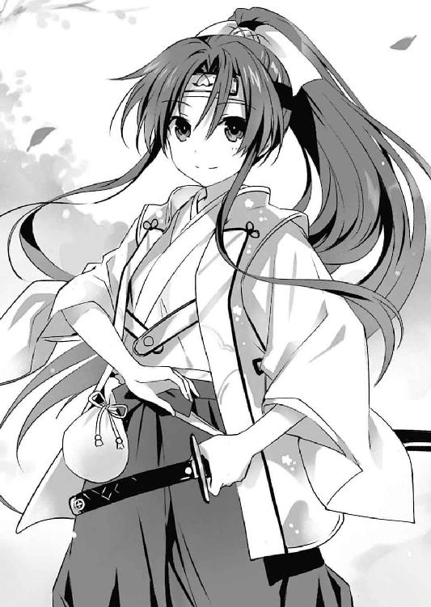
「いや、あくまで性質を大別するとそういう表現が近くなるってだけで、そのものってわけじゃないよ？ 簡単に言うと、外界から隔絶された空間に閉じ込められちゃったってこと」
「な......なるほど。それじゃあ、四糸乃たちのこの格好は？」
「んー......【幻書館】っていうのは、人の想像や幻想、思い描いた物語をベースにして練り上げられた空間なのよ」
「......つまり？」
「まあ簡単に言うとここは、〈神蝕篇帙〉によって集められた世界中の『物語』が混じり合った世界ってこと。それに取り込まれたあたしたちもまた、その『物語』に混じっちゃったってわけ」
「『物語』......」
「そ。少年は見たところ普通の格好だけど......何か思い当たることはなかった？」
「ああ......目が覚めたときは豚の着ぐるみを着てて、オオカミに追いかけられた」
士道が言うと、二亜は「ぷっ」と吹き出した。
「何それ。『三匹の子豚』？ えーなんで着ぐるみ脱いじゃったの？ 見たかったのにー」
「う、うるせ」
士道はそう言うと、改めて皆の姿を見回した。確かに全員、童話のキャラクターのような格好になっている。士道の三匹の子豚に、赤ずきん、桃太郎、そして──
「......ん？」
二亜に視線をやったところで、士道は首を傾げた。
「二亜、そういえばおまえは何のキャラクターなんだ？」
そう。他の皆の格好は一目で何のキャラクターか目星が付いたのだが、二亜の装いだけが何なのかわからなかったのである。少なくとも、黒コートに二丁拳銃を持った童話の主人公だなんて、見たことがない。
すると、二亜があははと笑ってみせた。
「これ？『SILVER BULLET』のファティマだけど」
「『SILVER BULLET』......って、おまえの漫画じゃねーか!?」
二亜の答えに、士道は素っ頓狂な声を上げた。
だが確かに言われてみれば、その装いは本条蒼二作『SILVER BULLET』の主人公によく似ている気がした。
「ふっふっふ、創作物に垣根はないのだよ、少年。そりゃ、知名度が高い物語ほど表層に出てくる可能性が高いから、必然昔話が多めになってくるけど、あたしの場合は他ならぬ作者だからねぇ。『物語』が『縁』に導かれて具現化したんじゃないかなぁ」
「そ、そういうもんなのか......てっきり童話縛りなのかと」
「んなこたーないよ。人が思い描いた『物語』なら、この世界のどこかには存在するはずだからね。人に認識されやすい......知名度の高いキャラクターなんかは、近代のものでもそこら辺を歩いてるんじゃないかな。──あ、噂をすればそこに、世界一有名なネズミが」
「ストップ！ なんだかそれは触れちゃいけない気がする！」
士道は絶叫じみた声を上げると、ブンブンと首を横に振った。
「......と、とにかく、完全には理解できないまでも、ここがどんな場所なのかはわかった。でも俺、ここに来たとき、どうやら意識を失ってたみたいなんだ。一体あれからどれくらい時間が経っちまったのかわかるか？」
不安げに眉を歪めながら、士道はそう言った。──そう。士道たちは〈フラクシナス〉に向かっている最中だったのである。このまま徒に時間を過ごしてしまっては、〈ラタトスク〉の基地は蹂躙されてしまうやもしれなかったし......宇宙にいる六喰のもとに、再びＤＥＭの魔の手が伸びる可能性もあった。
すると二亜は、そんな懸念を察したのか、士道を落ち着かせるように手のひらを広げてきた。
「ま、ま。焦りは禁物だよ、少年。こういうときこそ落ち着かなきゃ。この空間は外の世界より時間の進みが遅いから、今すぐどうこうってことにはならないはずだしね」
「そ、そうなのか？」
二亜の言葉に、士道は目を丸くした。すると二亜が肩をすくめながら続けてくる。
「うん。......ま、とはいえ、ここから出る手段を見つけなきゃいけない以上、あんまりのんびりはしてられないけどさ」
「......！ そうだ、それも聞きたかったんだ。俺たち、一体どうやったらここから抜け出せるんだ？」
士道が問うと、二亜は難しげな顔をして腕組みした。
「一番確実なのは、ウェストコットが〈神蝕篇帙〉を使ってもう一度チャンネルを開いてくれることだけど......」
「お、おいおい......」
士道は渋面を作った。士道たちを捕らえた敵に希望を託すなどできるはずがない。第一、ウェストコットが士道たちを解放するとなったなら、それは先方の目的が全て達されたあとだろう。
「それ以外となると......内側から世界を打ち破ることができる力を持ったキャラクターを探すしかないんじゃないかなあ。なんかこう、作中作から飛び出す主人公とか、もしくはいっそ、全能のスーパーヒーローとか」
「そ、そんな都合のいいキャラクター、いるのか？」
「んー......まあ、この世界の中には古今東西いろんな『物語』が混在してるからね。どこかにはいると思うよ。ただ......それがどこにいるかはわからないし、いたとして、あたしたちに力を貸してくれるかどうかもわからないけど」
「うぐ......」
二亜の言葉に、士道は思わず眉根を寄せた。この世界がどれくらい広いのかはわからなかったが、まるで砂漠で指輪を探すような話である。
だが、だからといって立ち止まっているわけにはいかなかった。心を落ち着けるように細く息を吐き、顔を上げる。
「──とにかく、まずは他のみんなを捜そう。琴里たちも、俺たちみたいにこの世界のどこかに飛ばされてるんだろう？」
「うん、たぶんね」
「なら、まずはそれからだ。外の世界に戻るにしても、全員揃ってなきゃ意味がないからな」
士道が言うと、皆が同意を示すようにこくりとうなずいてきた。
しかし、そこで十香が、むうと難しげに腕組みをしてくる。
「だがシドー、どうやって皆を捜すのだ？」
「う。それは......」
士道は答えに窮した。方針としては間違っていないと思うのだが、正直何も手がかりがなかったのである。
と、士道が思い悩んでいると、それまで沈黙を保ち、皆の言葉に耳を傾けていたオオカミが、そろそろと手を挙げてきた。
『あのう。もしかして、一緒にこの世界にやってきた方々を捜しているのですか？』
「え？ あ、ああ......そうだけど」
先ほどまでとは打って変わって礼儀正しくなったオオカミに戸惑いつつも、返す。するとオオカミは、ドン、と胸を叩くようにして続けてきた。
『ならば、僕の鼻が役に立つかもしれません。この世界においてあなた方はいわば異物、特徴的なにおいをしてらっしゃいます。似たようなにおいを辿っていけば、あるいは』
「......！ ほ、本当か？」
「おお！ やるではないか、オオカミよ！」
十香が表情を明るくし、オオカミの頭を撫でる。オオカミは、きびだんごをくれた十香をご主人と思っているのか、えらく嬉しそうに喉を鳴らした。
『──さて、ではさっそく向かいましょうか。微かにですが、北の城下町の方ににおいを感じます』
「ああ、頼むよ......っと」
士道はグッと足に力を入れ、その場に立ち上がった。が、まだ酷使した足は完全には快復していないらしく、一瞬ふらつき、倒れそうになってしまう。
「......っとと」
「む、大丈夫か、シドー」
「ああ、大丈夫大丈夫。ちょっとよろめいただけだ」
士道が言うと、オオカミがしゅんとした様子で耳をぺたんと閉じた。
『申し訳ありません......僕のせいですね。かくなる上はお詫びも兼ねて、僕が子豚さんをお運びしましょう』
「え？ い、いいよ、そんな......」
『いえいえ、遠慮なさらず。──さあ、僕の口の中へどうぞ。基本的に僕は獲物を嚙まずに飲み込むので、あとから吐き出せば大丈夫です』
「............」
物騒過ぎる言葉に、士道は無言のままブンブンと首を横に振った。
◇
「......里！ 琴里！」
「......。......事があり......せん」
朦朧とした意識の中、琴里の鼓膜はそんな声を聞いていた。
だが、身体がそれに反応を示してくれなかった。否、身体だけではない。その呼び声を認識してなお、脳がそれを思考に繫げてくれなかったのである。
今の琴里を支配しているのは、ただただ深い眠気であった。
つい先ほどまで寒くて冷たくて仕方なかった手足には、もうとうに感覚がない。恐らくこのまま眠りに就いたなら、二度と目覚めることはないだろう。だがそれを自覚してなお、眠気に抗うだけの力が湧いてこなかった。僅かに残った琴里の意識は、砂時計の砂が落ちるように失われ──
「──あっ、士道。いいところに。琴里が起きないのよ」
「要請。このままでは危険です。心臓マッサージをお願いします」
「......うわ、いきなり鷲摑みとか。やるぅ」
「不問。緊急事態です。ちょっとくらい大丈夫です。何なら直にどうぞ」
「............って、何やっとんじゃぁぁぁぁっ！」
両胸がぐにぐにと揉みしだかれる感触に、琴里はたまらず声を上げた。
が、目を開けてみると、自分の乳房を揉んでいるのが、兄の士道ではなく瓜二つの顔をした少女二人であることがわかる。
「......何してんの、耶俱矢、夕弦」
琴里が半眼を作りながら問うと、耶俱矢と夕弦は顔を一瞬見合わせてから琴里の方に向き直ってきた。二人とも当て布をした粗末な服に身を包み、何やら大きな荷物を携えている。似たような装いではあるものの、なぜか耶俱矢はズボン、夕弦はスカート姿だった。体格と髪型も相まってか、男と女の双子に見えなくもない。
「かか、騙されたな琴里」
「首肯。士道の名前を出せば愛の力で目覚めるという予想は正しかったようです」
未だ琴里の胸元に手を置いた二人が、小刻みに指を動かしながら言ってくる。琴里はふん！ と二人の手を振り払うと、その場に立ち上がろうとし......よろよろとへたり込んだ。
「って、ちょ、大丈夫？」
「心配。随分弱っています」
「......そりゃ、弱りもするでしょうよ」
琴里は白い息を吐きながら辺りの様子を改めて見回した。
琴里たちが今いるのは、童話の中に出てくるような外国の街だったのだが......問題はその天候だった。
見渡す限りの、白。いつから降り続いているとも知れない雪が、街の景色を白銀に染めていたのである。
そんな中琴里は、粗末な服だけで、まともな防寒具もなしに放り出されていたのだ。衰弱もしようというものだった。
琴里はちらと、自分が手にしていたカゴに目をやった。──たくさんのマッチが詰まった、それに。
「......まったく、これじゃまるで、『マッチ売りの少女』よね」
「『マッチ売りの少女』？」
「質問。何ですか、それは」
二人が首を傾げてくる。琴里は小さくうなずきながら言葉を続けた。
「アンデルセンの童話よ。貧しい少女が冬の街でマッチを売るんだけど、まるで売れないまま夜が更けていき......寒さに耐えかねた少女が暖を取ろうとマッチを擦ると......ふ、ふぁっくしょん！」
話の途中で、琴里は大きなくしゃみをしてしまった。それはそうだ。八舞姉妹に起こされはしたものの、事態は先ほどから何も改善していなかったのである。
「とりあえず場所変えよ。ここは寒すぎだって」
「首肯。とりあえず雪を凌げる場所に移動しましょう」
耶俱矢と夕弦がそう言って琴里の手を取り、肩を貸すような格好で雪に足跡を付けていく。
そして数分後。三人は狭い路地裏へとやってきた。無論寒いことに変わりはないが、そこは廃材置き場となっているらしく、少なくとも風が吹き込むことはなかったし、密集した建物の屋根のお陰で、雪も積もっていなかった。
「ま、本当は室内がいいんだけど......さっきのところよりはマシでしょ」
「同意。あとは火でもあればありがたいのですが......」
と、夕弦が何かに気づいたように琴里の持ったカゴに視線を落としてくる。琴里は彼女の思考を察したように「ああ」とマッチを一箱取り出した。
「売り物だけど、今はそんなこと言ってられないわね。せっかくだし『マッチ売りの少女』らしく、使ってみましょうか」
言って、琴里はマッチを一本取り出してみせた。
「そういえば話の途中だったけど、『マッチ売りの少女』ではマッチを擦ると何が起こったの？」
「ああ、それは──」
言いながら、マッチを擦り、火をつける。
すると、次の瞬間、その火で照らされた空間にぼんやりと、温かいスープや七面鳥の丸焼きなど、様々なご馳走の姿が浮かび上がった。
「うわっ!? 何これ!?」
「驚愕。何もなかった場所に料理が浮かび上がりました」
八舞姉妹が驚愕に目を見開く。
とはいえ、それは琴里も同様だった。確かに琴里の置かれた状況は『マッチ売りの少女』そのものであったが、まさか本当にこんな現象が起こるとは思っていなかったのである。
が、マッチがそう長い時間燃えていられるはずもない。頼りなげな火はほんの十数秒で消えてしまい、それと同時、ご馳走の姿も消えてしまった。
「あっ、消えた」
「驚嘆。不思議なこともあるものです。マッチの中に幻覚を見せる成分でも含まれているのでしょうか」
「いや、そういう生臭い話じゃないと思うけど......」
琴里が苦笑しながら言うと、耶俱矢が興味深げに残ったマッチを見つめながら口を開いてきた。
「で、これが童話の続き？」
「ええ......まあ、マッチはすぐに消えちゃうから、少女はこのあともマッチを擦り続けて、幸せな夢を見て、朝には死んでるっていうオチなんだけど」
「えっ、なにそれ悲しい」
「提案。それなら──」
と、夕弦が何かを思いついたように、路地の奥から小さめの廃材を幾つか持ってくると、たき火をするように組み上げた。
「要請。琴里、これに火をつけてみてください」
「え？ ああ、うん」
琴里は促されるままにマッチを擦ると、廃材に火をつけた。ちろちろと頼りなかった火が、やがて大きな炎となっていく。
すると、火の勢いに比例するようにして、路地裏いっぱいに、先ほどのような光景が広がった。食べきれないくらいのご馳走。暖かな暖炉。ついでに、優しく微笑む士道の姿までもが。
「うわ、すごっ！ 幻影!? 超リアルじゃん！」
「驚愕。士道までいます。やはり、士道を求める琴里の心に応じているということなのでしょうか」
「う、うるさいわね。......でもまあ、暖を取れるのはありがたいわ」
マッチ売りの少女がマッチをたき火に使うだなんて、お話的に言えば情緒ぶち壊しな気がしてならなかったが......まあ、背に腹は代えられないだろう。どれだけ美しい物語であろうと、自分が当事者となったなら雪に包まれて凍死などゴメンである。琴里はかじかんだ手を温めるように、たき火に手のひらをかざした。
冷たくなっていた指先に、ようやく感覚が戻ってくる。するとそれと同時に、ぐぅぅ......とお腹が悲鳴を上げた。
「お？ 琴里、御主まさか腹でも空いたのか？」
耶俱矢が、思い出したように偉ぶった物言いをしてくる。琴里は恥ずかしそうに頰を染めた。
「ぐ......仕方ないでしょ。さっきまで凍死寸前だったんだから。......このご馳走が食べられればいいんだけど」
琴里はそう言うと、周囲に浮かんだご馳走に手を伸ばした。が......それはやはり幻影であるらしく、琴里の手は空を摑むのみだった。
「......やっぱりそう上手くはいかないか」
と、琴里が悔しげにうめくと、耶俱矢が「あ」と手を打った。
「そうだ、夕弦。さっきの」
「名案。そういえば、あれがありました」
「......？ 何よ、一体」
琴里は訝しげに眉根を寄せた。すると耶俱矢と夕弦が、携えていた大きな荷物を解き、その中にあるものを琴里に見せてきた。
「！ これって......」
琴里は思わず目を見開いた。
しかしそれも当然だ。二人の持っていた鞄に入っていたのは、ビスケットやキャンディなど、様々なお菓子の山だったのである。
「二人とも、これ一体どうしたのよ」
「うん？ 何やら気づいたら夕弦と二人、黒き森の中におってな。しばらく歩いていると、菓子でできた家に辿り着いたのだ」
「説明。お腹も空いていたので、そこから壁や屋根の一部をいただいてきたというわけです」
「な......」
二人の説明を聞いて、琴里は目を丸くした。だが、自分が置かれていた状況とそれを対比し、得心がいったようにうなずく。
「なるほど......二人は『ヘンゼルとグレーテル』ってわけ？」
「ヘンゼルと？」
「疑問。グレーテル、ですか」
首を傾げてくる二人に、琴里は小さくうなずいた。
「ええ。これも童話よ。母親に捨てられた兄妹が森の中でお菓子の家を見つける話......なんだけど、......ねえ、二人とも。そのお菓子の家に、誰か住んでなかった？」
琴里が問うと、二人は何かを思い出したように首肯した。
「そういえば、老婆が一人おったな。何やら家の中に引き込もうとしてきたが、不審だったので無視してきた」
「首肯。そうしたら凄まじい形相で追いかけてきましたね」
「かか！ まああのような老婆、我ら八舞の健脚に敵うべくもないがな！」
「真実。耶俱矢は老婆のあまりの豹変振りに、泣きながら走っていました。たぶんおしっこもちびっていました」
「ちびってはないんですけど!?」
「............」
二人の話に、琴里は苦笑した。本来ヘンゼルとグレーテルはその魔女に捕まってしまうのだが......二人にはいらぬ心配だったらしい。
「まあ......無事で何よりよ。それより、少しもらってもいい？」
「無論だ。好きなだけ食らうがよい」
言って、耶俱矢がえっへんと胸を反らしながらお菓子を差し出してくる。琴里は「じゃあ、遠慮なく」とそれに手を伸ばした。
クッキーやドーナッツなど、カロリーの高そうなものから口に放り込み、咀嚼する。普段は乙女の天敵であるそれらも、この状況下では頼もしいエネルギー源である。糖分がじわりと口の中に広がっていくと同時、手足の先に力が満ちていくような感じがした。
「ふう......生き返ったわ。あとはチュッパチャプスがあれば言うことないんだけど......ま、贅沢も言ってられないわね」
琴里は棒のついていない飴玉を一つ、口に放り込むと、ピコピコと存在しない棒を動かすような仕草をしてみせた。八舞姉妹が『おお......』と目を丸くする。
「見える。見えぬはずの棒が見えるぞ......！」
「驚嘆。エアチュッパチャプスです」
二人のオーバーリアクションに、琴里は思わず苦笑した。
「何言ってるのよ。......ま、とにかく助かったわ。ありがとう、耶俱矢、夕弦」
「かか、気にするでない。この程度、我ら八舞には易きこと」
「首肯。困ったときはお互い様です」
二人がニッと笑いながら言ってくる。琴里はそれに応ずるようにうなずくと、難しげな顔を作ってあごに手を当てた。
「とはいえ......状況はあまり変わってないわね。一体何がどうしたっていうのかしら。......まさか本当に、本の中の世界に閉じ込められたっていうの？」
この世界に迷い込む前の最後の記憶は、〈ラタトスク〉の基地でウェストコットと対峙し、巨大な本に吞み込まれたことである。それが魔王〈神蝕篇帙〉の力であることは疑いようがないが、今自分たちがどのような状況に置かれているかは、はっきりとはわからなかった。
「とにかく、なんとかしてもとの場所に戻らないと......」
琴里が言うと、耶俱矢がむうと腕組みをしてきた。
「それはそうであるが、一体如何様に動けばよいのだ」
「それは......わからないけど。でも、私たちがこうして会えたってことは、他のみんなもこの世界のどこかにいる可能性が高いわ。まずはみんなと合流して作戦を──」
と、琴里が言いかけたところで、路地の入り口の方から、何やら馬車が道を通るような音、そして人の話し声が聞こえてきた。
『......っとと、今日は馬車が多いな。何かあったのか？』
『知らないの？ 今日はお城で舞踏会が開かれるんだけど、そこで凄いものがお披露目されるらしいのよ』
『凄いもの？ なんだそりゃあ。王様の隠し子かい？』
『違うわよ。......知り合いに城仕えがいるんだけど、なんでも伝説の人魚が見つかって、お城に献上されたっていう話なの。そして、それをいたく気に入った王様が、舞踏会に集まるお歴々に披露しようっていうことらしいわ』
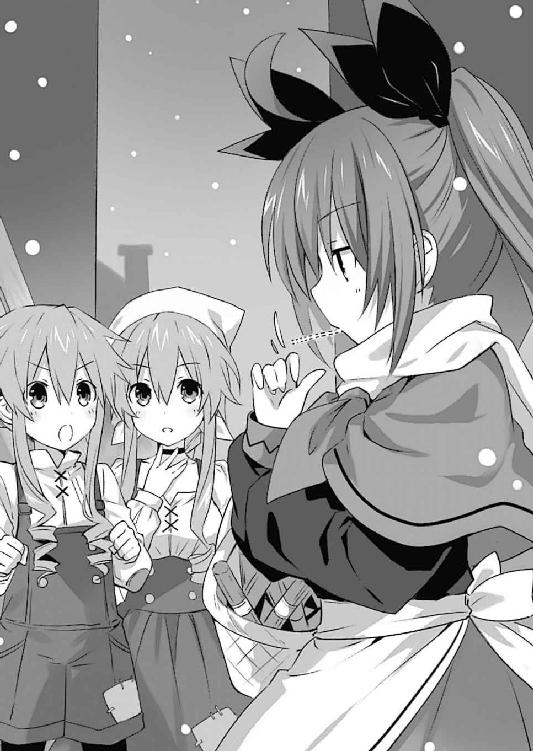
『人魚ぉ？ 馬鹿言え、そんなのいるはずがねぇだろう』
『これが本当なのよ。なんでも、「だーりーん、だーりーん」って歌うらしいわ』
「............」
まるでこちらに聞かせているかのような露骨な噂話に、琴里たちは顔を見合わせた。
「......どう思う？」
「いや、どうって......」
「狼狽。なんだかもの凄く、その人魚に心当たりがある気がします」
三人は数秒の間黙ったのち、誰からともなく立ち上がった。
◇
──〈フラクシナス〉の艦橋に、緊急事態を告げるアラームが鳴り響く。
モニタには基地内部を映したカメラの映像や、基地内の見取り図、さらにはそこを移動する赤いマーキングなどが幾つも映し出され、クルーたちの混乱を煽っていた。
「──空爆は止んだものの、その代わり基地内部で銃撃戦が起こっている模様です！」
「き、基地内にＤＥＭインダストリーの魔術師、及び無数の〈バンダースナッチ〉の反応を確認！」
「司令たちは!?」
「さっきから何度もコールしていますが、連絡が取れません！」
「な、なんでこんなことにっ！ ああああ、神様ミスティ様ぁぁぁ！」
クルーたちの、怒号とも悲鳴ともつかない声が、艦橋にこだまする。ちなみに中津川は、禁止されていたはずの美少女フィギュアをコンソールの上に飾って、神像に祈りを捧げるかのように手を合わせていた。
しかしそれも当然ではあった。〈ラタトスク〉基地から入ってきた情報によれば、ＤＥＭインダストリーの空中艦が基地上空に現れ、基地を攻撃し始めたというのだ。
宇宙へ発つために〈フラクシナス〉の艦橋で調整作業に勤しんでいたクルーたちからしてみれば、何の前触れもなく横っ面を殴られたようなものである。今まで様々な修羅場をくぐってきたクルーたちではあるけれど、さすがにこんな状況は初めてだった。
「......っ、......っ」
クルーの一人、椎崎雛子は、ばくばくと情熱的なリズムを刻む心臓をどうにか大人しくさせようと、胸元に手を置いた。だが、落ち着こう、落ち着こうと思えば思うほど、心拍は強く、激しくなっていった。
すると。そこでパーソナルモニタに『ＭＡＲＩＡ』の文字が表示された。
「へ......？」
雛子が目を丸くしていると、パーソナルモニタに備わったスピーカーから、〈フラクシナス〉ＡＩ・マリアの声が聞こえてきた。
『落ち着いてください、椎崎。こういった状況のとき、敵よりも恐ろしいのは、混乱して自分を見失ってしまうことです。落ち着いて、訓練通りにいきましょう。大丈夫。あなたたちの優秀さは私が一番よく知っています』
「え、あ、あの......はい」
真っ直ぐなマリアの言葉に、雛子は呆気に取られるようにうなずいた。
ふと周囲を見ると、その光景は他のクルーのところでも起こっているらしかった。目の前のモニタが点灯し、皆に声をかけていく。皆雛子と同じように驚き──しかし、落ち着きを取り戻していった。
するとそれに合わせるようにして、副司令・神無月が艦橋に声を響かせた。
「これはこれは。先を越されてしまいましたね。マリアの言う通り、落ち着きましょう。──基地側から通達は？」
「は......！ 〈フラクシナス〉は五河司令、及び士道くん、精霊たちを回収し次第、〈ゾディアック〉の下へと向かい作戦を遂行せよ、とのことです！」
「ふむ......よろしい。ならば我らがすべきは、司令たちが戻るまでに全ての準備を済ませておくこと、そして〈フラクシナス〉を守り切ることです」
落ち着いた調子で、神無月が言ってくる。クルーたちはごくりと息を吞んだのち、『了解！』と返した。
が──次の瞬間。
今までよりも遥かに大きな爆発音が響いたかと思うと、〈フラクシナス〉の艦体が激しく震動した。
「く......！ これは!?」
川越がコンソールにぶつけた頭をさすりながら言うと、モニタに〈フラクシナス〉外部の様子が映し出された。
格納庫の中に、数機の〈バンダースナッチ〉と、ＣＲ-ユニットで武装した魔術師たちの姿が確認できる。どうやら、ついにここまで敵が到達してしまったらしい。
「艦体下部に被弾！ 被害は軽微ですが、敵魔術師が〈フラクシナス〉に取り付こうとしています！」
箕輪の言葉に、クルーたちに戦慄が走った。
「まずい、今すぐ対処しないと！」
「しかし、格納庫の中で弾幕を張るわけにも──」
艦橋が騒然とする。
すると、神無月がパンパンと手を叩いた。
「──手はあります。マリア、随意領域を。範囲五〇、属性は魔力生成阻害です」
『了解。基礎顕現装置起動。随意領域を展開します』
マリアが静かな声音でそう言うと、艦内にフォォォォォ......という微かな音が鳴り響き──〈フラクシナス〉の周囲に、不可視の領域が広がっていった。
瞬間、格納庫にいた数機の〈バンダースナッチ〉が、糸の切れた操り人形のようにガシャガシャとくずおれていく。
「！ 〈バンダースナッチ〉が!?」
「ええ。こちらの随意領域で、敵の随意領域を中和しました。生成魔力で動いている人形にとって、これは致命的でしょう」
「さ、さすが副司令！」
幹本が賞賛の声を上げる。しかし、神無月は得意がるでもなく、真剣な表情を保ったままだった。
「ですが」
神無月の言葉と同時、再び爆発音が響き、艦橋が微かに揺れた。
「──阻害したのはあくまで随意領域ですので、生身の人間と実弾はどうしようもありませんね」
「な......っ!?」
「それじゃ意味ないじゃないですかぁぁぁっ！」
クルーたちの悲鳴が響いた次の瞬間、艦橋の扉の方からボン！ という音がしたかと思うと、ワイヤリングスーツを纏った魔術師が三名、ハンドガンを構えながら艦橋に踏み込んできた。
「全員、手を上げろ！」
「不審な動きを見せれば撃つ！」
「き、きゃあっ!?」
突然の事態に、雛子は悲鳴を上げ、両手を高く掲げた。他のクルーも敵の指示通り、手を上げたままその場に静止する。
魔術師たちはその様子を確認したのち、アイコンタクトを交わし、小さくうなずいた。
「へぇ、これが噂の〈フラクシナス〉か」
「っは、〈アルバテル〉でも墜とせなかった大物をたった三人で押さえただなんて、大手柄じゃないか？ ウェストコット様もお喜びになられる」
「......油断するな、二人とも。無駄なお喋りは全員を拘束し、艦のＡＩを眠らせてからだ」
隊長格と思しき男が言うと、前方にいた二人の魔術師が了解を示すようにうなずいた。
「さぁて、悪いが捕まえさせてもらうよ。何、ウェストコット様はあんたらのことがお気に入りだ。悪いようにはされねぇさ」
言って、魔術師が油断なく銃を構えたまま、足を踏み出してくる。そして、一番手近にいた雛子の手を捻り上げると、そのまま床に押さえつけようとした。
「きゃ......！」
「抵抗するなよ。こっちもできれば生け捕りにしろって言われてん──」
と、魔術師が言いかけた瞬間。
『──────ッ！』
雛子の頭上に、巨大な虎の顔が現れたかと思うと、魔術師目がけて咆吼を発した。
「う、うわぁぁぁっ!?」
魔術師は、突然現れた巨大な獣の姿に驚愕の声を上げると、手にしていたハンドガンの引き金を引いた。
しかし、弾は虎を突き抜けると、艦橋の壁に当たり、カン！ と乾いた音を立てて跳弾した。
そこで、気づく。そこに現れた獣の姿が、立体映像によるものだということに。
「な......!?」
残り二人の魔術師も、一瞬その獣に目を奪われる。するとその瞬間、神無月の姿が消えたかと思うと、雛子の手を取っていた魔術師が短い苦悶の声を上げて後方へと倒れ込んだ。
「え......？ あ──」
一瞬ののち、理解する。目にも留まらぬ身のこなしで肉薄した神無月が、魔術師のあごを蹴り上げたのである。
「ファインプレイです、マリア。あとで動力部を磨いてあげましょう」
『なんだか気持ち悪いです、神無月』
ジェスチャー付きの神無月の言葉に、マリアが冷めた調子で返す。すると呆気にとられていた魔術師たちが、我に返ったように神無月に銃を向けた。
「この......！」
「抵抗を──！」
しかし、その引き金が引かれるより一瞬早く。
「あ......あああああああああああああああああああああああああああああッ!?」
艦橋に、中津川の悲痛な叫びが響き渡った。
「な......なんだ!?」
突然の叫び声に、魔術師の一人が銃口の向きをそちらに変える。しかし、中津川はそんなものに構うことなく、ただ噎び泣くように声を上げていた。
彼の手元に目をやり──その嗚咽の理由に気づく。何とも運の悪いことに、先ほど跳弾した弾丸が、中津川のフィギュアにクリーンヒットし、その上半身を吹き飛ばしてしまっていたのである。
「おのれ......おのれおのれおのれおのれェェェェェッ！ 俺のミスティをォォォッ！」
中津川は血涙を流すような勢いで怨嗟に満ちた声を上げると、自分に銃を向けた魔術師目がけて床を蹴った。
お世辞にもスリムとは言えない中津川のボディが、文字通り肉弾となって魔術師に迫る。
「く......!?」
魔術師は中津川目がけてハンドガンの引き金を引いた。銃弾が中津川の肩を穿ち、血がしぶく。
しかし、中津川は微塵の恐怖も痛みも見せず、そのままタックルを繰り出し、魔術師を床へと転倒させた。
「ぐはっ！」
後頭部を強かに打ち付けた魔術師が苦悶の声を漏らす。だが、中津川はまだ止まらない。そのままマウントポジションを取ると、一心不乱に魔術師を殴りつけ始めた。
「がぁぁぁぁぁぁぁっ！」
「ちょ......ぐっ、うぐぇっ！」
如何に魔術師といえど、随意領域がなければ通常の人間と変わりない。中津川に馬乗りになられた魔術師は、頭部を護るように両手で顔を覆った。
「くっ、貴様......！」
その光景を見ていた魔術師最後の一人が、中津川に銃口を向ける。
二人の距離はおよそ一〇メートル。しかも、先ほどとは異なり中津川は移動していない。訓練を受けた魔術師であれば、正確に銃弾を命中させてしまうだろう。
「......っ！」
瞬間、雛子は懐に手をやると、そこから手製の藁人形を取り出した。
そして素早く念を込めながら、藁人形の胴をぎゅうと握りしめる。
「ぎゅっ!?」
すると次の瞬間、銃を構えていた魔術師が、珍妙な悲鳴を上げて、鯖折りにされたかのように身体を曲げた。
その隙を、神無月が見逃すはずはなかった。先ほどのように一瞬で隊長格の魔術師に肉薄すると、銃を持つ手を蹴り上げたのち、その首に腕を回し、そのまま頸動脈を締めて昏倒させた。
──時間にすれば、恐らく三分にも満たない短い時間。
そんな僅かな時間の中で、〈フラクシナス〉は危機を迎え──そして、それを脱した。
「ふう......何とかなりましたね」
神無月が、手をはたくような仕草をしながら言う。その言葉に、中津川を除くクルーたちが一斉に安堵の息を吐いた。
「はぁ......死ぬかと思いましたよ」
「本当よ。心臓に悪いわ。......あ、中津川くん、その人もう気絶してるみたいだし止めてあげて」
箕輪が言うと、中津川が熱い涙を流し、嗚咽しながらもその手を止めた。
「う、うぅ......ミスティ。ごめんよ、ミスティ......」
それからようやく肩を撃たれた痛みが襲ってきたのか、悲鳴を上げてその場を転げ回った。
「って肩！ いったぁ！ おぉぉん！ おぉぉぉぉん！」
「ああもう、あんまり暴れ回らないの！ 村雨解析官、お願いできますか？」
「......ああ。止血をしておこう。銃弾は貫通しているようだし、しばらく医療用顕現装置に入っていれば問題ないだろう。とりあえず、上着を脱いでくれ」
言って、令音が中津川の応急処置を始める。
するとそこで、マリアが皆に向けて声を発した。
『──皆さん、お疲れ様です。魔術師たちが気絶している間に、顕現装置と武器を回収して拘束しておきましょう。──それと、中津川、椎崎』
「う、うぅぅ......はい？」
「な、何？」
急に名を呼ばれて顔を上げると、マリアは短く告げてきた。
『フィギュアと藁人形の戦略上の有用性を確認しました。特別に艦橋への持ち込みを検討しておきます』
◇
「──ぶぇぇぇっくしょん！ っあー......ちくしょー」
女の子らしからぬ二亜のくしゃみに、士道は思わず苦笑した。
「おいおい、大丈夫かよ」
「だいじょばなーい。何ここちょっと寒すぎない？」
言いながら、二亜が首を埋めるようにコートの襟を立てる。
とはいえそれも無理からぬことではあった。士道たち一行はあのあとオオカミに道案内されて野山を抜け、件の城下街に辿り着いていたのだが......街に入った瞬間から、季節、天候、時間までもが、一瞬にして変貌してしまっていたのである。
辺り一面を覆うは白銀の雪。空は既に暗く、道は街灯で照らされていた。先ほどまでとはまったく違う光景。これも、『物語』が混在するこの世界特有の現象なのだろう。
「ねー少年、脱いだ着ぐるみって持ってきてないの？」
「ないよ。って、そういうおまえもコートじゃねぇか。......十香と四糸乃は大丈夫か？」
士道が問うと、二人は同時にうなずいてきた。
「うむ、大事ない」
「はい。寒いのは、得意です」
二人が言うのと同時、二亜がもう一度派手なくしゃみをした。
「......っえーい、くっそぉ。少年、さっさと妹ちゃんたち見つけて暖かいとこに戻ろー」
「ああ、そうだな。ええと......オオカミの話だと、あの城の方からにおいがするんだったっけか」
言って、士道は街の奥に見える大きな城に視線を向けた。
ちなみに、道案内をしてくれたオオカミとは、街に入る前に別れていた。さすがにあの巨大なオオカミを連れて街に入っては、大騒ぎになってしまうだろうと予想したのである。
実際、道行く人たちは、奇妙な格好をした士道たちにちらちらと視線を送ってきていた。......まあ、明らかに世界観や国籍の違う集団なので仕方のないことではあるのだが、あまりいい気分はしなかった。
「とにかく、まずは城に向かおう。他に手がかりもないしな」
士道の言葉に、皆が首肯する。士道はそれにうなずき返してから、街の大通りを歩いていった。
──と、それからどれくらい歩いた頃だろうか。城の前に至ったところで、士道たちは足を止めた。
理由は単純。城の前で、何やら揉め事が起こっていたのである。
「あれは......」
士道は目をこらすようにしてその様子を見やった。城門を守る衛兵と思しき男に、三人の少女たちが詰め寄っているようだったのだが、それは──
「琴里！ 耶俱矢！ 夕弦！」
士道はその少女たちの名を呼んだ。すると、三人がその呼び声に反応するようにこちらに振り向いてきた。
「！ 士道！ 無事だったの......って、みんな何その格好」
琴里が士道たちの姿を見るなり、怪訝そうな顔をして言ってくる。士道は苦笑しながら歩調を速め、琴里たちの下に至った。
「おまえたちも無事だったんだな。よかった。......で、一体何してるんだ？」
士道が問うと、耶俱矢が不満げに腕組みした。
「見ての通りだ。城の中におるという人魚を見にいこうとしたのだが......」
「人魚？」
「ああ。なんでも『だーりーん、だーりーん』と鳴く珍獣らしい」
「......な、なるほど」
士道は頰に汗を垂らしながら苦笑した。この上ない説得力である。
「だが、そこな衛兵が話のわからぬ奴でな」
「不満。夕弦たちはお城に入れられないと言うのです」
八舞姉妹の言葉に、衛兵が険しい顔をしながら声を発してきた。
『当然だろうが！ 今日は高貴な方々がお城に集まる舞踏会。貴様らのようにみすぼらしい連中を入れられるはずがない！』
「なんだと？ 貴様、我が身に溢るるこの威容がわからぬと申すか！」
「憤然。服のみで人の価値を判別するのは下の下です」
『うるさいっ！ それになんだその新しく出てきた奴らは！ みすぼらしいだけでなく怪しすぎるわ！ いいからとっとと去れ！ でなければ牢屋にぶち込むぞ！』
衛兵が声を荒らげ、琴里たちを追い払うように手を振る。どうやら士道たちの登場によって、さらに不信感を募らせてしまったらしい。......まあ、無理もない話ではあったが。
「このままじゃ、城に入るのは難しそうだな......」
「って言っても、放ってはおけないでしょ。......こっそりと忍び込む？」
「いや、この衛兵を昏倒させた方が手っ取り早いだろうて」
「賞賛。名案です」
琴里や八舞姉妹が悪そうな顔をしながら言うと、衛兵が表情をさらに険しくした。
『全部聞こえているぞ貴様らっ！ ええい、もう我慢ならん。全員──』
──と、そのとき。
後方から馬車の走るような音が聞こえてきたかと思うと、衛兵が不意に言葉を止め、何やらポカンとした様子で目を丸くした。
「ん......？」
士道は不思議に思って後方を振り向き──衛兵の表情の意味を知った。
街の大通りを、見るも美しい一台の馬車が走ってきていたのである。
煌めくような毛並みを持つ白馬。街灯の明かりを浴びてキラキラと輝く車体。まるで夢の世界から抜け出てきたかのような、幻想的な姿である。士道と一緒にそちらを向いた精霊たちも、しばしの間目を奪われ、言葉を失う。
皆の注目を浴びながら、その馬車は城の前で停車した。そして御者が恭しく車体の扉を開けると──その中から、一人の女性が姿を現した。
宝石をちりばめたような煌めきを放つドレスと、それに負けないくらいに美しい相貌。そして──その足に輝くのは、幻想的なガラスの靴。
その神々しい様に、衛兵、そして周囲にいた舞踏会の参加者や通行人が、ごくりと息を吞んだ。
「......って」
だが。士道たち外の世界の住人のみは、その女性に少々異なった反応を示していた。
確かに、美しい。確かに、目を奪われても仕方がない。しかしそれ以前に、その女性は──
「七罪!?」
士道たちと一緒に、この世界に吸い込まれた精霊の一人だったのである。
「あら、士道。それにみんなも。ごきげんよう」
煌びやかなドレスに身を包んだ七罪は、にこりとたおやかな笑みを浮かべてそう言ってきた。
とはいえ──その姿は七罪であって七罪ではない。スラリとした長身。艶やかな髪。明らかに、〈贋造魔女〉の力で変身したあとの七罪であった。
「ど、どうしたのよ七罪、その姿......まさか、天使が使えたの!?」
琴里が問うと、七罪は静かに首を横に振った。
「ううん。私の前に魔法使いが現れて、この姿にしてくれたの。ふふ、見て。このガラスの靴。綺麗でしょう？」
言って、七罪がその場でくるりとドレスを翻してみせる。
士道は琴里と目を見合わせ──その視線で察した。
琴里もまた気づいたのだろう。七罪が、どんな『物語』と混じったのかを。
しかし七罪はそんな二人の様子に気づいた様子もなく、悠然と衛兵の方に歩いていった。
「──ごきげんよう、衛兵さん。通してもらえるかしら？」
『は......！ はい、どうぞ、お通りください』
先ほどとはまるで違う態度で以て、衛兵が道を空ける。その様子に、耶俱矢たちが不服そうに唇を尖らせた。
「おい貴様、我らのときと態度が違うではないか」
『だ、黙れっ！ 彼女ほどの貴人を貴様らと一緒にするな！』
と、衛兵が声を上げると、七罪が何かに気づいたように眉を揺らした。
「あら、もしかして耶俱矢たちもお城に入ろうとしていたの？」
「ああ。そこの分からず屋に足止めを食っていたがな」
「ふぅん......そう」
七罪はそう言うと、妖しい手つきで衛兵のあごを撫でた。
「──彼女たちは私のお付きなの。一緒に通してくれないかしら？」
『は......っ!? し、しかしそれは......』
衛兵が目を見開き、息を詰まらせる。七罪は面白がるようにふふっと唇を緩めた。
「ねぇ......いいでしょ？」
『は......ど、どうぞ、お通り──』
が。衛兵が返事を発しかけた、そのとき。
ゴーン、ゴーン......と、城の壁面に付けられていた大時計が、鐘の音を鳴らした。
すると次の瞬間、七罪の身体が淡く光り──
ポンッ！ と音を立てて、その身体が縮んでしまった。
「ふぇっ!?」
否、身体だけではない。彼女の纏っていたドレスはツギハギだらけの服になり、乗ってきた馬車はカボチャに変貌してしまった。
「な......何、どうしたのこれ......っ!?」
四糸乃と変わらぬくらいの身の丈になってしまった七罪が、慌てて自分の身体を見回す。
士道は城の大時計に目をやり──その時刻を見て、全てを察した。
時計が指し示した時刻は〇時。つまり......『シンデレラ』の魔法が解ける時間だったのである。
『............』
数秒前まで七罪に絆されかかっていた衛兵が、再び表情を険しくし、小さくなった七罪を睨み付ける。七罪はビクッと肩を震わせると、そのまま四糸乃の背後に身を隠してしまった。
『......ええい！ 怪しげな術を！ 魔女め、絶対にここは通さんぞ！』
衛兵は、敵意に満ちた目で七罪たちを睨みながら、城の前に立ちはだかった。......どうやら、かえって警戒心を煽ってしまったようだ。
とはいえ、だからといって諦めるわけにもいかない。士道はむうとうなって一歩後ろに引くと、衛兵に聞こえぬよう声をひそめて皆に話しかけた。
「参ったな......どうにかしないと」
「でも......一体どうしましょう」
四糸乃が眉を八の字にしながら言う。すると二亜が、「あ」と指を一本立てた。
「さっきのオオカミみたいに、とーかちゃんのきびだんご食べさせてみるとかどうよ。ほら、あれってイヌ、サル、キジ特効じゃん？ 言ってみれば人間もサルみたいなもんだし、効くんじゃないの？」
「いや、仮に効くとしても、不審人物から受け取ったものなんて食べないだろ......。それより、さっきの七罪みたいに、ちゃんとした格好をしてれば入れてもらえるんじゃないか？」
士道の言葉に、琴里が渋面を作る。
「それこそ、どうやってドレスを用意するのって話よ。悪いけど、私は一銭も持ってないわよ。こちとらお金なくて凍死しかけてたんだから。あるものと言ったらお菓子とマッチくらいで──」
と、そこまで言ったところで、琴里が何かを思いついたようにあごに手を当てた。
「ん？ どうした、琴里」
「......みんな、ちょっと来てくれる？」
言って、琴里が皆を呼び、城の前から立ち去る。衛兵がフンと息を吐き、犬を追い払うようにシッシッと手を振った。
「おい、どこ行くんだよ、琴里」
「いいから、ちょっとついてきて」
琴里は通りをしばらく歩くと、路地裏に入っていき、その奥に捨てられていた廃材と思しき木片を手に取った。
そして、穿いていたスカートの裾をビリッと破り取ると、その木片に巻き付けていく。
そう。まるで──即席の松明でも作るかのように。
「それは......」
「本当は油にでも浸したいところだけど、まあしばらくは保つでしょ」
琴里は肩をすくめながらそう言うと、次いで手にしていたカゴからマッチを取り出し、何やら念を込めるように目を閉じてから、その松明に火をつける。
すると、その火で照らされた琴里の纏っている服が、見るも鮮やかな赤のドレスに変貌した。
「うおッ!? これは......！」
士道が驚きに目を丸くしていると、八舞姉妹がポンと手を打った。
「！ なるほど、『マッチ売りの少女』の幻影マッチか！」
「納得。確かにこれならば、まるでドレスを着ているように見えます」
そう言う耶俱矢と夕弦の姿もまた、煌びやかなドレス姿に変貌する。否、それだけではない。松明の明かりが届く範囲にいる精霊たちが皆、貴族の令嬢のような格好に変身していた。
「おお！ なんと！」
「綺麗......です」
精霊たちが驚きの声を上げる。
原理はわからないが......確かにこれならば衛兵の目を欺けるかもしれない。
だが士道は、火に照らされた自分の容貌に視線を落とし、頰に汗を垂らした。
「......で、なんで俺までドレスなんだ？」
そう。なぜか士道の格好まで、皆と同様綺麗なドレスになっていたのである。ついでに、顔には化粧が施され、髪は背を隠すくらいに伸びている。......まるで、士道が女装した『士織ちゃん』のような容貌だった。
「シンデレラが行くような舞踏会なら、女の子の方が入り込みやすいんじゃないかと思ったのよ。ほら、王子様が結婚相手を探してて、近隣から貴族の子女を招いてるとかありそうじゃない。他意はないわ」
「......本当だろうな？」
士道が半眼で問うと、琴里がもの凄く適当な調子で「ええ」とうなずいた。
「............」
少々腑に落ちないところはあるものの、仕方ない。士道は小さくため息を吐くと、琴里について、再度城への道を歩いていった。
第五章 主人公
「おお......！」
幻影マッチによって煌びやかなドレス姿になった十香が、キラキラと目を輝かせながらホールの中を見回す。
否、十香だけではない。八舞姉妹や四糸乃もまた、興奮した様子で周囲に目をやっていた。
とはいえそれも仕方のないことなのかもしれなかった。今士道たちがいる城のパーティーホールは、豪奢にして壮麗、それこそ文字通り、おとぎ話の世界でしか見たことのないような空間だったのである。
煌めくシャンデリアに、継ぎ目なく敷き詰められた真紅の絨毯。柱や階段の手すりに至るまで精緻な意匠が施されており、それ自体が調度品と言われても不思議のないテーブルには、見るも豪華なご馳走が並んでいた。
集った人々も名家の子女なのだろう。皆美しいドレスに身を包み、優雅な所作で以て談笑をしている。
そう。士道たちは琴里の機転によって、ようやくあの城門の衛兵を突破することができたのである。
......まあ、とはいえ先ほど顔をしっかり覚えられていたため、突然見事なドレス姿になったことを少々疑われはしたのだが。
「あー、みんな。気持ちはわかるけどあんまり遠くにいかないようにね。火の明かりが届かないところにいくと、本当の姿に見えちゃうから。特に十香。一気に日本一になっちゃうから。ていうかそれ以前に、要人の集まるパーティー会場に日本刀装備とか結構本気でマズいから」
「うむ！ 心得た！」
即席の松明を掲げながら琴里が言うと、十香が元気よく答えた。
が、その数秒後。十香の横にいた八舞姉妹が、勢い余って明かりの範囲外に出てしまう。
「うおっ!?」
「狼狽。しまったです」
耶俱矢と夕弦の装いが、美しいドレス姿からツギハギだらけの服へと変貌する。二人は素っ頓狂な声を上げると、体操選手のような身のこなしで身体を捻り、後方へと飛び退いた。
八舞姉妹の声に数名の人間が不思議そうな顔をしながら振り向いたが、一瞬の出来事であったためヘンゼルとグレーテルスタイルは目撃されなかったようである。それを見ていた琴里がはあと息を吐いた。
「もう、言わんこっちゃない。気を付けなさいよ？ せっかく苦労して侵入成功したんだから」
「ご、ごめん......」
「謝罪。以後気を付けます」
二人がしゅんとした様子で頭を下げてくる。琴里はやれやれと肩をすくめた。
「さて......と。それよりも件の人魚姫様はどこかしら？」
「ん......見たところそれらしい姿は見えないけど......」
と、士道がキョロキョロとホールの中を見回していると、視界の端に、すっと人影が現れた。
『──もし。美しいお嬢さん』
「え？」
不意に声を掛けられ、そちらに目をやると、そこに瀟洒なタキシードを纏った青年がいることがわかった。
『よろしければ、一緒に踊ってはいただけませんか？』
青年が優しげに微笑み、恭しく手を差し出してくる。それを見て、士道は琴里の方に視線をやった。
「はは、ダンスのお誘いだってよ。モテるじゃないか、琴里。兄ちゃん妬いちゃうぞ」
しかし青年は不思議そうに首を捻り、士道の目をジッと見つめながらもう一度声を発してきた。
『いえ、そちらの小さなレディではなく、あなたです』
「....................................は？」
青年の言葉に、士道は困惑した顔を作ったが──すぐに思い出す。今の士道は、琴里の幻影マッチによって、ドレス姿の士織ちゃんに変貌しているのである。
とはいえ、士道に男と踊る趣味などないし、それ以前に炎の効果範囲から出た瞬間、男の姿に戻ってしまうのである。踊っている最中に女が男になってしまうなど、シンデレラどころの話ではない。
「......、こっちじゃなくて？」
士道が頰に汗を垂らしながら琴里を示すと、青年が『またまたご冗談を』というように肩をすくめてみせた。
『ユーモアのある方だ。でも、さすがにそんな冗談を言ってはそちらのお嬢ちゃんが可哀相ですよ。──ほうら、君、あちらのテーブルに美味しいケーキが並んでいるよ？ 食べてきたらどうだい？』
青年が、子供をあやすような調子で琴里に笑いかける。瞬間、琴里の額に血管が浮かぶのが見えた。
「な、なんですってぇ？」
「お、おい、落ち着けって、琴里......」
ここで騒ぎを起こしてしまうのは望ましくない。士道は慌てていきり立つ琴里の肩を押さえた。
すると、ちょうどそのとき。ホール奥の舞台に侍従のような格好をした女性が現れ、ホールで歓談する賓客たちに向かって声を発した。
『──皆様、ご歓談中失礼いたします。壇上にご注目ください。世にも珍しい人魚姫の歌声を披露いたします』
その言葉に、会場中が色めき立つ。先ほど士道を誘ってきた男もまた、『ほう......』と興味深げに壇上に目を向けていた。
「ほ、ほら琴里、目的はあっちだろ。見やすい位置に行こうぜ」
「......ふん、まあいいわ。行きましょ、みんな」
琴里が不満げな顔をしながらも、皆を呼ぶように手招きをしてホールの奥へと歩いていく。
するとそれに合わせるようにして、舞台に掛かっていた幕が、ゆっくりと左右に開いていった。
瞬間、広いホールがざわめきと感嘆に包まれる。
『まあ......』
『本当に人魚ではありませんか』
『美しいですわね......』
恐らく海辺の風景をイメージしているのだろう、舞台には薄く水が張られ、大きな石がまばらに配置されていた。
そしてその石の上に、腰から下が魚のようになった、見るも可憐な少女が腰掛けていたのである。
微かに濡れた髪。貝殻を加工して作られたと思しき水着。艶めかしい肌に潤んだ瞳。なるほどその姿は、おとぎ話に出てくる人魚姫そのものであった。
しかしそれは、大方の予想通り──
「きゃー!? な、なんですかここー！ だーりんは!? 皆さんはどこなんですかー!?」
士道たちと一緒にこの世界に吞み込まれた精霊・美九であった。
ぱっしゃぱっしゃと尾びれを動かしながら、美九が悲鳴じみた声を上げる。一見するとまるで絵画のように美しい姿であったのに、なんだかいろいろと台無しだった。
『こらこら、お静かになさい。お客様の前ですよ』
「そ、そんなこと言われましてもぉ......」
美九が眉を八の字にしながら弱々しげな声を発する。すると侍従の女性は美九に耳打ちするように言葉を続けた。
『今さらぐずるのではありません。あなたは既に、王様に買い上げられた身。ならば、王様にお仕えするのです。──さ、お歌いなさい。人魚というのは至高の歌声を持つものと聞いています。遠方よりご来訪されたお歴々に、あなたの歌をお聴かせするのです』
「お断りですっ！ 至高の歌声ってところだけは合ってますけど、お顔も知らない王様なんかに仕えた覚えはありませんー！ 私は納得できないお仕事はしない主義なんですー！」
侍従の言葉に、美九がぷいと顔を背ける。
そんな美九の態度を見てか、ホールに再びざわめきが広がっていく。侍従は王様に反抗的な態度を取る美九の姿を皆に晒すのはまずいと思ったのか、少し視線を鋭くして美九を睨み付けた。
『お城に買い上げられた以上、あなたは王様のものなのです。大人しく言うことを聞かないと、王様もお怒りになられますよ』
「つーん！ いくら怒ったって知りませんよーだ！」
『仕方ありませんね。歌わない人魚など無用の長物。明日のスープの材料にする許可をもらってきましょう』
「わぁい！ 美九お歌大好き！」
さすがに出汁を取られるのは嫌だったのか、美九が額に汗を浮かべながら作り笑顔を浮かべる。
そんな光景を見て、士道は力なく苦笑した。
「また......凄いところに捕まっちまったな、美九は」
「ええ。どうやら『人魚姫』の物語に取り込まれたみたいだけど......こんなストーリーだったかしら？」
士道の言葉に答えるようにそう言って、琴里が不思議そうに首を捻る。
ともあれ、このまま放っておくこともできない。美九がスープにされてしまっては大変であるし、かといって意に沿わぬまま無理矢理歌わされるというのも気の毒である。士道は琴里たちとともに舞台のさらに近くへと歩いていった。
するとそこで、美九が士道たちの姿に気づいたように目を丸くする。
「！ だーりん！ 皆さん！ ご無事だったんですねー！」
「ああ、何とかな。この城に人魚姫がいるって聞いて調べに──」
「は......っ！ ていうか皆さんなんですかその素敵なドレェェェス！ しかもだーりんは士織さんモォォォォドッ!? えっ！ えっ！ そこに至るまでのプロセス詳しく聞きたいんですけどもぉぉぉぉ!? 記録映像とか残ってないんですかぁっ!?」
文字通り水を得た魚のように（水には最初から浸かっているが）、美九が目をキラキラと輝かせ、尾びれで水面をぱっしゃぱっしゃと揺らす。
元気になったのはいいが、このままでは話が進まない。士道は美九を落ち着けるように手のひらを広げた。
「お、落ち着けって。それより、美九は一体なんでこんなことになってるんだ？」
士道が頰に汗を垂らしながら尋ねると、美九が呼吸を整えるような仕草をしてから返してきた。
「はいー......私、気づいたらこんな姿になって海にいたんですよう。それで、皆さんのことを捜そうとしてたら、悪そうな魔女さんが現れて、『人間になりたかったら、おまえのその声と引き替えだよ』って言ってきたんですよー」
「ああ......なるほど」
美九の話に、士道はうなずいた。確かにそれは、童話『人魚姫』のストーリーに添った出来事であった。まあ確か本来は、地上の王子に一目惚れした人魚姫が、魔女の下に人間になる方法を聞きにいく......といった形であったけれど。
「でも、人魚のままってことは」
「はいー！ 私から声を取ろうなんて信じられませんよねー！ 断って立ち去ろうとしたら、しつこく追ってくるので、尾びれで一撃引っぱたいて逃げてきちゃいましたー！」
美九がニッと笑いながら言う。士道はあははと苦笑した。
知らぬこととはいえ、魔女も無茶な取引を申し出たものである。美九はアイドルにして歌手。声は彼女の命そのものである。そんな話に乗るはずがなかった。
「でもですねー......この足のまま皆さんを捜しにいこうとしたところ、海辺で漁師さんに捕まってしまいまして......」
士道はなるほどとうなずいた。確かにこの状態では目立ってしまうだろうし、地上を逃げ回ることも難しかったろう。
と、美九とそんな会話を交わしていると、先ほどから士道たちを訝しげな目で見ていた侍従が、声をかけてきた。
『......失礼ですが、この人魚に何か？』
「あ──はい。実は彼女、俺たちの知り合いでして......自由にしてもらうことってできませんかね？」
士道が素直にそう頼むと、侍従は眉根を寄せて表情を険しくした。
『知り合い......人魚とですか？ にわかには信じられません。仮に本当だったとしても、彼女は既に王様の所有物です。要求は受け入れられません。お戻りください』
「そ、そんな横暴な......美九の意思はどうなるんですか？」
『そんなもの、関係ありません。彼女は王様の所有物なのですから。物に意志など必要ありません』
にべもなく侍従が言う。するとその物言いにムッとしたのか、士道の背後に控えていた精霊たちが視線を鋭くした。
「むぅ......そんな言い方はないだろう」
「そ、そう......です......！ 美九さんは、物じゃありません......！」
「あ、でも、『おまえは俺の物なんだよ、拒否権ねぇからな』って、ちょっと少女漫画的に胸キュン台詞じゃない？ 言う人の問題だと思うんだよね。少年ちょっと言ってみて」
「......ややこしくなるから二亜は黙っててくれる？」
頰を緩める二亜に、七罪が半眼を作りながら言う。
『............』
侍従は、そんな精霊たちの反抗的な態度に眉をひそめると、両手をパン、パン、と打ち鳴らした。
『誰かある！ お嬢様方がお帰りです。丁重にお送りしなさい！』
するとその声に呼ばれ、ホールに鎧を着込んだ衛兵が何人もやってきて、士道たちを取り囲んだ。ホールの中ににわかにざわめきが広がる。
「な......！」
「ほおう？ 穏やかではないな」
「応戦。こうなったら強行突破しかありません」
八舞姉妹が視線を鋭くし、身体を軽く前傾させて構えを取る。するとその動きを警戒してか、衛兵たちがこちらに飛びかかるような姿勢を取った。
「かか、良い度胸ではないか。よかろう、命知らずからかかってくるがよい。天使が使えずとも、貴様らに後れを取るような八舞ではないぞ」
「要請。道は夕弦たちが作ります。士道たちは美九をお願いします」
二人の言葉に、士道はくっと顔を歪めた。
荒事にはしたくなかったが......こうなってしまっては仕方あるまい。
「く......仕方ない。みんな！」
「おお！」
「あーいよっ」
士道の声に呼応し、十香が刀を、二亜が二丁拳銃を抜く。......まあ、琴里の幻影マッチのお陰で、それらは綺麗な花束にしか見えなかったのだけれど。
──何にせよ、精霊たちと衛兵が、双方臨戦態勢に入る。一触即発の緊張感。あとは何か一つ、空気を乱すきっかけがあれば、戦闘が始まろうという状態だった。
が、そこで響いたのは。
「──一体、何の騒ぎ？」
ホール奥から上階へと繫がる螺旋階段。
その上から聞こえてきた、凜とした声であった。
『......！』
その声に、侍従が慌てた様子で目を見開く。
それに合わせるように、ホール中の視線がそちらに集まった。
『お、おい......』
『まさかあれは──』
『噓、まさかお目にかかれるだなんて！』
パーティーの参加者たちが、驚いたような声を発する。それに合わせるようにして、侍従が、その声の方へ恭しく頭を垂れた。
『お騒がせして申し訳ありません、王様。王の財産たる人魚を奪い取ろうする狼藉者が現れたため、これを排除するところでございました。すぐに片を付けますゆえ......』
「！ 王様!?」
侍従の言葉に、士道は弾かれたように顔を上げた。
それはそうだ。王様といえばこの衛兵たちの主であり、言葉は悪いが美九の所有者という話である。──僥倖。王様さえ説得することができれば、この場をどうにか収めることができるかもしれない。
「あ、あの！ 俺たち、この人魚の知り合いなんです！ だから......って」
士道は訴えかけるように言い──途中で言葉を止めた。
理由は単純。その『王様』の顔に、見覚えがあったからだ。
「お、折紙!?」
士道は思わず裏返った声を上げた。そう。そこにいたのは、高級そうな赤い外套に身を包み、頭に王冠を戴いた折紙だったのである。
「──士道」
折紙は静かな声でそう言うと、ホールの様子を見回し、全てを察するようにうなずくと、纏っていた外套をバサッと翻してみせた。
──瞬間。士道と精霊たちは、目を見開いてビクッと肩を震わせた。ただ美九だけが、「あらー!?」と興奮した調子の声を発する。
だが、それも仕方のないことではあった。
何しろ折紙は──赤の外套の下に、何一つ衣服を纏っていなかったのである。
しかし折紙はさして恥ずかしがる様子も見せず、それどころか少し得意げにさえ見える調子で、ゆっくりと階段を下りてきた。
『あ、あれが噂の......？』
『ええ......な、なんて素敵なお召し物なのかしら！』
『ほ、本当ね！ まるで霧か霞のよう......！』
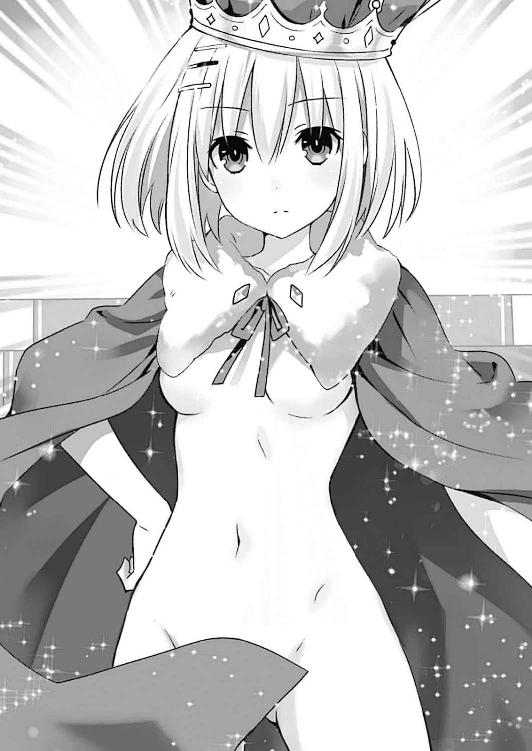
ホール中に、またもざわめきが広がる。だが、なぜだろうか、先ほどまでよりも声に無理をしている様子が窺えた。
折紙はそんな声を気にすることなく歩みを進めると、壇上まで至ってから、再び大仰に外套を翻し、宣言するように声を発した。
「彼らは私の賓客。傷つけることは許さない。持ち場に戻って」
『し、しかし』
「二度言わせるつもり？」
折紙が外套をはためかせ、腰をくねらせるようなポーズを取りながら侍従に目を向ける。すると侍従が、怯えたように身体を震わせた。
『ひ......っ！ も、申し訳ございません......！』
侍従がもう一度深く頭を下げ、衛兵たちとともに去っていく。
それを見届けてから、折紙が士道たちの方に向き直ってきた。
「士道、みんな、無事で何より」
「あ、ああ......おまえも......その、無事......なんだよな？」
士道が目のやり場に困りながら言うと、折紙は不思議そうに首を傾げた。
「言っている意味がわからない」
「や......その、追い剝ぎとか......遭ってないよな？」
と、士道がどう指摘したものかと言葉を選んでいると、十香がビッと折紙を指さした。
「お、折紙！ 何という格好をしているのだ！ 裸ではないか！」
瞬間、パーティーホールが騒然とする。
『あの子......なんてことを！』
『王様のお召し物に文句を付けるだなんて......処刑されるぞ！』
などという物騒な声が、そこかしこから聞こえてくる。......ここまで恐れられるとは、折紙はどんな圧政を敷いているのだろうか。まあ、折紙が物語に取り込まれた時点での話であるだろうし、彼女に責任があるとは言えないだろうけれど。
しかし折紙は、十香の言葉を気にした様子もなく、むしろ十香を哀れむように首を横に振った。
「これは、旅の仕立て屋から買った、士道への愛がない者には見えない服。これが見えないということは十香、あなたは......」
「な......っ!? ちょ、ちょっと待て！」
十香が慌てたように言って、目を凝らして折紙の身体をジッと見つめる。
「う、うむ......これは......まるで人肌のような見事な服......」
「......無理しなくていいわよ、十香」
そんな十香の肩に、琴里がポンと手を置く。
「折紙、あなた騙されてるわよ。......それ、どう見ても『裸の王様』じゃない」
「............」
折紙は琴里の言葉にしばらく固まると、外套の前を閉めた。美九が「あーん！ もうちょっと！ もうちょっとだけー！」と叫びを上げる。
『裸の王様』。確かそれは、王様が旅の仕立て屋に騙され、『馬鹿には見えない服』を買わされて大恥をかく......といったストーリーだったはずだ。これも日本人ならば一度は聞いたことがあるくらい有名な物語であるはずだが......
「まったく気づかなかった」
折紙は小さく首を横に振りながらそう言った。
「......怪しいとか思わなかったの？」
「愛を知らぬ者には見えない服と言われたら、なんだかうっすらと見えた気がした」
「そ、そう......凄いわね魔術師の想像力」
琴里が頰に汗を垂らしながら苦笑する。
「ま、まあ、ともあれこれで全員が揃ったわね。あとは、この世界から脱出する方法を探さないと。外とは体感時間が違うって話だけど、ここに吞み込まれてから、かなりの時間が経ってるし......」
言って琴里が、折紙と美九の方に目を向ける。
そして、簡単にこの世界のことを説明したのち、尋ねるように続けた。
「二人も、別の場所に飛ばされてたのよね？ ここに至るまでに、何かこの世界から脱出させてくれそうなキャラクターとか、アイテムとかを見なかった？」
折紙と美九は互いに顔を見合わせたのち、ふるふると首を横に振った。
「これといって、特に」
「私も見てませんねー。会ったのは魔女さんと漁師さんくらいです」
「そ......」
別にそこまで期待を寄せていたわけでもないだろうが、琴里が残念そうに息を吐く。
すると折紙が「でも」と言葉を続けた。
「今、私はこの国の王。国中にお触れを出すことが可能。国民に命じて、そういったキャラクターやアイテムを探すことはできるはず」
「！ なるほど......人海戦術か。確かにそれなら私たちだけで探し回るより効率がいいわね。お願いできる？」
「了解した。でも、具体的にどんなものを探せばいいの？」
折紙が問うと、それに答えるように二亜が声を上げた。
「んー、そうねぇ。結構拡大解釈上等な世界だから、お話の中で願いを叶えるアイテム扱いされてるものなんかがあれば大丈夫だと思うよ。『アラジン』の魔法のランプとか、『一寸法師』の打ち出の小槌とか。空間を移動する能力者とか、漫画とかゲームにはいそうだけど、多分前者の方が知名度高いし、探しやすいんじゃないかな」
「なるほど。理解した。すぐに──」
と。
折紙が返事をしかけた、その瞬間。
ガラスの割れる凄まじい音が鳴り響いたかと思うと、城の窓を突き破って、巨大なオオカミがパーティーホールに侵入してきた。
『き、きゃぁぁぁぁっ!?』
『怪物だぁぁっ！』
突然現れたあまりに世界観の違うモンスターに、舞踏会の参加者たちが悲鳴を上げて逃げ惑う。ホールの出口に殺到した人波に押され、琴里が手にしていた松明を取り落としてしまった。
「あ......っ！」
廃材に布を巻き付けただけの、簡素な作りの松明である。もう限界も近かったのだろう。幸い燃え広がりはしなかったものの、その代わり黒い煙を噴いて炎が消えてしまった。
途端、幻想的な明かりに照らされていた士道たちの格好が、もとの姿に戻ってしまう。
とはいえ、もはや服装など大した問題ではなかった。さらに大きな障害が、士道たちの目の前に現れていたのだから。
逃げ惑う参加者たちには目もくれず、オオカミが士道たちの方へと、のっしのっしと歩いてくる。
『よォォォォ、さっきは世話になったな子豚ちゃん共よぉぉ、よくもこのオレを小間使いにしてくれやがったなァ？』
言って、忌々しげにグルルルル......とうなり声を上げる。その言葉に、士道は眉根を寄せた。
「さっきのオオカミ......!? なんでだ、十香のきびだんごで大人しくなったはずじゃあ！」
『はッ！ あんなモン、とっくの昔に消化して、糞になっちまったよ！』
オオカミが腹をポン、と叩きながら吠えるような声を響かせる。
「きびだんごってそういうシステムなのかよ!?」
士道は思わず叫びを上げた。するとそこで、城の衛兵たちが現れ、オオカミに向かって手にした槍を向ける。
『王様、お下がりください！』
『ここは我々が！』
しかし。
『しゃらく......せェッ！』
オオカミが巨木のような腕を一振りすると、居並んだ衛兵たちが一気に吹き飛ばされ、テーブルを巻き込んで壁に叩き付けられてしまった。
「あっちゃー......さっすが有名悪役は違うねぇ。とーかちゃん、もっぺんきびだんごいっとこうか」
一度は収めた銃を抜きながら二亜が言う。十香がそれに応えるようにうなずき、腰に付けた袋に手を突っ込んだ。
「うむ、任せろ。さあオオカミよ、これでも食らうがいい！」
言って、十香がオオカミの大きな口目がけてきびだんごを投げる。
が──きびだんごはオオカミの口に届く寸前、空中で静止した。
「な......!?」
十香が狼狽の声を上げる。するとその空間に、ゆらりと黒い衣を纏った鷲鼻の老婆の姿が浮かび上がってきた。
『ケケケ......オオカミよ、油断が過ぎるのではないかぇ？』
老婆が不気味に笑い、受け止めたきびだんごを握りつぶす。
するとそれを見た八舞姉妹がハッと息を詰まらせた。
「うおっ、貴様は......！」
「驚愕。お菓子の家にいた老婆です」
すると老婆は、さらに不気味な笑みを濃くした。
『ケケケケケケ......そうさ、にっくきヘンゼルとグレーテル。あたしのお菓子の家を食べるだけ食べて、そのまま逃げおって......！ よぉく太らせてから食べるつもりだったが、もう我慢ならん。今この場で、頭からバリバリと食ってくれるわい』
『ヒャハハハハハ！ 若ェなバーさん。だが子豚と赤ずきんはオレの獲物だぜェ？』
言って、オオカミが哄笑を上げる。琴里がぐっと表情を険しくした。
「く......オオカミだけでも厄介だっていうのに、魔女までなんて......！」
『あァん？ おめェ、何か勘違いしてねェか？』
「なんですって......？」
琴里が眉根を寄せると、オオカミはニィ......と、耳まで裂けた口の端を持ち上げた。
『──誰が、これで終わりなんて言ったァ？』
と、オオカミが言った瞬間。オオカミが突き破った城の窓から夥しい量の海水が流れ込んできた。
「な......!? これは──」
そしてその海水は、パーティーホールを水浸しにしたかと思うと、急にボコボコと盛り上がり──一人の年老いた人魚の姿を作っていった。
その姿を見て、美九がビッと指を向ける。
「ああーっ！ あなたは、私の声を取ろうとした海の魔女さん！」
『......カカカ、そうさ。あんたに叩かれた頰の恨み、晴らさせてもらうよぉ。声だけじゃあない。その舌ごと引っこ抜いてくれるわ......！』
海の魔女が凄絶な笑みを浮かべる。どうやら、士道たちに恨みを持つ物語の悪役たちが手を組んだようであった。
すると今度は、ドドドド......と地鳴りのような足音がなったかと思うと、虎柄の腰巻きを身につけた巨大な鬼が、金棒を振り上げて城の壁を破壊し、ホールに入ってきた。
「む......その姿、まさか鬼ヶ島にいるという鬼か!?」
十香がハッと肩を揺らしながら言うと、鬼は牙の生えた口を歪めてみせた。
『応ともよ。いつまで経っても貴様が来ぬものだから、こちらから出向いてやったぞ』
「特に恨みもないのにきやがった!?」
士道は思わず叫びを上げた。森の魔女や海の魔女はまだわからないでもないのだが、あの鬼は口ぶりからいって、まだ十香と遭遇すらしていない様子である。
だが、それだけでは終わらなかった。次々と、城のパーティーホールに、オオカミの仲間が集まってくる。ホールの扉が開いたかと思うと、ドレスを纏った意地悪そうな女たちが三人、現れた。
『おーほほほ！ シンデレラ！ あなたが舞踏会にいくなんて生意気よォォォ！』
「シンデレラの継母と義理の姉......!? って、悪役には違いないけど、鬼とか魔女とかと同じ分類でいいのかおまえら!?」
すると今度は、小さな少年が、その場に走ってくる。
『王様は裸だ......僕がそう言ったせいで、お父さんは牢屋に入れられてしまった。......でも、それでも！ 僕は真実を訴え続ける！ 王様は裸だよ！』
「裸の王様ってそんな重い話だっけ!?」
次いで虚空に炎がボッと灯ったかと思うと、その中に、暗い目をした老婆の姿が現れる。
『我ガ孫ヨ......モットマッチヲ擦ルノダ......ソシテ我ガ下ヘ来イ......』
「マッチ売りの少女の死んだおばあちゃん、完全に悪霊になってる!?」
と、士道が叫んでいると、今度は割れた窓から無数のコウモリが入ってきて、それが寄り集まり、人の形を作っていった。次いで濡れた地面が盛り上がり、ゾンビが現れ──さらには、何と形容したらよいのかすらわからない、見ているだけで気が触れそうな怪物までもが出現する。
「こ、これは......」
「あ、これたぶんウチ。第一部・吸血鬼編のヴァンパイアと、第二部・不死王編のリビングデッドと、第三部・旧き神々編の名状しがたき方々。──銀の銃弾が異形を屠る。大人気バトルファンタジー『SILVER BULLET』、週刊少年ブラストにて好評連載中！」
「これだから少年誌のパワーインフレって奴は！」
気楽そうに言ってくる二亜に、士道は悲鳴じみた声で返した。
気づけば広いパーティーホールには、異形の怪物や悪役たちが勢揃いしていた。しかもそれらが士道たちを逃がさぬよう円状に展開し、じりじりと距離を詰めてくるのである。
「く......！」
先ほどの衛兵たちとは比べものにならないプレッシャー。しかしそれも当然だった。一部例外こそあるものの、今士道たちを取り囲んでいるのは、名だたる物語の悪役や怪物たちなのである。しかもこちらは、天使を使うことができないというおまけ付きだ。身体は速やかに生命の危機を察知し、その信号を激しい心拍に変えてそれを脳に伝えようとしてきた。
「おのれ、負けるか......っ！」
皆が緊張と焦燥に表情を険しくする中、叫びを上げたのは十香だった。手にした刀を閃かせ、床を蹴って、目の前の鬼に飛びかかる。
「とりゃぁぁぁっ！」
しかし、その一撃が鬼に届く寸前、左右にいた魔女たちが魔法を放ち、十香を攻撃した。光の弾が十香の身体に着弾し、小さな爆発を起こす。
「ぐわっ!?」
空中で双方向から攻撃を受け、十香が苦悶の声を上げる。するとその隙に、前方にいた鬼が巨大な金棒を振り上げ、十香の身体目がけてブンと振り抜いた。
『ははははッ！ 甘いな、桃太郎！』
「ぐ......っ！」
十香は咄嗟に刀でその一撃を防御したようだったが、踏ん張りの利かない中空では攻撃を受け止めようがなかった。十香の身体が叩き伏せられ、海水で満たされた床に叩き付けられる。
「十香！」
士道は十香の名を呼ぶと、慌ててそちらに駆け寄ろうとした。が──
『おォっと、よそ見は危険だぜェ、子豚ちゅわァァァン？』
その瞬間、頭上からオオカミの声がしたかと思うと同時、腹部を凄まじい衝撃が襲った。
「ぐは......っ!?」
一瞬遅れて、脳が理解する。どうやら士道は、オオカミの巨木のような腕に薙ぎ払われてしまったらしい。士道の身体は軽々と吹き飛ばされると、ホールの壁に叩き付けられ、そのまま床に落ちていった。
「く......あ......」
「士道！」
「し、士道さん......！」
精霊たちが心配そうな声を上げ、士道のもとに向かってこようとする。しかし、それを遮るようにオオカミたちが道を塞いだ。
『おォーッと残念、ここは通さねェよ』
「ぐ......！」
「よ、四糸乃......」
「だ......大丈夫です、七罪さん......！」
精霊たちが悔しそうに、あるいは不安そうに身を寄せ合う。
居並ぶ悪役たちはそんな様子を見てか、ニィィ......と笑みを浮かべながら、精霊たちに迫っていった。
『さァ......観念しなァ！』
『ケケケケケケ......安心おし。ちゃぁんと美味しく食べてあげるからねぇ』
『くふふ、人魚の舌はどんな声で鳴くのかねぇ......』
「き、きゃあ......っ！」
美九が口元を押さえながら、ちゃぷんと水音を立てる。
とはいえ、戦慄しているのは美九だけではなかった。反応は様々であったけれど、皆一様に頰に汗を光らせ、迫り来る怪物たちを睨んでいる。
「く......てめぇらッ！」
士道はどうにか上体を起こすと、うめくように叫びを上げた。
「みんなに......手を出すなっ！」
しかし、強く壁に打ち付けられた身体は、士道の思い通りには動いてくれなかった。足に力が入らず、再び水音を立ててその場に倒れ込んでしまう。
「ぐぁ......ッ！」
士道は顔をしかめながらも、痛みを堪えるように奥歯を嚙みしめた。そしてどうにか動く上体を使い、床を這って精霊たちのもとへと進んでいく。
だが──遅い。物語の悪役たちは既に精霊たちににじり寄り、その手を精霊たちの首に掛けつつあった。
『ヒャッハハハハハァ！ まずはてめェからだァ！』
「きゃ......っ！」
「よ、四糸乃っ！ この......何すんのよ犬ッコロ！」
オオカミが爪を器用に操り、四糸乃の身体を摘まみ上げる。七罪がオオカミの足に組み付くも、オオカミは意に介さぬまま、四糸乃を矯めつ眇めつ眺め回した。
『んンー......美味しそうでちゅねェ赤ずきんちゃんよォォォ？』
「ひ......っ！」
『わきゃー！ よしのんたちなんて食べたらお腹壊すよー!?』
「く......！」
──このままでは、間に合わない。士道の心臓が、焦燥に激しく脈打った。
否......たとえ間に合ったとしても、士道にできることなどたかが知れているだろう。せいぜいが、時間稼ぎくらいだ。先ほどと同じようにオオカミに吹き飛ばされ、四糸乃が食べられてしまうのを数秒遅らせる程度に過ぎない。
それを自覚した瞬間──
不意に、士道の頭の中を、通信機越しに聞いた六喰の言葉が過ぎった。
（──仮にむくの力を封印したとして、むくは本当に、ここにいるよりも安全に暮らせるのか？ 今までうぬが救ったという精霊たちは、敵に一度も襲われなかったのか？）
「......ッ──」
思わず、十香たちに向けて伸ばしていた手が一瞬、止まる。
「俺......は......っ」
士道が今まで霊力を封印してきた精霊たちが、異形の怪物たちに襲われる光景。
それを作ってしまった原因の一つは、他ならぬ士道自身なのではないかという考えが、頭を掠めてしまったのである。
もしも士道が彼女らの霊力を封印していなければ、皆ウェストコットの〈神蝕篇帙〉には囚われなかったかもしれない。
否、それだけではない。確かに六喰の言うとおり、今まで十香たちは、様々な危険に巻き込まれていたのである。
士道は、精霊たちを救うために、霊力を封印し続けてきた。だがそれによって士道は、彼女たちの可能性を消してしまったのではないだろうか。
胸に抱いていた確信に、ヒビが入るかのような感覚。
自分のしてきたことは、本当に正しかったのだろうか。そもそも『精霊を救う』だなんて、六喰の言うとおり士道のエゴだったのでは──
『──おいおい。そんなところで悩むなんて、らしくないんじゃないか？』
と。
そのとき。まるで士道の頭の中を見透かしたかのような声が、どこからか聞こえてきた。
「え......？」
『あァン？』
士道の戸惑いと、オオカミの不審そうな声が重なる。
『なんだァ？ この声は──』
オオカミは片手で四糸乃を摘まみ上げたまま、どこからか響いた声の主を探すように、訝しげに視線を巡らせた。
すると、オオカミの視線が四糸乃から外れた、まさにそのとき。
『......!? なァ......ッ!?』
オオカミの腕に線が走ったかと思うと、その腕が斜めに両断された。
『な、なんだ、こりゃァッ！』
「きゃ......！」
オオカミの狼狽の声が響くのと同時、四糸乃の小さな身体が、オオカミの腕ごと床に向かって落下する。
すると、その身体が床に着く寸前。
『──っと、大丈夫か、四糸乃』
そこに一人の少年が現れ、四糸乃の身体を優しく受け止めた。
「えっ？ あ、あの......」
四糸乃が困惑したような顔をして、少年の顔を見上げる。
否、四糸乃だけではない。
「へ......？」
「ど、どういうこと？」
他の精霊たちも──そして、士道も、ぽかんと目を見開いてその少年の姿を見つめていた。
とはいえそれも当然である。何しろその少年が握っていた剣は、間違いなく十香の天使〈鏖殺公〉であり──
『さあ、悪役ども。俺が相手をしてやる。この精霊の守護者──五河士道がな』
不敵にそう言ったその顔は、どこからどう見ても、『士道』そのものであったのだから。
『な......なんだァ、てめェ！ いきなり現れてふざけたこと言ってンじゃ──』
オオカミが斬られた腕を見下ろしながら、『士道』を睨み付ける。
が、次の瞬間。『士道』が〈鏖殺公〉を振り抜いたかと思うと、オオカミの巨体が綺麗に両断された。
『が......ガァァァァァァッ!?』
凄まじい断末魔を残し、二つに分かたれたオオカミの身体が、千切れた本のページとなってヒラヒラと地面に落ちる。
それを見て、残った悪役たちがひっと息を詰まらせた。
『な......！ オオカミが!?』
『あんた......何者だい！』
二人の魔女が戦慄を声に乗せて、叫ぶ。すると『士道』はニッと唇の端を上げた。
『通りすがりの高校生さ』
『士道』はそう答えると、濡れた床を蹴り、〈鏖殺公〉を振るって、悪役たちの方へと向かっていった。
魔女の魔法をはじき飛ばし、金棒を容易く切断し、その勢いのまま、鬼の巨体に風穴を開ける。鬼はオオカミと同様地を震わすような絶叫を上げ、破れた本のページへとその姿を変えた。
しかし、それでも『士道』の快進撃は止まらない。軽やかに、それでいて力強く、〈鏖殺公〉を手足のように操って、居並ぶ悪役たちと戦いを繰り広げていく。
その様子を、士道は半ば呆然と眺めていた。
「な、何なんだ、これ......」
「シドー！」
と、士道がポカンと口を開けていると、前方から十香たちが駆け寄ってきた。
「大丈夫か、シドー。怪我は!?」
「あ、ああ......平気だよ。それより、あれは一体......」
士道が困惑しながら、悪役たちと戦いを繰り広げる『士道』に再度目をやると、琴里が同様に眉根を寄せてきた。
「どう見ても士道......よね。士道、あなた分身の術とか使えたの？」
「いや、忍者に弟子入りした覚えはないけど......」
士道が答えると、二亜が「うーん......？」と訝しげにあごに手を当てた。
「ていうかあの少年二号、もしかして『この世界』のキャラクターなんじゃないかな？」
「え......？」
二亜の言葉に、士道はまたも訝しげに眉根を寄せた。
確かにそれならば理屈は通る。だが、そうなるとまた別の疑問が浮かんでくるのである。
それはそうだ。ここは数多の物語が混じり合った幻想の空間。士道が登場人物となった物語でもない限り、キャラクター『士道』など存在するはずが──
「あぁぁぁっ！」
と。士道がそんなことを考えていると、不意に七罪が大声を発した。
「な、なんだ、七罪」
「......し、知ってる......！ 私、あいつ、知ってる......！」
七罪が、震える指で悪役たちと大立ち回りを演じる『士道』を指さす。
「なんだって......？ 本当か、七罪！」
「ほ、本当よ。ていうか......みんなだって知ってるはずでしょ！ だってあいつ......あの『士道』、つい先月、私たちが描いたじゃない！」
「──っ!!」
言われて。
士道と精霊たちは、ハッと息を詰まらせた。
──そう。あったのだ。
存在するはずがないと思っていた物語が。
五河士道を主人公とした物語が。
士道たちは先月、二次元にしか恋をしたことがない、と言い放った二亜をデレさせるために一計を講じた。それが──『士道』を主人公とした漫画を描き、二亜に読ませる、というものだったのである。
「で、でも......あれは同人誌じゃないか！ そんな主人公が助けに来てくれるなんて、いくらなんでも都合が良すぎないか!?」
士道が言うと、二亜がゆっくりと首を横に振った。
「うんにゃ......言ったっしょ、少年。創作物に垣根はないって。一度創造された物語であれば、この世界には存在している可能性があるんだ。しかも、今ここにはそれを描いた『作者』が全員揃ってるときたもんだ。キャラクターを呼び寄せる『縁』としては最上級だよ......！」
自らの漫画のキャラクターの姿をした二亜が、少し興奮した様子で続ける。
「しかもあの少年二号は、『五河士道』であって『五河士道』ではない。あの同人誌に描かれた、精霊を救うことに、そしてその姿を見せることによってあたしをデレさせることに特化した『五河士道』なんだ！」
「つ、つまりどゆこと？」
「要請。説明を求めます」
捲し立てるように言う二亜に、八舞姉妹が首を捻る。すると二亜は、バッと手を揚げながら続けた。
「つまり！ 簡単に言うとあれは──みんなが思い描いた、『超格好良くて超強い少年』ってこと！」
二亜が叫ぶと同時、『士道』が〈鏖殺公〉を振り抜き、最後に残っていた二亜の漫画の敵キャラクターを屠った。
『ふぅ......』
そして、軽やかに髪をかき上げ、士道のもとにゆっくりと歩いてくる。
『よ、大丈夫だったか、「俺」』
「あ、ああ......」
普段他人に使われることのない呼び名に戸惑いながらも、士道は言葉を返した。
「助かったよ、ありがとう......『俺』」
『はは、こうやって呼び合うとまるで狂三みたいだな』
言って、『士道』が笑う。まるで鏡でも見ているかのような奇妙な感覚に、士道は思わず苦笑した。
『しかし......災難だったな。「俺」たちがこの世界にいるってことは──ウェストコットの仕業だろう？』
『士道』が少し視線を鋭くしながら言ってくる。
士道が二人いるという自体に少々戸惑いを見せながらも、琴里がこくりとうなずいた。
「......ええ。そこまでわかってるなら話は早いわ。──何か、もとの世界に戻る方法に心当たりはない？ 私たち、一刻も早く戻らないといけないの」
すると『士道』は、こともなげにうなずいてみせた。
『ああ、それなら俺に任せろ』
「へっ!?」
琴里が素っ頓狂な声を上げる。しかしそれもそうだろう。『士道』の言葉はあまりに気安く、ともすれば聞き流してしまいそうですらあった。
「で、できるの、そんなこと」
琴里が問うと、『士道』は手にした〈鏖殺公〉を示しながら答えた。
『ああ。この空間は天使の力で作られた世界だからな。同じく天使の力でなら打ち破れるはずだ。如何に存在が虚構でも、この世界の中でなら、俺が使える天使は本物だからな』
でも、と『士道』が続ける。
『俺ができるのは、あくまでこの世界の出口を作ることだけだ。となると、みんなは向こうの世界に戻った瞬間、ウェストコットの真ん前にいるってことになりかねないぞ』
「な......！」
『士道』の言葉に、琴里が目を見開く。
「そんな......じゃあどうしろっていうのよ。私たちは今すぐにでも六喰のところにいかないといけないっていうのに──」
と、琴里が表情を戦慄の色に染めたところで。
「──こんなこともあろうかと！」
その声を遮るように、二亜が不意に大声を上げた。
「な、何よ二亜、突然......」
「えっへっへ。一回言ってみたかったんだよねーこの台詞。どう？ デキる女っぽい？」
「......冗談ならあとにしてくれない？」
琴里が半眼で言うと、二亜が「あー、ごめんごめん」と頭をかいた。
「ちゃんと用意はあるのよん。──少年二号、チャンネルの心配はいらないから、ずばっとやっちゃってくれない？」
「ちょっと、何言ってるのよ二亜。いくらもとの世界に戻れたって、ウェストコットの前に出たんじゃ元の木阿弥じゃない！」
「ちっちっち、それが違うんだなー」
二亜が指をメトロノームのように動かし、ニッと唇を笑みの形にする。
「あたし、ここに吞み込まれる寸前、向こうの世界で〈囁告篇帙〉を顕現させておいたんだ。──〈神蝕篇帙〉と〈囁告篇帙〉は表裏一体。もちろん、この世界とのチャンネルの役割も果たしてくれるはずだよ」
「......！ ってことは──」
士道が言うと、二亜がこくりとうなずいた。
「そ。あいつがもとの場所でずっと待ち構えてでもいない限り、鉢合わせする可能性は低いってこと」
言って、二亜がウィンクをしてみせる。精霊たちが『おおっ！』と色めき立った。
「すごいぞ、二亜！」
「かか、やるではないか！」
「賞賛。ただの飲んだくれではなかったのですね」
「いやはは、照れるぜ。もっと褒めておくれ」
二亜が得意げに胸を反らす。
すると『士道』が〈鏖殺公〉を担ぎ上げるように構えると、士道たちに視線を送ってきた。
『よし、なら今すぐやっちまっていいんだな？』
「ええ、お願い」
琴里が言うと、『士道』は小さく首肯し、意識を集中させるように目を伏せたのち──
『──はぁっ！』
裂帛の気合いとともに、〈鏖殺公〉を振り抜いた。
瞬間、辺りに風が吹き荒れ──〈鏖殺公〉の刃が振られた空間に、人一人が通れるくらいの『亀裂』が生じる。
『ここを通れば、もとの世界に戻れるはずだ』
『士道』が〈鏖殺公〉の切っ先を床に当てながら、ニッと微笑んでくる。
『──さっき言ってた六喰っていうのは、新しい精霊だよな？ がんばれよ、「俺」。きっと、その子を救ってあげてくれ』
「......、──」
ウッドマンの別れ際の台詞にも似た『士道』の言葉に、士道はどくん、と心臓が脈動するのを感じた。
「......？ 何してるの、士道。行くわよ」
黙りこくっている士道を不思議そうな顔で見て、琴里が皆を亀裂の方へと誘導する。
「──助かったわ、『士道』。あなたも、元気で」
『ああ。「こっち」のおまえたちにも、よろしく伝えておくよ』
「はは......そっか、あの同人誌のキャラがいるってことは、私たちもいるのか。なんだか複雑な気分ね」
琴里は苦笑しながらそう言ってから、「じゃあ」と手を振って、意を決したように『亀裂』に身を投じた。
それに続くように、精霊たちが次々と、『士道』に別れを済ませて『亀裂』へと吸い込まれていく。
そして──全員がもとの世界へと戻ったのち、『士道』が士道に視線を向けてきた。
『さ、最後は「俺」だ。早くいってやりな、琴里たち、待ってるぜ』
「あ、ああ......」
士道は言われるままに『亀裂』の前に向かい──
しかし、そこで足を止めた。
──『士道』。
士道が、そして精霊たちが作り出した、『虚構の士道』。
そして──精霊を助けることに特化した、『理想の士道』。
そんな『士道』を前にした士道の心の裡には、一つ、小さな欲求が芽を出してしまったのである。
割り切ったはずの事象。振り切ったはずの葛藤。しかしそれは、未だに澱のように士道の心の底に沈澱していた。
「なあ......『俺』」
『うん？ どうした、「俺」』
「......おまえがさっき予想したとおり、俺は今から、六喰っていう新しい精霊のところにいくんだ。でも──」
士道は軽く顔をしかめながら、辿々しく六喰のことを話した。
にべもなく拒絶されたこと。救いを求めていない自分に関わるなと言われたこと。そして──士道が、それに返すことができなかったことを。
『............』
『士道』はそれを真剣な眼差しで聞くと、やがてふうと息を吐いた。
『なるほどな......そりゃあまた、気難しそうな精霊だ』
「......俺、思っちまったんだ。さっきみんなが敵に襲われてたとき、もしも俺がみんなの霊力を封印してなければ、こんなことにはならなかったんじゃないかって。......いや、もちろん、そうしていなきゃあいつらがもっと辛い目にあってたってことはわかってるんだ。でも......」
考えが上手く纏まらない。士道は髪をくしゃくしゃと搔き毟りながら続けた。
「......六喰の力を封印する。その方針に文句があるわけじゃない。そうしないとＤＥＭがまた攻撃を始めちまう。でも、どうすればいいかわからないんだ。......どう思う？ 俺に──六喰に返す言葉を未だに持ってない俺に、もう一度六喰の前に立つ資格があると思うか？ 鍵の掛かった六喰の心を開けることが、できると思うか......？」
士道が言うと、『士道』はしばしの間考えを巡らせるような仕草を見せたのち、口を開いてきた。
『──俺なら、行くぜ。もう一度な』
「でも、六喰は平穏を望んでるのに......」
『確かにそうかもしれないけど......よく考えるとおかしくないか？ 心に鍵を掛けたから一人でも寂しくない、って。そんなの、天使の力を使って心に鍵を掛けないと耐えられないくらい寂しかったって言ってるように聞こえるぜ？』
「......っ、それは......」
確かに、その通りである。
六喰が最初から、孤独も悲哀も怒りも感じないのであれば。
わざわざ心に鍵を掛ける必要などなかったはずであるし──それを士道に言う必要もなかったはずだ。
『その言葉、俺には、本当の六喰のＳＯＳに聞こえてならないよ。だから、行く。口で何を言われようとな。それに......六喰の閉じた心を開ける「鍵」ならもう、「俺」は持ってるじゃないか』
「え......？」
『士道』の言葉に、士道は首を傾げた。
しかし一拍置いて、その言葉が何を示しているかを察する。
「......！ まさか──」
『ご名答』
士道のリアクションに、『士道』が満足げにうなずく。
『でも、もう一つ。それを別に考えたとしても、だ』
『士道』はそう言うと、士道の胸にトン、と拳を当ててきた。
『──「俺」は、どう思ってるんだよ。さっきから話すのは六喰のことばかりじゃないか。相手のことを考えるのは大変結構だが、そればっかりじゃ相手の気持ちに気づけないことだってあるんだぜ。
──なあ、「俺」。
「俺」は、六喰を、どうしたいんだ？』
「......ッ！」
『士道』に言われ。
士道は、ハッと息を詰まらせた。
そして数秒の間無言になったのち、大きく息を吸い──吐き出した。
「......、ああ──そう......だな」
言葉を、ゆっくり、ゆっくりと発する。
質問の答えとしてはあまりに短い言葉。しかしそれは、口から出ると同時、今まで肺腑に満ちていた鬱屈した空気を外に誘い出してくれるかのような感じがした。
そんな士道の様子を察したのだろう、『士道』が、ニッと笑みを浮かべてくる。
『──頑張れよ、高校生』
「......そっちもな、通りすがりの高校生」
士道は『士道』と拳を合わせると、そのまま空間に生じた『亀裂』に飛び込んでいった。
◇
「............うっ」
──肩をゆさゆさと揺すられる感覚で、士道は意識を取り戻した。
小さく呻きながらうっすらと瞼を開ける。と、目の前に平手を振りかぶった琴里の姿が見えた。
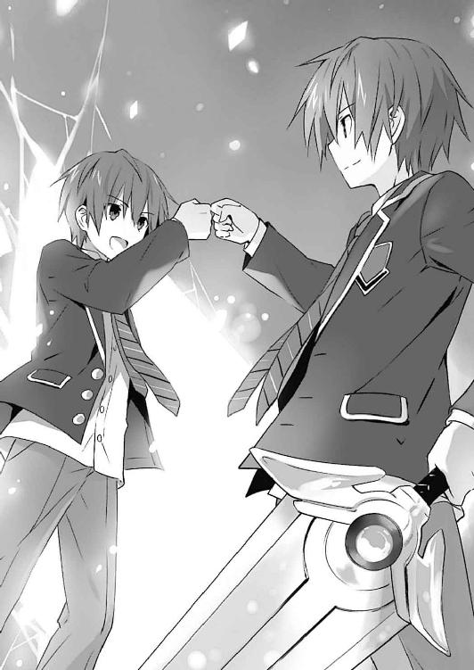
「......何してんだ、琴里」
「あら、起きたわね。あと一秒遅かったら二〇発目いってたところだったわ」
「......って、一九発も叩いたのかよ!?」
士道が頰を押さえながら叫びを上げると、琴里が「冗談よ」と肩をすくめた。
士道は触れた頰に痛みがないことを確認しつつ、周囲の様子を見回した。先ほど目覚めたような藁の家ではなく、壁や天井のあちこちが崩れた基地内の廊下である。琴里の他にも精霊たちが勢揃いしており、十香が士道の肩を揺するように手をおいていた。皆ツギハギのされた服やドレス姿ではなく、普通の装いに戻っている。
「まったく......時間がないって言ってるのに、何をもたもたしてたの？」
琴里が腕組みをしながらフンと息を吐いてくる。
「ああ......悪い。でも──」
士道はぐっと足に力を入れてその場に立ち上がると、気合いを入れるようにパン！ と両手のひらで頰を叩いた。
「──もう、大丈夫だ」
「......？ そう。まあ、やる気があるのはいいことだけれど」
琴里が不思議そうに首を傾げる。しかしすぐに、こんなところで時間を潰している場合ではないと判断したのだろう、あごをしゃくって皆を促してきた。
「それよりも、急ぐわよ。思ったより時間は経ってないみたいだけど、〈フラクシナス〉が襲撃されてる可能性もあるわ」
「うむ！」
「了解した」
精霊たちが首肯し、琴里のあとにつくように廊下を走っていく。士道もそれに倣って床を蹴り、未だ爆音や銃撃音の鳴り響く基地内を進んでいった。
そして、〈バンダースナッチ〉と遭遇し、これを撃破すること二度。士道たちはようやく、〈フラクシナス〉の格納庫へと辿り着いた。
すると外部カメラでそれを認めたのか、士道たちが格納庫に入るなり、スピーカーから神無月の声が流れてくる。
『──！ 司令！ ご無事で何よりです！』
「ええ。待たせたわね」
琴里は小さく手を上げてそれに答えると、艦体の下まで歩いていった。士道と精霊もそれについていき──先ほどと同じ要領で、一瞬にして艦橋まで転送される。
「──状況は？」
艦橋に入るなり、琴里がカツカツと歩きながら、きっちりと着込んでいたジャケットのボタンを外し、肩掛けにし直す。次いで右手をすっと横にやると、そこに控えていた神無月が恭しく礼をしながら、ホルダーに入ったチュッパチャプスを差し出した。
琴里がそれを受け取り、包装を解いて口に放り込みながら、艦長席に腰を落ち着ける。その流れるような動作に、なんだか奇妙な感慨を覚えてしまう士道であった。
「は。現在基地上空に、〈アルバテル〉級空中艦が一隻滞空。基地内に侵入した魔術師及び〈バンダースナッチ〉は、一二〇ほどと思われます。機関員の死傷者は現在報告されているもので二一名。避難が確認されているのは一八五名です」
「......、なるほど」
琴里が苦々しげに呻くと、モニタに『ＭＡＲＩＡ』の文字が表示された。
『落ち込んでいる暇はありませんよ、琴里。今はあなたのすべきことを』
「ええ、わかってるわ」
琴里は静かに息を吐くと、決意を持って未練を振り払うように顔を上げた。
「──私たちは、私たちの仕事をするわよ。〈フラクシナスＥＸ〉、発艦用意。準備はできてるでしょうね？」
『はっ！』
琴里の言葉に、クルーたちが一斉に答える。
「しかし、敵の攻撃によって格納庫の電気系がやられてしまったらしく、ハッチが開閉しません」
「ち、仕方ないわね。──ブチ破るわよ」
言って、琴里がバッと手を掲げる。
「基礎顕現装置並列駆動、随意領域展開、不可視迷彩及び自動回避発動」
「了解。基礎顕現装置、並列駆動を開始します」
「随意領域、展開。──いつでもいけます」
クルーの声と同時、艦体のどこかから響いていた微かな機械の起動音が、さらに大きなものとなる。
琴里は小さくうなずくと、ちらと後方の士道たちに視線を寄越してきた。
「行くわよ。念のため、何かに摑まってて」
「ああ、わかった」
士道は首肯し、壁際の柱に摑まった。精霊たちもそれに倣ったが、折紙と二亜がそれぞれ士道の身体にはしっと摑まった。結局十香たちに引き剝がされた。
琴里がやれやれと息を吐いてから顔を前方に戻し、声を張り上げる。
「──〈フラクシナスＥＸ〉、発進！」
すると、その声に応えるように艦体がゴウンと揺れ──メインモニタに映し出されていた格納庫の内壁が、見えない圧力によって内側から押し潰されるように円形にひしゃげた。
そして、奇妙な浮遊感が艦橋全体を包んだかと思うと、次の瞬間、メインモニタに映し出されていた風景が、一瞬にして空へと変貌する。
「うお......っ」
士道は足を踏ん張りながら、喉から声を漏らした。
顕現装置を用いた空中艦は、飛行機のように揚力を得て飛行するのではなく、艦全体を随意領域で覆うことによってその巨大な艦体を浮遊させる。ゆえに、このような常識を無視した軌道を描いて空に舞うことができるのである。
と──モニタに映し出された空に、大きなシルエットが認められると同時、艦内にアラームが鳴り響いた。
『基地上空に敵空中艦を確認。どうしますか？』
スピーカーからマリアの声が響いてくる。琴里は眉を歪めながらチュッパチャプスの棒をピンと立てた。
「今は一刻も早く宇宙へ向かわなければならないわ」
『はい』
「たとえ今以上に甚大な被害が出るとわかっていても、あんなものに時間を取られるわけにはいかないの」
『はい』
「私が何を言いたいか、わかるわね、マリア」
『はい』
マリアが淡々と答える。琴里はチュッパチャプスの棒を指で挟み込むと、ビッと前方に向けてみせた。
「──一分でケリをつけなさい」
『それでこそ、琴里です』
マリアが心なしか嬉しそうに言うと、琴里はクルーに指示を発した。
「〈世界樹の葉〉、一号から一三号まで射出、阻害モードにて敵随意領域内に侵入させたのち、機雷モードに属性変更」
「了解。〈世界樹の葉〉、一号機から一三号機まで、射出します」
サブモニタに表示されていた〈フラクシナス〉のシルエット。その後部に描かれた大樹の枝のようなパーツが赤く点灯する。
するとそれに次いで、メインモニタに映し出されていた空を、複数の『何か』が飛んでいった。
『何か』と表現したのは単純な理由で、『それ』が不可視迷彩を纏い、士道の目に見えなかったからである。しかし透明化した〈世界樹の葉〉が高速で敵艦に飛んでいくと、それが描く軌跡が、微かに歪んだように見えたのだった。
数秒後。前方に浮かんでいたＤＥＭ艦の至るところで、一斉に爆発が起こる。
恐らく敵は、自分たちが何をされたかすらわかっていないだろう。哀れＤＥＭ艦は、盛大に煙を噴いて地面へと墜ちていった。
「ふん」
琴里が親指をビッ、と下に向ける。
『所要時間、五二秒です』
「まぁまぁね。──遅れを取り戻すわ。高度上昇、一気に大気圏を抜けるわよ」
「はっ！」
クルーが応えると同時、〈フラクシナス〉の艦体が微かに振動したかと思うと、メインモニタに映し出されていた景色が、冗談のような速度で下方に流れていった。まるで、気球に乗せたカメラからの映像を早送りしているかのような光景である。
数分とかからず──メインモニタの風景は、空を眼下においた。
漆黒の空間が画面いっぱいに広がり、地上からはお目にかかれないくらいの星が煌めきを放つ。
先刻、自律カメラを通して見たのと同じ光景である。士道はごくりと息を吞み、辺りを探るように移動するカメラの映像を凝視した。
すると──そこに。
金色に輝く長い髪をたゆたわせながら、静かに眠る少女の姿が、あった。
「......！ 六喰......！」
士道はぐっと拳を握り込むと、その名を呼んだ。
まさかその声が艦外に届いたわけではあるまいが、六喰の眉が、ぴくりと動く。
『............ふむん？』
そして六喰はゆっくりと瞼を開くと、〈フラクシナス〉の方に視線を寄越したのち、胎児のように丸めていた身体を伸ばした。
『......おや、まあ。今日は随分と客が多いのう』
〈フラクシナス〉が外部の音声を拾っているのだろう、小さな──しかし確かな六喰の声が、スピーカーを通して聞こえてくる。
通常、真空の宇宙空間では伝わるはずのない、声。
しかし霊装が随意領域の役割を果たしているのだろう、六喰の声は、静かに、しかしはっきりと士道の鼓膜を震わせてきた。
『警告はしたはずじゃがのう。......先ほどの連中とは別口かの？』
六喰は『んん......』と伸びをしたかと思うと、右手を掲げ、唇を小さく動かした。
『──〈封解主〉』
その言葉と同時、虚空から鍵のような形をした錫杖が現れ、六喰の手に収まる。
そして、六喰が〈封解主〉の先端を空間に突き刺したかと思うと、
「──【開】」
鍵を捻り、そこに大きな『扉』を作った。
六喰が手を掲げ、振り下ろすと、辺りに浮遊していた無数の宇宙の塵がその『扉』に吸い込まれていく。
次の瞬間、〈フラクシナス〉の周囲に『扉』の出口が幾つも開いたかと思うと、そこから一斉に、夥しい数の『弾丸』が降り注いできた。
「う、うわっ!?」
士道は飛来する無数の礫に、思わず身を竦ませた。
しかし、琴里は慌てることなく、即座に指示を発する。
「随意領域、防性特化！」
「はっ！」
サブモニタに表示されていた〈フラクシナス〉の図が淡く光る。
するとそれと同時、〈フラクシナス〉に向かって飛来していた無数の礫が、〈フラクシナス〉の艦体に触れる寸前で、弾かれるように砕け散った。
「こ、これは......」
「天使で直接攻撃されるならまだしも、こんな豆鉄砲じゃ、進化した〈フラクシナス〉には傷一つ付けられないわよ」
琴里はふふんと得意げに言うと、艦長席をくるりと回転させ、士道の方に向いてきた。
「さあ、士道。ここからが正念場よ。覚悟はいい？」
「──ああ。もちろんだ」
士道が決意を滲ませながら力強くうなずくと、琴里が少し意外そうに目を丸くした。
「向こうの『士道』と何を話してきたか知らないけれど、いい顔になったじゃない。──よろしい。じゃあ作戦を開始するわ」
言って、琴里がサブモニタを示すようにあごをしゃくる。そこに表示されていた〈フラクシナス〉の画像から、円形の図が広がっていった。
「これから〈フラクシナス〉の随意領域を六喰の位置まで広げるわ。これによって、士道は空気や宇宙線の心配もなく、生身で活動できるようになるはずよ。──さすがにデートに宇宙服なんて、ナンセンス過ぎるからね」
冗談めかすように肩をすくめ、琴里が続ける。
「基本的な姿勢制御や防御なんかはこっちに任せてもらって構わないわ。さっきの攻撃くらいなら、随意領域で阻めるはずよ。士道はどうにか六喰に近づいて、攻略を開始してちょうだい」
「............」
士道はメインモニタの中央に浮遊した六喰の姿をもう一度見つめ直してから、小さく息を吐き、うなずいた。
と──そこで。
「......あ、あのさ」
四糸乃の陰に隠れるように立っていた七罪が、不意に声を上げた。
「ん、どうしたのよ七罪」
「......いや、別に、あれだったらいいんだけど。......なんか相手、物騒っぽいし、私たちもいた方がいいんじゃないか......とか、思ったり、思わなかったり......」
琴里が問うと、七罪が視線を合わせないようにしながら、辿々しくそう言ってきた。
するとそれに触発されたように、精霊たちが次々と声を上げ始める。
「あ、あの、私も......お力になれれば。もし六喰さんが随意領域で防げない攻撃をしてきても、〈氷結傀儡〉なら......！」
「あらー、それはグッドアイディアですねー。私の〈破軍歌姫〉の音の壁も役に立つかもしれませんしー」
「おお！ ならば私も行くぞ！」
などと口々に言って、琴里に訴えかけるような眼差しを送る。
琴里はしばしの間困ったような顔をしていたが、やがて諦めたようにはあとため息を吐いた。
「......仕方ないわね。でも、出るのはあくまで士道がピンチになったらよ。これは一応六喰をデレさせるための作戦なの。いきなり大人数でいったら、向こうを警戒させちゃうでしょうし」
「おお！」
琴里の言葉に、精霊たちが大きくうなずく。士道はその団結感に、思わず苦笑した。
「ありがとうな、みんな。......でも、できるだけみんなの手は借りないようにするよ。可能なら、それが一番だもんな」
そして、しっかりとした足取りで、先ほど艦橋に転送されてきた装置の上に立つ。
「じゃあ、琴里。よろしく頼むよ」
「ええ。すぐに転送を──」
が──琴里が言いかけた、次の瞬間。
突然、艦橋に赤いランプが灯ったかと思うと、ビーッ、ビーッというけたたましいアラーム音が鳴り響いた。
「何ごと!?」
「......！ これは......敵です！ 地球より、ＤＥＭ艦が三......四隻！」
箕輪が叫ぶと同時、モニタに巨大な艦影が複数、映し出された。
それを見て、琴里が忌々しげに顔を歪める。
「......バッドタイミング。予想はしてたけどやっぱり来たか。でも、さっきみたいな雑魚が何隻来たところで......」
言いかけて、琴里がぴくりと眉を動かした。
モニタに映し出された四隻の艦のうち、最も小さな艦影を見つめ、表情を険しく──それでいて微かな興奮が滲むものに変貌させる。
流線型のフォルムが特徴的な、白金の艦体。周囲の無骨な三隻と比べると、明らかに異質な形をした艦である。
この場に現れた以上それが戦闘を目的とした空中艦であることは間違いないのだが、その優美な様は、あたかも貴人のために誂えられた儀礼用のものであるかのようにさえ見えた。
琴里が、チュッパチャプスの棒を揺らしながら、その名を口にする。
「〈ゲーティア〉......！」
「な......！」
その名前に、士道は目を見開いた。
〈ゲーティア〉。直接目にするのは初めてであるが、その名は琴里から嫌というほど聞いていた。
エレン・メイザースの専用艦であり。恐らく世界最高峰の高速機動艦。
そして──『前の世界』で、〈フラクシナス〉を墜とした空中艦である。
琴里が、頰に汗を滲ませながらぺろりと唇を舐める。
「......お誂え向きじゃない。新生〈フラクシナス〉発艦の日に、リベンジマッチが組まれるなんて」
「大丈夫なのか......？」
士道が微かに眉根を寄せながら言うと、スピーカーからマリアが答えてきた。
『心配ご無用です。前の私とは違います。思い知らせてあげます。──世界一の空中艦の名を』
「よく言ったわ、マリア」
琴里はニッと唇を笑みの形にすると、クルーに指示を発した。
「二重随意領域を展開して！ 第一層をポイント六二二まで拡大、属性は空間制御に設定。第二層は防性に設定！ 戦闘に備えるわよ！」
『──はっ！』
クルーたちがその声に応え、コンソールを操作し始める。
琴里はそれを見届けてから士道の方に向き直ると、グッと親指を立ててきた。
「じゃあ、六喰のことを頼んだわよ、士道。武運......じゃないわね、この場合。
──女運を祈るわ」
「はは、なんだよそれ」
琴里の奇妙な──しかしこの上なくこの状況に相応しい送り言葉に、士道は思わず頰を緩めた。
「琴里も。どうか無事で」
「ええ」
琴里の短い返答ととともに──士道の身体は艦外へと転送された。
視界が艦橋の中から一瞬にして宇宙空間へと変貌し、浮遊感が全身を包む。
「おお......っ!?」
士道は思わず声を発した。突然身体が重力から解き放たれ、その場で回転してしまいそうになる。
だが、琴里の言うとおり、まるで見えない手に支えられているかのような不思議な安定感があった。きっと、随意領域で士道の姿勢を保ってくれているのだろう。
無論、生身で宇宙遊泳などしたことがないため、奇妙な感覚は拭えないが──確かに呼吸は出来るし、肌に感じる温度も適温そのものだった。これならば、普段と変わらぬ調子で会話ができるだろう。
「──よし」
士道は小さくうなずくと、軽く足を縮め、宙を蹴るような動作をした。
するとそれに合わせるように、身体が推力を得、六喰の方へと向かっていった。
「────ふむん？」
そこで、自らに近づきつつある存在に気づいたのだろう。六喰が、視線を向けてくる。
そして士道の顔を見るなり、微かに目を細めた。
「うぬは......確か、士道とか申したのう。......二度と姿を見せるなと言ったはずじゃが？」
機械を通さない、六喰の初めての肉声が士道の鼓膜を震わせる。
士道は微かな緊張と興奮、そして使命感と決意を胸に、六喰の目を見つめた。
「俺の名前を覚えてくれてるとは光栄だな。もしかして、会いたかったのか？」
「......ふむん？」
六喰が首を傾げる。士道の言っている意味がわからないといった様子ではない。どちらかというと──そんなことを言う士道の神経を疑っているといった方が近かったかもしれなかった。
しかし、士道は構わず続けた。
「覚悟しろよ、駄々っ子。俺のエゴは──底が知れないぞ」
天と地を見下ろす常闇の世界で。
精霊と人間の逢瀬が、幕を開けた。
To be Continued
あとがき
お久しぶりです橘公司です。『デート・ア・ライブ14 六喰プラネット』をお送りいたしました。いかがでしたでしょうか。お気に召したなら幸いです。
ちなみに六喰は「むくろ」と読みます。そんな馬鹿な。狂三以来の難読っぷりと七罪以来の物騒漢字がたまりません。超格好いい。担当さんに名前を伝える際、「食」ではなく「喰」なのが格好いいんです！ と熱弁を振るった覚えがあります。
さて今回はまさかの宇宙編、そして童話編と相成りました。お話の立ち位置としては、二亜編後半と六喰編前半が合わさったようなイメージです。
しかし可愛いですね童話世界の精霊たち。これは他のキャラたちも童話世界に入れてしまいたくなります。ちょっと考えてみましょう。
眠り姫の令音（不眠症のため眠れない）。
かぐや姫のタマちゃん（いろいろ要求しすぎて求婚者がいなくなってしまった）。
オオカミと七匹の狂三（オオカミが袋だたきに遭う展開しか想像できない）。
アリババと四〇人の狂三（アリババは肉片すら残らない）。
一〇一匹くるみん（絶望しかない）。
なんだかちょっと面白そうで困ります。短編とかＳＳとかで書けませんかねこれ。
さて今回も、様々な方々のご尽力によって本を出すことができました。
イラストレーターのつなこさん、今回も素敵なイラストをありがとうございます。毎回こちらの想像を超えるキャラクターデザインが上がってくるので、楽しみで仕方ありません。六喰も超可愛いです！
毎度苦労をおかけします担当氏、デザイナーの草野さん、編集部や営業、書店の皆様、そして今この本を手にとってくださっているあなた。本当にありがとうございます。
さて次は15巻。士道は六喰をデレさせることができるのか。
では、またお会いできることを願っております。
二〇一六年二月 橘 公司
橘公司
●たちばなこうし
東京都在住。第20回ファンタジア長編小説大賞準入選作『蒼穹のカルマ』でデビュー。宇宙です。宇宙といえばロボ精霊たちが精霊機に乗って戦うスピンオフなんてどうでしょう。高火力の十香機、耐久力の高い四糸乃機、機動力に優れた八舞機、自己修復機能を持つ琴里機、ファ○ネル装備の折紙機、形状記憶合金の七罪機、サポートの二亜機、ブラックボックスの多い狂三機。美九は歌います。銀河の、果てまで！
イラスト／つなこ
カバーデザイン／草野剛
デート・ア・ライブ14
六喰プラネット
橘 公司
平成28年3月19日 発行
(C)Koushi Tachibana, Tsunako 2016
本電子書籍は下記にもとづいて制作しました
富士見ファンタジア文庫『デート・ア・ライブ14 六喰プラネット』
平成28年3月25日初版発行
発行者 三坂泰二
発 行 株式会社ＫＡＤＯＫＡＷＡ
〒102-8177 東京都千代田区富士見2-13-3
電話 0570-002-301（カスタマーサポート・ナビダイヤル）
受付時間 9:00～17:00（土日 祝日 年末年始を除く）
http://www.kadokawa.co.jp/